NIST IR 4250 日本語訳
英語タイトル : Secure Data Network Systems (SDNS) Network, Transport, and Message Security Protocols日本語タイトル : セキュアデータネットワークシステム（SDNS）のネットワーク、トランスポートおよびメッセージのセキュリティプロトコル
公開日 : 1990-02-01
原文URL : https://csrc.nist.gov/pubs/ir/4250/final
原本 PDF : https://doi.org/10.6028/NIST.IR.90-4250
訳文 : 有志による非公式の日本語訳（AI による翻訳とレビュー）。全 1121 段落のうち 1112 段落を翻訳済み（原文取得日 : 2026-10-31）
[要約] NIST IR 4250 は、セキュアデータネットワークシステム（SDNS）のネットワーク、トランスポートおよびメッセージのセキュリティプロトコルを収めた報告書で、Charles Dinkel が編集しました。SDNS のアーキテクチャと関連仕様は、国家安全保障局（NSA）が後援した複数組織のプロジェクトで開発され、OSI アーキテクチャにおけるセキュリティサービスの標準化の基礎として示されています。NIST は、SDNS プロジェクトのフェーズ I の成果である仕様を、セキュリティ製品の政府および民間の潜在的な利用者によるレビューと意見を求めて公表しており、仕様は完全でも完全に整合しているわけでもなく、標準化の過程で変更される可能性があると述べています。収録された文書は、セキュリティプロトコル 3（SP3）、セキュリティプロトコル 4（SP4）、メッセージセキュリティプロトコル、およびメッセージセキュリティプロトコルで使うためのディレクトリ仕様です。
NISTIR 90-4250
NISTIR 90-4250
SECURE DATA NETWORK SYSTEM (SDNS) NETWORK, TRANSPORT, AND MESSAGE SECURITY PROTOCOLS
セキュアデータネットワークシステム（SDNS）のネットワーク、トランスポートおよびメッセージのセキュリティプロトコル
Charles Dinkel
Editor
Charles Dinkel
編集者
U.S. DEPARTMENT OF COMMERCE
National Institute of Standards and Technology
National Computer Systems Laboratory
Gaithersburg, MD 20899
米国商務省
国立標準技術研究所
国立コンピューターシステム研究所
Gaithersburg, MD 20899
U.S. DEPARTMENT OF COMMERCE
Robert A. Mosbacher, Secretary
Lee Mercer, Deputy Under Secretary for Technology
NATIONAL INSTITUTE OF STANDARDS AND TECHNOLOGY
John W. Lyons, Director
米国商務省
Robert A. Mosbacher 長官
Lee Mercer 技術担当次官代理
国立標準技術研究所
John W. Lyons 所長
NISTIR 90-4250
NISTIR 90-4250
SECURE DATA NETWORK SYSTEM (SDNS) NETWORK, TRANSPORT, AND MESSAGE SECURITY PROTOCOLS
セキュアデータネットワークシステム（SDNS）のネットワーク、トランスポートおよびメッセージのセキュリティプロトコル
Charles Dinkel
Editor
Charles Dinkel
編集者
U.S. DEPARTMENT OF COMMERCE
National Institute of Standards and Technology
National Computer Systems Laboratory
Gaithersburg, MD 20899
米国商務省
国立標準技術研究所
国立コンピューターシステム研究所
Gaithersburg, MD 20899
February 1990
1990年2月
U.S. DEPARTMENT OF COMMERCE
Robert A. Mosbacher, Secretary
Lee Mercer, Deputy Under Secretary for Technology
NATIONAL INSTITUTE OF STANDARDS AND TECHNOLOGY
John W. Lyons, Director
米国商務省
Robert A. Mosbacher 長官
Lee Mercer 技術担当次官代理
国立標準技術研究所
John W. Lyons 所長
Table of Contents
目次
SDNS Secure Data Network System Security Protocol 4 (SP4)
SDNS Secure Data Network System Security Protocol 4 (SP4)
SDNS Secure Data Network System Directory Specifications for Utilization with the SDNS Message Security Protocol
SDNS Secure Data Network System Directory Specifications for Utilization with the SDNS Message Security Protocol
FOREWORD
まえがき
The Secure Data Network System (SDNS) architecture and a set of associated specifications were developed through a multi-organizational project sponsored by the National Security Agency (NSA). They are presented here as a basis for standardization of security services in the Open Systems Interconnection (OSI) architecture. The National Institute of Standards and Technology (NIST) intends to encourage widespread adoption of the resulting standards and the implementation of these security services into a wide spectrum of vendor products.
セキュアデータネットワークシステム（SDNS）のアーキテクチャと一連の関連仕様は、国家安全保障局（NSA）が後援する複数組織によるプロジェクトを通じて開発されました。これらは、開放型システム間相互接続（OSI）アーキテクチャにおけるセキュリティサービスの標準化の基礎として、ここに示されています。国立標準技術研究所（NIST）は、その結果として生まれる標準が広く採用されること、およびこれらのセキュリティサービスが幅広いベンダー製品に実装されることを促進するつもりです。
NIST is publishing the specifications that resulted from Phase I of the SDNS project for review and comment from potential government and commercial users of security products. The specifications are not complete or totally consistent, either internally or with a number of other security projects in the National and International Standards arena. Readers of these documents should recognize that these specifications are subject to modification for various reasons as they progress through the standards process. The sponsor and participants in the SDNS project are acknowledged for the work accomplished and their support in developing and releasing these specifications.
NIST は、SDNS プロジェクトのフェーズ I の成果である仕様を、セキュリティ製品の潜在的な政府ユーザーおよび民間ユーザーによるレビューと意見を求めて公表します。これらの仕様は、内部的にも、国内および国際標準の分野にある他の多くのセキュリティプロジェクトとの間でも、完全でも完全に整合してもいません。これらの文書の読者は、これらの仕様が、標準化の過程を進むにつれて、さまざまな理由で変更される可能性があることを認識すべきです。SDNS プロジェクトの後援者および参加者に、達成された作業と、これらの仕様の開発および公開への支援について謝意を表します。
The SDNS project was initiated by NSA to investigate methods of implementing security in a distributed computer network. The results of this project include a set of specifications that include security services, protocols and mechanisms for protecting user data in networks that are based on the OSI computer network model. Productive security services that protect user data are specified and supportive security services, such as key management and access control, are also provided. No cryptographic algorithms are included in these specifications.
SDNS プロジェクトは、分散コンピューターネットワークにセキュリティを実装する方法を調査するために NSA が開始しました。このプロジェクトの成果には、OSI コンピューターネットワークモデルに基づくネットワークでユーザーデータを保護するためのセキュリティサービス、プロトコルおよびメカニズムを含む一連の仕様が含まれます。ユーザーデータを保護する実用的なセキュリティサービスが規定されており、鍵管理やアクセス制御などの補助的なセキュリティサービスも提供されています。これらの仕様には、暗号アルゴリズムは含まれていません。
NIST is working with NSA and industry to identify and develop a framework of base standards for network security. In 1989, NIST established the OSI Security Laboratory where interested researchers from government and industry develop and demonstrate new ideas in network security. The major goals of NIST's network security activities are to:
NIST は、ネットワークセキュリティに関する基本標準の枠組みを特定し策定するために、NSA および産業界と協力しています。1989年に NIST は OSI Security Laboratory を設立し、政府および産業界の関心のある研究者が、ネットワークセキュリティの新しい考え方を開発し実証しています。NIST のネットワークセキュリティ活動の主な目標は、次のとおりです。
•Identify and develop security standards for open systems
•開放型システムのセキュリティ標準を特定し策定する
•Specify a key management system that supports these security standards
•これらのセキュリティ標準を支える鍵管理システムを規定する
•Encourage the development of interoperable equipment
•相互運用可能な機器の開発を促進する
The documents resulting from Phase I of the SDNS project are as follows:
SDNS プロジェクトのフェーズ I から生まれた文書は、次のとおりです。
•SDN.301 - Security Protocol 3 (SP3)
•SDN.301 - Security Protocol 3 (SP3)
•SDN.401 - Security Protocol 4 (SP4)
•SDN.401 - Security Protocol 4 (SP4)
•SDN.601 - Key Management Profile - Communication Protocol Requirements for Support of the SDNS Key Management Protocol
•SDN.601 - Key Management Profile - Communication Protocol Requirements for Support of the SDNS Key Management Protocol
•SDN.701 - Message Security Protocol
•SDN.701 - Message Security Protocol
•SDN.702 - SDNS Directory Specifications for Utilization with the SDNS Message Security Protocol
•SDN.702 - SDNS Directory Specifications for Utilization with the SDNS Message Security Protocol
•SDN.801 - Access Control Concepts Document
•SDN.801 - Access Control Concepts Document
•SDN.802 - Access Control Specification
•SDN.802 - Access Control Specification
•SDN.902 - Key Management Protocol - Definition of Services Provided by the Key Management Application Service Element
•SDN.902 - Key Management Protocol - Definition of Services Provided by the Key Management Application Service Element
•SDN.903 - Key Management Protocol - Specification of the Protocol for Services Provided by the Key Management Application Service Element
•SDN.903 - Key Management Protocol - Specification of the Protocol for Services Provided by the Key Management Application Service Element
•SDN.906 - Key Management Protocol - SDNS Traffic Key Attribute Negotiation
•SDN.906 - Key Management Protocol - SDNS Traffic Key Attribute Negotiation
Because of the wide spread interest in the SDNS project, NIST is publishing these ten documents as three Reports entitled: Security Protocols, Key Management, and Access Control. The following diagram shows the relationship and contents of these reports.
SDNS プロジェクトへの関心が広いことから、NIST はこれら10の文書を、Security Protocols、Key Management、Access Control という3つの報告書として公表します。次の図は、これらの報告書の関係と内容を示しています。
| NIST REPORT | ||||
|---|---|---|---|---|
| SECURITY PROTOCOLS | SDN.301 SECURITY PROTOCOL 3 (SP3) | SDN.401 SECURITY PROTOCOL 4 (SP4) | SDN.701 MESSAGE SECURITY PROTOCOL | SDN.702 DIRECTORY SPECS FOR USE WITH MSP |
| KEY MANAGEMENT | SDN.601 KEY MANAGEMENT PROFILE | SDN.902 KMP DEFINITION OF SERVICES PROVIDED BY KM ASE | SDN.903 KMP SERVICES PROVIDED BY KM ASE | SDN.906 KMP TRAFFIC KEY ATTRIBUTE NEGOTIATION |
| ACCESS CONTROL | SDN.801 ACCESS CONTROL CONCEPT DOCUMENT | SDN.802 ACCESS CONTROL SPECIFICATION |
| NIST 報告書 | ||||
|---|---|---|---|---|
| セキュリティプロトコル | SDN.301 セキュリティプロトコル3（SP3） | SDN.401 セキュリティプロトコル4（SP4） | SDN.701 メッセージセキュリティプロトコル | SDN.702 MSPと併用するディレクトリ仕様 |
| 鍵管理 | SDN.601 鍵管理プロファイル | SDN.902 KM ASEが提供するサービスのKMP定義 | SDN.903 KM ASEが提供するKMPサービス | SDN.906 KMPトラフィック鍵属性ネゴシエーション |
| アクセス制御 | SDN.801 アクセス制御概念文書 | SDN.802 アクセス制御仕様 |
INTRODUCTION
序論
NISTIR 90-4250 includes four security protocol documents developed by the National Security Agency (NSA) as output from the Secure Data Network System (SDNS) project. SDN.301 provides the framework for security at layer 3 (SP3) of the OSI model. The SP3 protocol provides connectionless network service with confidentiality, integrity, or both. SDN.301.1, an addendum to SDN.301, discusses an optional mechanism for providing routing flexibility in internetworks.
NISTIR 90-4250 には、セキュアデータネットワークシステム（SDNS）プロジェクトの成果として国家安全保障局（NSA）が開発した、4つのセキュリティプロトコル文書が含まれています。SDN.301 は、OSI モデルのレイヤー3におけるセキュリティ（SP3）の枠組みを提供します。SP3 プロトコルは、機密性、完全性、またはその両方を備えたコネクションレス型ネットワークサービスを提供します。SDN.301.1 は SDN.301 の補遺で、インターネットワークにおけるルーティングの柔軟性を提供する任意のメカニズムを論じています。
Cryptographic techniques to provide data protection for transport connections or for connectionless-mode transmission are described in SDN.401. Two classes of Transport layer security (SP4) are discussed in the document. SP4C is connection oriented protection in which each transport connection is individually protected with a different cryptographic key. End system to end system protection in which all connections between a pair of end systems are protected with the same cryptographic key is provided by SP4E.
トランスポート接続またはコネクションレスモードの伝送にデータ保護を提供する暗号技術は、SDN.401 に記述されています。この文書では、トランスポート層セキュリティ（SP4）の2つのクラスを論じています。SP4C はコネクション指向の保護で、各トランスポート接続が、それぞれ異なる暗号鍵で個別に保護されます。SP4E は、エンドシステムからエンドシステムへの保護を提供し、一対のエンドシステム間のすべての接続が同じ暗号鍵で保護されます。
Specifications for message security service and protocol are contained in SDN.701. This document describes the additions to the CCITT X.400 Message Handling System Recommendations that permit any type of message to be sent and received securely. The Message Security Protocol provides writer to reader confidentiality, integrity, data origin authentication, non-repudiation with proof of origin, access control for message transfer, and request of a signed receipt of the received message.
メッセージのセキュリティサービスとプロトコルの仕様は、SDN.701 に含まれています。この文書は、あらゆる種類のメッセージを安全に送受信できるようにする、CCITT X.400 メッセージ処理システム勧告への追加事項を記述しています。Message Security Protocol は、書き手から読み手への機密性、完全性、データ起源認証、発信元証明付きの否認防止、メッセージ転送のアクセス制御、および受信したメッセージへの署名付き受領証の要求を提供します。
Directory System Specifications for Message Security Protocol are covered in SDN.702. This document specifies additions to the Directory System described in the 1988 X.500 series of CCITT Recommendations to support some key management functions for use by X.400 messages protected by SDNS Message Security Protocol. New attribute types and object classes for inclusion in the Directory Information Base (DIB) in support of these functions are discussed.
Message Security Protocol のディレクトリシステム仕様は、SDN.702 で扱っています。この文書は、SDNS Message Security Protocol で保護された X.400 メッセージが使う一部の鍵管理機能を支援するため、CCITT 勧告の1988年版 X.500 シリーズに記述されたディレクトリシステムへの追加事項を規定しています。これらの機能を支援するためにディレクトリ情報ベース（DIB）に含める、新しい属性型とオブジェクトクラスを論じています。
The security protocols addressed in NISTIR 90-4250 are heavily dependent on a cryptographic management and access control service. The SDNS specifications for these services are contained in NISTIR 90-4262 and NISTIR 90-4259, respectively.
NISTIR 90-4250 で扱うセキュリティプロトコルは、暗号管理とアクセス制御のサービスに強く依存しています。これらのサービスの SDNS 仕様は、それぞれ NISTIR 90-4262 と NISTIR 90-4259 に含まれています。
Comments and feedback are solicited by NIST.
NIST は、意見とフィードバックを求めています。
SPECIFICATION SDN.301
Revision 1.5 1989-05-15
仕様 SDN.301
改訂 1.5 1989-05-15
SDNS
Secure Data Network System
Security Protocol 3
(SP3)
SDNS
Secure Data Network System
Security Protocol 3
(SP3)
Forward:
前書き:
The SDNS architecture, and its associated specifications, were developed as a cooperative project between government and industry. The project was sponsored by the National Security Agency, and supported by the National Institute of Standards and Technology (formerly the National Bureau of Standards) and the Defense Communications Agency. Twelve leading U.S. companies in computers and telecommunications made significant contributions of their technical talents and development resources. The combined efforts of these organizations produced the basis for improved security technology, interoperable security standards, and cost-effective security for computers and telecommunications.
SDNS アーキテクチャとその関連仕様は、政府と産業界の協力プロジェクトとして開発されました。このプロジェクトは国家安全保障局が後援し、国立標準技術研究所（旧米国標準局）と国防通信局（Defense Communications Agency）が支援しました。コンピューターおよび電気通信分野の米国の主要企業12社が、技術力と開発資源の面で大きく貢献しました。これらの組織の共同の取り組みにより、改善されたセキュリティ技術、相互運用可能なセキュリティ標準、およびコンピューターと電気通信の費用対効果の高いセキュリティの基礎が生まれました。
Introductory note:
序文:
This document provides the framework for the SDNS Security Protocol at layer three (SP3). This document is being circulated for comment and approval. It is subject to change during the development phase of SDNS.
この文書は、レイヤー3の SDNS セキュリティプロトコル（SP3）の枠組みを提供します。この文書は、意見と承認を得るために回覧されています。SDNS の開発段階の間に変更される場合があります。
TABLE OF CONTENTS
目次
6.5.8 Other Checks
6.5.8 その他のチェック
0 Introduction
0 序論
The SP3 Protocol is one of a number of protocols defined under the United States Government SDNS (Secure Data Network System) activity. The purpose of this protocol is to provide various security services, through the use of cryptographic mechanisms. This document defines the services provided by the protocol, the assumptions made by the protocol, the formats of the Protocol Data Units (PDUs) used by the protocol, and the functions performed by the protocol.
SP3 プロトコルは、米国政府の SDNS（Secure Data Network System）活動の下で定義された複数のプロトコルの1つです。このプロトコルの目的は、暗号メカニズムの利用を通じて、さまざまなセキュリティサービスを提供することです。この文書は、プロトコルが提供するサービス、プロトコルが置く前提、プロトコルが使うプロトコルデータユニット（PDU）の書式、およびプロトコルが果たす機能を定義します。
SP3 is a SNICP (subnetwork independent convergence protocol) as defined in ISO 8648. The SP3 protocol provides connectionless network service with confidentiality, integrity, or both. The basic mode of operation of SP3 is encapsulation of NSDUs (network service data units). In certain modes of operation, SP3 can also independently encapsulate network layer N-PDU fragments.
SP3 は、ISO 8648 で定義された SNICP（subnetwork independent convergence protocol。サブネットワーク独立収束プロトコル）です。SP3 プロトコルは、機密性、完全性、またはその両方を備えたコネクションレス型ネットワークサービスを提供します。SP3 の基本的な動作モードは、NSDU（ネットワークサービスデータユニット）のカプセル化です。特定の動作モードでは、SP3 はネットワーク層の N-PDU フラグメントを独立してカプセル化することもできます。
The service which SP3 assumes from the sublayer below it is the connectionless network service, as defined by ISO 8348/DAD1. Thus, SP3 might, as an example, interface with the ISO CLNP protocol (ISO 8473) at its lower boundary.
SP3 が下位のサブレイヤーに期待するサービスは、ISO 8348/DAD1 で定義されたコネクションレス型ネットワークサービスです。したがって SP3 は、たとえば下位の境界で ISO CLNP プロトコル（ISO 8473）とインターフェースをとることができます。
An SP3 entity may be located either at an end system, or, with certain assumptions, at an intermediate system.
SP3 エンティティは、エンドシステムに置くことも、一定の前提の下で中間システムに置くこともできます。
The SP3 protocol is heavily dependent on an external key service for supply of cryptographic keys and the attributes associated with those keys. The attributes associated with a key include not only security attributes of the data which may be sent using that key, but also the SP3 header format options to be used.
SP3 プロトコルは、暗号鍵とそれらの鍵に関連付けられた属性の供給を、外部の鍵サービスに大きく依存しています。鍵に関連付けられた属性には、その鍵を使って送信される可能性のあるデータのセキュリティ属性だけでなく、使用する SP3 ヘッダー書式のオプションも含まれます。
Figure 0-1 below indicates the interfaces of SP3 to the transport layer above it and to the network sublayer below it. It also shows the Traffic Encipherment Key Management Information Base (TEK MIB) and indicates the external service which maintains it.
下の図0-1は、SP3 の上位のトランスポート層および下位のネットワークサブレイヤーとのインターフェースを示しています。また、Traffic Encipherment Key Management Information Base（TEK MIB）と、それを維持する外部サービスも示しています。
Note: The SP3 protocol is defined in ISO terms. However, a few details of the protocol are intended to support use with the USA DoD protocol suite, in particular interaction with the DoD IP protocol. Use with the DoD protocol suite is essentially identical with use with the ISO suite.
注: SP3 プロトコルは ISO の用語で定義されています。ただし、プロトコルの一部の詳細は、米国 DoD プロトコルスイートでの使用、特に DoD IP プロトコルとの相互作用を支援することを意図しています。DoD プロトコルスイートでの使用は、本質的に ISO スイートでの使用と同一です。
![Block diagram. A box "SP3" has two vertical arrows above it, one pointing down into it and one pointing up out of it, labeled "Services Provided to Transport", and two vertical arrows below it, one pointing down out of it and one pointing up into it, labeled "Services Assumed from Lower Network Sublayer". To the right, a double-headed horizontal arrow connects "SP3" to a box "TEK MIB", and another double-headed arrow connects "TEK MIB" to the unboxed label "External Key Service" at the far right.](assets/ir-4250/p0018-drawing-01.png)
Figure 0-1. SP3 Interfaces
図0-1. SP3 のインターフェース
1 Scope and Field of Application
1 適用範囲と適用分野
This document specifies the SP3 security service and protocol. These exten to the connectionless network servie, described in ISO 8348/AD1, and the connectionless network protocol, described in ISO 8473. The purpose of SP3 is to provide various security services in the network layer, through the use of cryptographic mechanisms.
この文書は、SP3 のセキュリティサービスとプロトコルを規定します。これらは、ISO 8348/AD1 に記述されたコネクションレス型ネットワークサービスと、ISO 8473 に記述されたコネクションレス型ネットワークプロトコルを拡張するものです。SP3 の目的は、暗号メカニズムの利用を通じて、ネットワーク層にさまざまなセキュリティサービスを提供することです。
2 References
2 参照
| ISO 8473 | 01 March 1986 Final Text of DIS 8473, Protocol for Providing the Connectionless-mode Network Service |
| ISO 8348 | 15 July 1987 Final Text of DIS 8348: Information processing systems - Data communications - Network service definition |
| ISO 7498 | 15 Oct. 1987 Information Processing Systems - Open Systems Interconnection - Basic Reference Model |
| ISO 7498/2 | March 1987 Information Processing Systems - Open Systems Interconnection - Security Architecture |
| ISO 8348/DAD1 | Information Processing Systems - Data 07 Aug. 1985 Communications - Network Service Definition - Addendum 1 |
| ISO 8348/DAD2 | Information Processing Systems - Data 29 Feb. 1986 Communications - Network Service Definition - Addendum 2 Covering Network Layer Addressing |
| ISO 8648 | Information Processing Systems - Data Communications - Internal Organization of the Network Layer |
| ISO TR 8509 | Technical Report 8509, OSI Service Conventions |
| RFC 986 | Guidelines for the use of Internet-IP addresses in the ISO Connectionless - Mode Network Protocol |
| MIL-STD-1777 | Military Standard Internet Protocol 12 Aug 1983 - |
| ISO 8473 | 01 March 1986 Final Text of DIS 8473, Protocol for Providing the Connectionless-mode Network Service |
| ISO 8348 | 15 July 1987 Final Text of DIS 8348: Information processing systems - Data communications - Network service definition |
| ISO 7498 | 15 Oct. 1987 Information Processing Systems - Open Systems Interconnection - Basic Reference Model |
| ISO 7498/2 | March 1987 Information Processing Systems - Open Systems Interconnection - Security Architecture |
| ISO 8348/DAD1 | Information Processing Systems - Data 07 Aug. 1985 Communications - Network Service Definition - Addendum 1 |
| ISO 8348/DAD2 | Information Processing Systems - Data 29 Feb. 1986 Communications - Network Service Definition - Addendum 2 Covering Network Layer Addressing |
| ISO 8648 | Information Processing Systems - Data Communications - Internal Organization of the Network Layer |
| ISO TR 8509 | Technical Report 8509, OSI Service Conventions |
| RFC 986 | Guidelines for the use of Internet-IP addresses in the ISO Connectionless - Mode Network Protocol |
| MIL-STD-1777 | Military Standard Internet Protocol 12 Aug 1983 - |
3 Definitions
3 定義
3.1 Reference Model Definitions
3.1 参照モデルの定義
This document makes use of the following terms as defined in ISO 7498:
この文書は、ISO 7498 で定義された次の用語を使用します。
a.End System
a.エンドシステム
b.Network Entity
b.ネットワークエンティティ
c.Network Layer
c.ネットワーク層
d.Network Protocol
d.ネットワークプロトコル
e.Network Protocol Data Unit
e.ネットワークプロトコルデータユニット
f.Network Relay
f.ネットワークリレー
g.Network Service
g.ネットワークサービス
h.Network Service Data Unit
h.ネットワークサービスデータユニット
i.Network Service Access Point
i.ネットワークサービスアクセスポイント
j.Network Service Access Point Address
j.ネットワークサービスアクセスポイントアドレス
k.Routing
k.ルーティング
l.Service
l.サービス
m.Service Data Unit
m.サービスデータユニット
3.2 Service Convention Definitions
3.2 サービス規約の定義
This Protocol document makes use of the following terms as extracted from the OSI Service Conventions (ISO TR 8509):
このプロトコル文書は、OSI Service Conventions（ISO TR 8509）から抜粋した次の用語を使用します。
n.Service provider
n.サービスプロバイダー
o.Service user
o.サービスユーザー
3.3 Network Layer Architecture Definitions
3.3 ネットワーク層アーキテクチャの定義
The following term was extracted from the Internal Organization of the Network Layer (ISO 8648)
次の用語は、Internal Organization of the Network Layer（ISO 8648）から抜粋しました。
p.Intermediate System
p.中間システム
q.Relay System
q.リレーシステム
r.Subnetwork
r.サブネットワーク
3.4 Network Layer Addressing Definitions
3.4 ネットワーク層アドレッシングの定義
This document makes use of the following terms that were extracted from ISO 8348/DAD2 Information Processing Systems - Data Communications - Network Service Definition Addendum 2 Covering Network Layer Addressing:
この文書は、ISO 8348/DAD2 Information Processing Systems - Data Communications - Network Service Definition Addendum 2 Covering Network Layer Addressing から抜粋した次の用語を使用します。
s.Network addressing domain
s.ネットワークアドレッシングドメイン
t.Network protocol address information
t.ネットワークプロトコルアドレス情報
u.Subnetwork point of attachment
u.サブネットワーク接続点
3.5 Connectionless Network Protocol Definitions
3.5 コネクションレスネットワークプロトコルの定義
This document makes use of the following concepts from DIS 8473, Data Communications Protocol for Providing the Connectionless-Mode Network Service:
この文書は、DIS 8473, Data Communications Protocol for Providing the Connectionless-Mode Network Service の次の概念を使用します。
v.initial PDU - a protocol data unit carrying the whole of the user data from an N-UNITDATA request.
v.初期 PDU（initial PDU） - N-UNITDATA 要求のユーザーデータ全体を運ぶプロトコルデータユニット。
w.local matter - a decision made by a system concerning its behavior in the Network Layer that is not prescribed or constrained by ISO 8473.
w.ローカルマター（local matter） - ネットワーク層での振る舞いに関してシステムが行う決定のうち、ISO 8473 で規定も制約もされていないもの。
x.reassembly - the act of regenerating an initial PDU from two or more derived PDU's.
x.再構成（reassembly） - 2つ以上の派生 PDU から初期 PDU を再生成する行為。
y.segment - a distinct unit of data consisting of part or all of the user data provided in the N-UNITDATA request and delivered in the N-UNITDATA indication.
y.セグメント（segment） - N-UNITDATA 要求で提供され、N-UNITDATA 通知で配送されるユーザーデータの一部または全部から成る、個別のデータ単位。
3.6 Additional Definitions
3.6 追加の定義
For the purpose of this document, the following definitions apply:
この文書の適用上、次の定義が適用されます。
1.An NSAP is said to be "served by" an SP3 entity at an intermediate system if the NSAP is on a subnetwork reachable via that intermediate system.
1.NSAP は、その NSAP が中間システムを経由して到達可能なサブネットワーク上にある場合、その中間システムの SP3 エンティティによって「サービスされる（served by）」といいます。
2.Pairwise key: a key generated for two specific users and unavailable to other users.
2.ペアワイズ鍵（pairwise key）: 特定の2人のユーザーのために生成され、他のユーザーが利用できない鍵。
4 Symbols and Abbreviations
4 記号と略語
4.1 Data Units
4.1 データユニット
| NSDU | Network Service Data unit |
| PDU | Protocol Data Unit |
| NSDU | ネットワークサービスデータユニット |
| PDU | プロトコルデータユニット |
4.2 Protocol Data Unit Fields
4.2 プロトコルデータユニットのフィールド
| DA | Destination Address |
| LI | Length Indicator |
| SA | Source Address |
| DA | 宛先アドレス |
| LI | 長さ指示子 |
| SA | 送信元アドレス |
4.3 Parameters
4.3 パラメーター
| DA | Destination Address |
| QOS | Quality of Service |
| SA | Source Address |
| DA | 宛先アドレス |
| QOS | サービス品質 |
| SA | 送信元アドレス |
4.4 Miscellaneous
4.4 その他
| CLNP | Connectionless-mode Network Protocol |
| ICV | Integrity Check Value |
| NS | Network Service |
| NSAP | Network Service Access Point |
| SN | Subnetwork |
| SNICP | Subnetwork Independent Convergence Protocol |
| CLNP | コネクションレスモードネットワークプロトコル |
| ICV | 完全性チェック値 |
| NS | ネットワークサービス |
| NSAP | ネットワークサービスアクセスポイント |
| SN | サブネットワーク |
| SNICP | サブネットワーク独立収束プロトコル |
5 Overview of the Protocol
5 プロトコルの概要
5.1 Definition
5.1 定義
The SP3 protocol is a SNICP (subnetwork independent convergence protocol). SP3 provides at its upper boundary a secure connectionless network service and assumes at its lower boundary a connectionless network service. SP3 uses, in a subnetwork independent fashion, the services at its lower boundary to provide an improved service at its upper boundary.
SP3 プロトコルは SNICP（サブネットワーク独立収束プロトコル）です。SP3 は、上位の境界で安全なコネクションレス型ネットワークサービスを提供し、下位の境界でコネクションレス型ネットワークサービスを想定します。SP3 は、サブネットワークに依存しない形で下位の境界のサービスを使い、上位の境界で改善されたサービスを提供します。
Note: if the sublayer below SP3 provides a connection-oriented service, the fundamental encapsulation function of SP3 could very likely be used to provide a connection-oriented communication service on its upper boundary. The means by which this might be done remain for further study.
注: SP3 の下位のサブレイヤーがコネクション型サービスを提供する場合、SP3 の基本的なカプセル化機能を、上位の境界でコネクション型の通信サービスを提供するために使える可能性が高いです。その方法は今後の検討課題です。
Figure 5-1 shows SP3 at the top of the network layer, both in an end system and in an intermediate system. In this Figure, SP3 is used to provide security services between end system A and intermediate system B. Some other method (such as physical protection of the subnetwork) must be used to provide security between B and C if required.
図5-1は、エンドシステムと中間システムの両方で、ネットワーク層の最上部にある SP3 を示しています。この図では、SP3 を使ってエンドシステム A と中間システム B の間のセキュリティサービスを提供しています。必要であれば、B と C の間のセキュリティを提供するために、（サブネットワークの物理的保護などの）他の方法を使わなければなりません。
![Layer diagram of three systems labeled "A", "B" and "C" along the bottom. End system A (left): a stack of "Transport", "SP3", "Lower Network Sublayers". Intermediate system B (middle): "SP3" over "Lower Network Sublayers" on the left, "Other SNICP" over "Lower Network Sublayers" on the right, and a box "Routing & Relay" spanning between them at the SP3 level. End system C (right): a stack of "Transport", "Other SNICP", "Lower Network Sublayers". A line below the stacks connects A's "Lower Network Sublayers" to B's left "Lower Network Sublayers", and another connects B's right "Lower Network Sublayers" to C's.](assets/ir-4250/p0021-drawing-01.png)
Figure 5-1. SP3 at Top of Network Layer
図5-1. ネットワーク層最上部の SP3
Note that the SNICP in end system C does not have a peer in system A; instead its peer is at intermediate system B. Thus the protocol conducted by the SNICP at C ends at B. Intermediate system B is responsible for performing a convergence function which allows the secure connectionless service to be maintained.
エンドシステム C の SNICP には、システム A にピアが存在しないことに注意してください。そのピアは中間システム B にあります。したがって、C の SNICP が行うプロトコルは B で終端します。中間システム B は、安全なコネクションレスサービスを維持できるようにする収束機能を果たす責任を負います。
5.2 Addressing
5.2 アドレッシング
Addresses referred to in this protocol are NSAP addresses. Their syntax and semantics are defined in ISO 8348/DAD2.
このプロトコルで言及するアドレスは NSAP アドレスです。その構文と意味は ISO 8348/DAD2 で定義されています。
When using SP3 with the DoD protocol suite, the ISO NSAP address is functionally replaced by the concatenation of the DoD Internet Address with the IP "Next Protocol" field as defined in RFC 986 and GOSIP.
SP3 を DoD プロトコルスイートで使用する場合、ISO NSAP アドレスは、RFC 986 と GOSIP で定義された、DoD インターネットアドレスと IP の "Next Protocol" フィールドを連結したものに、機能上置き換えられます。
5.3 Services Provided
5.3 提供されるサービス
The service provided by SP3 will be referred to with the prefix "SP3". The primitives are:
SP3 が提供するサービスは、接頭辞 "SP3" を付けて表します。プリミティブは次のとおりです。
| Primitives | Parameters | |
|---|---|---|
| SP3_UNITDATA | Request Indication | SP3_Destination_Address SP3_Source_Address SP3_Quality_of_Service SP3_Userdata |
| プリミティブ | パラメーター | |
|---|---|---|
| SP3_UNITDATA | Request Indication | SP3_Destination_Address SP3_Source_Address SP3_Quality_of_Service SP3_Userdata |
The services provided are the same as those provided by the ISO CLNP, (ISO 8348), with some additional Quality of Service parameters.
提供されるサービスは、ISO CLNP（ISO 8348）が提供するものと同じで、サービス品質パラメーターがいくつか追加されています。
5.3.1 Explicit Parameters
5.3.1 明示的パラメーター
This section gives a more complete list of the parameters of the Request and Indication, emphasizing the parameters associated with security. "Boolean" indicates a true or false condition.
この節では、Request と Indication のパラメーターのより完全な一覧を、セキュリティに関連するパラメーターに重点を置いて示します。"Boolean" は、真または偽の条件を示します。
5.3.1.1 Request Parameters
5.3.1.1 Request のパラメーター
The parameters associated with the SP3_UNITDATA Request are:
SP3_UNITDATA Request に関連付けられたパラメーターは、次のとおりです。
1.SP3_Destination_Address. End system NSAP address (N_Destination_Address) as in ISO 8348.
1.SP3_Destination_Address。ISO 8348 と同じ、エンドシステムの NSAP アドレス（N_Destination_Address）。
2.SP3_Source_Address. End system NSAP address (N_Source_Address) as in ISO 8348.
2.SP3_Source_Address。ISO 8348 と同じ、エンドシステムの NSAP アドレス（N_Source_Address）。
3.SP3_Quality_of_Service. As in ISO 8348/DAD1 (plus the addition of Security_Label_Requested) (N_Quality_of_Service). The following security-related quality of service parameters are supported.
3.SP3_Quality_of_Service。ISO 8348/DAD1 と同じ（Security_Label_Requested が追加されています）（N_Quality_of_Service）。次のセキュリティ関連のサービス品質パラメーターがサポートされます。
a.Integrity_Requested: boolean. A TRUE setting indicates data integrity is requested.
a.Integrity_Requested: boolean。TRUE の設定は、データの完全性が要求されていることを示します。
b.Confidentiality_Requested: boolean. A TRUE setting indicates confidentiality is requested.
b.Confidentiality_Requested: boolean。TRUE の設定は、機密性が要求されていることを示します。
c.Security_Label_Requested. Not always present. If present, this is the security label associated with the data, which must be indicated with integrity to the destination address along with the data.
c.Security_Label_Requested。常に存在するとは限りません。存在する場合、これはデータに関連付けられたセキュリティラベルであり、データとともに宛先アドレスに対して完全性を保って示さなければなりません。
4.SP3_Userdata. An ordered multiple of octets, as in ISO 8348/DAD1 (N Userdata).
4.SP3_Userdata。ISO 8348/DAD1（N Userdata）と同じ、順序付けられた複数のオクテット。
5.3.1.2 Indication Parameters
5.3.1.2 Indication のパラメーター
The parameters associated with the SP3_UNITDATA Indication are:
SP3_UNITDATA Indication に関連付けられたパラメーターは、次のとおりです。
1.SP3_Destination_Address. End System NSAP (N_Destination_Address) as in ISO 8348.
1.SP3_Destination_Address。ISO 8348 と同じ、エンドシステムの NSAP（N_Destination_Address）。
2.SP3_Source_Address. End System NSAP (N_Source_Address) as in 8348.
2.SP3_Source_Address。8348 と同じ、エンドシステムの NSAP（N_Source_Address）。
3.SP3_Quality_of_Service. As in ISO 8348. (N_Quality _of_Service).
3.SP3_Quality_of_Service。ISO 8348 と同じ（N_Quality _of_Service）。
a.Integrity_Indicated: boolean. A TRUE setting indicates data integrity provided.
a.Integrity_Indicated: boolean。TRUE の設定は、データの完全性が提供されたことを示します。
b.Confidentiality_Indicated: boolean. A TRUE setting indicates data confidentiality provided.
b.Confidentiality_Indicated: boolean。TRUE の設定は、データの機密性が提供されたことを示します。
c.Security_Label_Indicated: Not always present. If present, this is the security label associated with the data.
c.Security_Label_Indicated: 常に存在するとは限りません。存在する場合、これはデータに関連付けられたセキュリティラベルです。
4.SP3_Userdata. An ordered multiple of octets, as in ISO 8348 (N_Userdata).
4.SP3_Userdata。ISO 8348（N_Userdata）と同じ、順序付けられた複数のオクテット。
5.3.2 Security Services
5.3.2 セキュリティサービス
Of the security services provided by SP3, some are always provided, while others are requested as part of the SP3_UNITDATA Request.
SP3 が提供するセキュリティサービスのうち、常に提供されるものもあれば、SP3_UNITDATA Request の一部として要求されるものもあります。
1.SP3 provides integrity of the SP3_Userdata (Connectionless Integrity) if requested via the Integrity_Requested parameter. NOTE: In many cases, SP3 provides integrity even if not requested.
1.SP3 は、Integrity_Requested パラメーターで要求された場合、SP3_Userdata の完全性（コネクションレス完全性）を提供します。注: 多くの場合、SP3 は要求されなくても完全性を提供します。
2.SP3 provides confidentiality (Connectionless Confidentiality) of the SP3 Userdata, if requested via the Confidentiality_Requested parameter.
2.SP3 は、Confidentiality_Requested パラメーターで要求された場合、SP3_Userdata の機密性（コネクションレス機密性）を提供します。
3.If requested via the Security_Label_Requested parameter, SP3 will accept and validate a security label and deliver it with the SP3_Userdata.
3.Security_Label_Requested パラメーターで要求された場合、SP3 はセキュリティラベルを受け付けて検証し、SP3_Userdata とともに配送します。
4.SP3 never explicitly provides for the integrity of the non-security-related SP3 QOS parameters. Integrity of these parameters may be obtained by using the SP3-D or SP3-I addressing modes (see Sections 9.2 and 9.3), in an implementation which encapsulates these parameters into the SP3 PDU.
4.SP3 は、セキュリティに関連しない SP3 QOS パラメーターの完全性を、明示的に提供することはありません。これらのパラメーターの完全性は、これらのパラメーターを SP3 PDU にカプセル化する実装において、SP3-D または SP3-I のアドレッシングモード（第9.2節および第9.3節を参照）を使うことで得られる場合があります。
5.SP3 indicates, via the Integrity_Indicated parameter, whether connectionless data integrity was supplied for this unit.
5.SP3 は、Integrity_Indicated パラメーターにより、このユニットにコネクションレスのデータ完全性が提供されたかどうかを示します。
6.SP3 indicates, via the Confidentiality_Indicated parameter, whether confidentiality was supplied for this unit.
6.SP3 は、Confidentiality_Indicated パラメーターにより、このユニットに機密性が提供されたかどうかを示します。
7.SP3 supports data origin authentication. If SP3 is used between end systems, then this authentication is supplied via key management techniques. If SP3 is concatenated with another SNICP at an intermediate system, then the data origin authentication is supplied by a combination of key management and explicit protection of source and destination NSAP addresses.
7.SP3 は、データ起源認証をサポートします。SP3 をエンドシステム間で使う場合、この認証は鍵管理技術によって提供されます。SP3 を中間システムで別の SNICP と連結する場合、データ起源認証は、鍵管理と、送信元および宛先の NSAP アドレスの明示的な保護との組合せによって提供されます。
When the peer SP3 is located at an intermediate system, then either the SP3-A, SP3-I, or SP3-D mode is used. In this case, the origin of the data is identified by the Source Address within the protected header.The peer SP3 is authenticated by pairwise keying. The source end system is authenticated to be a member of the set of addresses served by the peer SP3 entity.
ピアの SP3 が中間システムに置かれている場合は、SP3-A、SP3-I、SP3-D のいずれかのモードを使います。この場合、データの発信元は、保護ヘッダー内の Source Address で識別されます。ピアの SP3 はペアワイズ鍵によって認証されます。送信元エンドシステムが、ピアの SP3 エンティティがサービスするアドレスの集合に属することが認証されます。
8.SP3 supplies in the Indication a representation (Security_Label_Indicated) of a security label which has been carried with integrity.
8.SP3 は、完全性を保って運ばれたセキュリティラベルの表現（Security_Label_Indicated）を、Indication の中で提供します。
9.SP3 supports access control. The key service external to SP3 may choose, for access control reasons, not to make a key available for communication between two SP3 entities. This decision by the key service implies an access control service at the upper interface of SP3, since SP3 will not allow communication if an appropriate key is not present. In addition, if a security label is provided for the data, then SP3 will make an access control check against this label on both transmit and receive.
9.SP3 は、アクセス制御をサポートします。SP3 の外部にある鍵サービスは、アクセス制御上の理由から、2つの SP3 エンティティ間の通信に鍵を提供しないことを選択できます。適切な鍵が存在しなければ SP3 は通信を許可しないため、鍵サービスのこの決定は、SP3 の上位インターフェースにアクセス制御サービスがあることを意味します。さらに、データにセキュリティラベルが提供される場合、SP3 は、送信時と受信時の両方で、このラベルに対するアクセス制御チェックを行います。
5.4 Services Assumed
5.4 想定されるサービス
The service assumed by SP3 on its lower boundary will be referred to with the prefix "BN_" (for "Black Network"). The primitives are:
SP3 が下位の境界で想定するサービスは、接頭辞 "BN_"（"Black Network" の意）を付けて表します。プリミティブは次のとおりです。
| Primitives | Parameters | |
|---|---|---|
| BN_UNITDATA | Request Indication | BN_Destination_Address BN_Source_Address BN_Quality_of_Service BN_Userdata |
| プリミティブ | パラメーター | |
|---|---|---|
| BN_UNITDATA | Request Indication | BN_Destination_Address BN_Source_Address BN_Quality_of_Service BN_Userdata |
The services assumed are the same as those defined in the ISO CLNP (ISO 8348/DAD1).
想定されるサービスは、ISO CLNP（ISO 8348/DAD1）で定義されたものと同じです。
5.5 Addressing Modes
5.5 アドレッシングモード
SP3 has four possible modes of conveying addressing information from SP3 source to SP3 destination. They utilize different SP3 header options. The modes are:
SP3 には、SP3 の送信元から SP3 の宛先へアドレッシング情報を伝える方法として、4つのモードがあります。これらは、異なる SP3 ヘッダオプションを利用します。モードは次のとおりです。
1.SP3-N -- no explicit addressing information is contained in the SP3 header. This mode is used between two end systems.
1.SP3-N -- SP3 ヘッダーに明示的なアドレッシング情報は含まれません。このモードは、2つのエンドシステム間で使います。
2.SP3-A -- the SP3 header contains the NSAP addresses of the source and destination end systems. This mode can be used at end systems and at intermediate systems. SP3-A always provides integrity of the SP3_Userdata and the addresses, whether or not requested by the user. Confidentiality of the SP3_Userdata is determined by the SP3_UNITDATA Request SP3_Quality_of_Service parameter
2.SP3-A -- SP3 ヘッダーに、送信元および宛先のエンドシステムの NSAP アドレスが含まれます。このモードは、エンドシステムと中間システムで使えます。SP3-A は、ユーザーが要求したかどうかにかかわらず、常に SP3_Userdata とアドレスの完全性を提供します。SP3_Userdata の機密性は、SP3_UNITDATA Request の SP3_Quality_of_Service パラメーターで決まります。
3.SP3-I -- the SP3 header includes an ISO CLNP header, in the format specified in ISO 8473. This CLNP header includes the addresses of the source and destination end systems, as well as other communications parameters. The SP3-I mode can be used at end systems and at intermediate systems. It allows independent encapsulation of CLNP fragments. SP3-I always provides integrity of the Userdata and CLNP header whether or not requested by the user. Confidentiality of the SP3 Userdata is determined by the SP3_UNITDATA Request SP3_Quality_of_Service parameter.
3.SP3-I -- SP3 ヘッダーに、ISO 8473 で規定された書式の ISO CLNP ヘッダーが含まれます。この CLNP ヘッダーには、送信元および宛先のエンドシステムのアドレスと、その他の通信パラメーターが含まれます。SP3-I モードは、エンドシステムと中間システムで使えます。CLNP フラグメントを独立してカプセル化できます。SP3-I は、ユーザーが要求したかどうかにかかわらず、常に Userdata と CLNP ヘッダーの完全性を提供します。SP3 Userdata の機密性は、SP3_UNITDATA Request の SP3_Quality_of_Service パラメーターで決まります。
4.SP3-D -- the SP3 header includes a DoD IP header, in the format specified by MIL-STD-1777. This IP header includes the addresses of the source and destination end systems, as well as other communications parameters. The SP3-D mode can be used at end systems and intermediate systems in networks which use the DoD IP protocols. SP3-D allows independent encapsulation of IP fragments. SP3-D always provides integrity of the Userdata and IP header whether or not requested by the user. Confidentiality of the SP3_Userdata is determined by the SP3_UNITDATA Request SP3_Quality_of_Service parameter.
4.SP3-D -- SP3 ヘッダーに、MIL-STD-1777 で規定された書式の DoD IP ヘッダーが含まれます。この IP ヘッダーには、送信元および宛先のエンドシステムのアドレスと、その他の通信パラメーターが含まれます。SP3-D モードは、DoD IP プロトコルを使うネットワークのエンドシステムと中間システムで使えます。SP3-D は、IP フラグメントを独立してカプセル化できます。SP3-D は、ユーザーが要求したかどうかにかかわらず、常に Userdata と IP ヘッダーの完全性を提供します。SP3_Userdata の機密性は、SP3_UNITDATA Request の SP3_Quality_of_Service パラメーターで決まります。
6 Protocol Functions
6 プロトコルの機能
6.1 Outline of Functions
6.1 機能の概要
The SP3 entity has access to a "Traffic Encryption Key Management Information Base" (TEK MIB). Associated with each key in the TEK MIB are a number of attributes describing how the key is to be used. In response to an SP3_UNITDATA Request, the SP3 attempts to identify a key with proper attributes. If one is found, the SP3 constructs a protected data unit containing the SP3_Userdata of the Request and some protocol control information, uses the key to encrypt and/or compute an Integrity Check Value (ICV ) for the protected data, and adds some unprotected control information to form a PDU. The resulting PDU is then passed to the next lower sublayer as the BN_Userdata of a BN_UNITDATA Request. BN_Destination Address, BN_Source_Address, and BN_Quality_of_Service are passed to the next lower sublayer in the BN_UNITDATA Request.
SP3 エンティティは、"Traffic Encryption Key Management Information Base"（TEK MIB）にアクセスできます。TEK MIB の各鍵には、その鍵をどのように使うかを記述する複数の属性が関連付けられています。SP3 は、SP3_UNITDATA Request に応答して、適切な属性を持つ鍵の識別を試みます。見つかった場合、SP3 は、Request の SP3_Userdata といくつかのプロトコル制御情報を含む保護データユニットを構築し、その鍵を使って保護データを暗号化し、ICV（完全性チェック値）を計算し、またはその両方を行い、保護されない制御情報を追加して PDU を形成します。その結果の PDU は、BN_UNITDATA Request の BN_Userdata として次の下位サブレイヤーに渡されます。BN_Destination Address、BN_Source_Address、BN_Quality_of_Service は、BN_UNITDATA Request で次の下位サブレイヤーに渡されます。
In response to a BN_UNITDATA Indication, an SP3 entity identifies the key from the key identifier carried in the PDU. The SP3 uses the key to decrypt and/or verify the ICV of the protected data. The SP3_Userdata portion of the PDU is extracted, and passed to the next layer above in the SP3_UNITDATA Indication. SP3_Destination Address, SP3_Source_Address, SP3_Quality_of_Service are derived from the related BN UNITDATA Indication parameters or protocol control information and are passed to the next layer above in the SP3_UNITDATA Indication.
SP3 エンティティは、BN_UNITDATA Indication に応答して、PDU に含まれる鍵識別子から鍵を識別します。SP3 は、その鍵を使って保護データを復号し、ICV を検証し、またはその両方を行います。PDU の SP3_Userdata 部分が取り出され、SP3_UNITDATA Indication で次の上位層に渡されます。SP3_Destination Address、SP3_Source_Address、SP3_Quality_of_Service は、関連する BN UNITDATA Indication のパラメーターまたはプロトコル制御情報から導出され、SP3_UNITDATA Indication で次の上位層に渡されます。
6.2 Checks
6.2 チェック
At many points in the following descriptions, it is stated that the SP3 entity checks that some condition is satisfied. Unless otherwise specified, whenever such a check fails, the SP3 entity discards the data currently being processed. Optionally, the entity may also file an audit report. What failures are to be audited is a local matter.
以下の説明の多くの箇所で、SP3 エンティティがある条件を満たすことをチェックすると述べています。特に規定がない限り、そのようなチェックが失敗した場合は常に、SP3 エンティティは現在処理中のデータを破棄します。任意で、エンティティは監査報告を記録してもよいです。どの失敗を監査するかは、ローカルで決まります。
6.3 Keys and Attributes
6.3 鍵と属性
This protocol assumes that each cryptographic association is defined by a set of attributes at each end system. The following paragraphs describe these attributes and list the defined mnemonics used to refer to the attributes in this specification. SP3 uses the keys and key attributes available to the SP3 entity via the TEK MIB to determine processing characteristics of the user data. The attributes associated with each key are defined as follows.
このプロトコルは、各暗号アソシエーションが、各エンドシステムにおける一組の属性で定義されることを前提としています。以下の段落では、これらの属性を説明し、この仕様でそれらの属性を指すために使う定義済みのニーモニックを列挙します。SP3 は、TEK MIB を介して SP3 エンティティが利用できる鍵と鍵属性を使い、ユーザーデータの処理上の特性を決定します。各鍵に関連付けられた属性は、次のように定義されます。
1.The local identifier of the key.
1.鍵のローカル識別子。
2.The remote identifier of the key.
2.鍵のリモート識別子。
3.Whether this key is to be used to provide confidentiality services.
3.この鍵を機密性サービスの提供に使うかどうか。
a.confid : Boolean
a.confid : Boolean
4.Whether this key is to be used to provide integrity, and if so, what length of ICV is to be used.
4.この鍵を完全性の提供に使うかどうか、および使う場合に使う ICV の長さ。
a.integ : Boolean
a.integ : Boolean
b.ICV_Length: The ICV length to be used if integ is TRUE.
b.ICV_Length: integ が TRUE の場合に使う ICV の長さ。
5.Whether an explicit security label is required to be used with this key, and, if so, the nature ("Defining Authority") of that label. Other labels may be defined in the future and added to this list.
5.この鍵とともに明示的なセキュリティラベルを使うことが必須かどうか。必須の場合は、そのラベルの性質（"Defining Authority"）。他のラベルが将来定義され、この一覧に追加される可能性があります。
a.ppl_abs : Explicit security label absent.
a.ppl_abs : 明示的なセキュリティラベルがありません。
b.ppl_DoD : DoD security label must be present.
b.ppl_DoD : DoD セキュリティラベルが存在しなければなりません。
The processing descriptions below describe only the handling of DoD security labels. The processing of other labels is analogous.
以下の処理の説明では、DoD セキュリティラベルの扱いだけを記述しています。他のラベルの処理もこれに準じます。
6.The addressing mode to be used with this key.
6.この鍵とともに使うアドレッシングモード。
a.ad_none : No address options are to be used, SP3-N.
a.ad_none : アドレスオプションを使わない、SP3-N。
b.ad_A : Both the source and destination NSAP address options are to be used, SP3-A.
b.ad_A : 送信元と宛先の両方の NSAP アドレスオプションを使う、SP3-A。
c.ad_CLNP_hdr : The encapsulated CLNP header option is to be used, SP3-I.
c.ad_CLNP_hdr : カプセル化された CLNP ヘッダオプションを使う、SP3-I。
d.ad_IP_hdr : The encapsulated DoD IP header option is to be used, SP3-D.
d.ad_IP_hdr : カプセル化された DoD IP ヘッダオプションを使う、SP3-D。
7.The set of security labels to be used with this key.
7.この鍵とともに使うセキュリティラベルの集合。
NOTE: The key service guarantees that this is either the set of security labels shared by the two holders of this key or exactly one label which is within that set.
注: 鍵サービスは、これが、この鍵の2人の保持者が共有するセキュリティラベルの集合であるか、その集合に含まれるちょうど1つのラベルであることを保証します。
8.The NSAP address of the peer SP3 entity.
8.ピアの SP3 エンティティの NSAP アドレス。
9.All NSAP addresses served via the peer SP3 entity.
9.ピアの SP3 エンティティを介して扱われるすべての NSAP アドレス。
10.Whether this SP3 was Initiator or Responder in creation of this key.
10.この鍵の作成において、この SP3 がイニシエーター（Initiator）であったかレスポンダー（Responder）でしたか。
11.The algorithms used to perform encipherment using this key, to form an ICV with this key, or both.
11.この鍵を使って暗号化を行うため、この鍵で ICV を形成するため、またはその両方のために使うアルゴリズム。
6.3.1 Relations Among Key Attributes
6.3.1 鍵属性間の関係
The attributes of keys must obey the following relations:
鍵の属性は、次の関係に従わなければなりません。
1.If not Integ, then ad_none.
1.Integ でない場合は、ad_none。
2.If not Integ, then xsl_abs.
2.Integ でない場合は、xsl_abs。
6.4 TRANSMISSION FUNCTIONS
6.4 送信機能
The transmission functions are those involved in processing an SP3_UNITDATA Request.
送信機能は、SP3_UNITDATA Request の処理に関わる機能です。
6.4.1 Initial Checks
6.4.1 初期チェック
The SP3 checks that SP3_Source_Address is an NSAP served by this SP3 entity. The SP3 checks that the security label, if any, associated with the request lies within the range of security labels that may be legitimately processed by this SP3 entity.
SP3 は、SP3_Source_Address がこの SP3 エンティティによってサービスされる NSAP であることをチェックします。SP3 は、Request に関連付けられたセキュリティラベルがある場合、そのラベルが、この SP3 エンティティが正当に処理できるセキュリティラベルの範囲内にあることをチェックします。
6.4.2 Identification of the Key
6.4.2 鍵の識別
The SP3 entity identifies among the keys available to it a key whose attributes satisfy the following conditions:
SP3 エンティティは、自身が利用できる鍵の中から、属性が次の条件を満たす鍵を識別します。
1.The SP3_Destination_Address of the Request is one of the NSAPs served by the peer SP3 entity.
1.Request の SP3_Destination_Address が、ピアの SP3 エンティティがサービスする NSAP の1つです。
2.If Confidentiality_Requested then confid.
2.Confidentiality_Requested であれば、confid が TRUE です。
3.If Integrity_Requested then integ.
3.Integrity_Requested であれば、integ が TRUE です。
4.The Security_Label_Requested, if any, must lie in the set of security labels associated with the key. If Security_Label_Requested is present, then either:
4.Security_Label_Requested がある場合は、鍵に関連付けられたセキュリティラベルの集合に含まれなければなりません。Security_Label_Requested が存在する場合は、次のいずれかです。
a.The set of security labels associated with the key must consist of precisely one value, or
a.鍵に関連付けられたセキュリティラベルの集合が、ちょうど1つの値で構成されています。または、
b.xsl_abs is false.
b.xsl_abs が偽です。
5.If xsl_DoD, then Security_Label_Requested must be a DoD security label.
5.xsl_DoD であれば、Security_Label_Requested は DoD セキュリティラベルでなければなりません。
6.If xsl_abs, then it must be permissable to transmit the data of the Request without an explicit security label.
6.xsl_abs であれば、Request のデータを明示的なセキュリティラベルなしで送信することが許されなければなりません。
The procedure to be followed if more than one key satisfies these conditions, or if no key satisfies these conditions, is a local matter.
複数の鍵がこれらの条件を満たす場合、またはどの鍵も満たさない場合に従う手順は、ローカルマターです。
6.4.3 Format of the Protected SP3 Header
6.4.3 保護された SP3 ヘッダーの書式
The format of the protected portion of the SP3 header depends on the selected addressing mode. If the addressing mode is N or A, then each parameter in the header is separately formatted. If the addressing mode is I or D, then the source and destination addresses and the security label, if one is present, are incorporated in a CLNP or IP header, which is included as a single field of the SP3 header.
SP3 ヘッダーの保護される部分の書式は、選択されたアドレッシングモードによって決まります。アドレッシングモードが N または A の場合は、ヘッダー内の各パラメーターが個別に書式化されます。アドレッシングモードが I または D の場合は、送信元および宛先のアドレスと、存在する場合はセキュリティラベルが、CLNP または IP ヘッダーに組み込まれ、そのヘッダーが SP3 ヘッダーの単一のフィールドとして含まれます。
6.4.3.1. Addresses
6.4.3.1. アドレス
If ad_A, then the SP3_Source_Address parameter is placed in the SRCNSAP address field of the PDU, and the SP3_Destination_Address parameter is placed in the DSTNSAP address field of the PDU.
ad_A の場合、SP3_Source_Address パラメーターは PDU の SRCNSAP アドレスフィールドに置かれ、SP3_Destination_Address パラメーターは PDU の DSTNSAP アドレスフィールドに置かれます。
6.4.3.2 Encapsulated Headers
6.4.3.2 カプセル化されたヘッダー
If ad_CLNP_hdr, then a CLNP header is constructed for encapsulation in the SP3 header, with the SP3_Source_Address parameter as source NSAP address, and the SP3_Destination_Address parameter as destination NSAP address. This header conforms to ISO 8473. It includes the security relevant SP3_Quality_of_Service (SP3 QOS) parameters to the extent that they can be carried in the CLNP header in the SP3_UNITDATA Request and may also include fragmentation information. Record routing and source routing are Quality of Service (QOS) parameters that may be included in the protected header, depending on local policy.
ad_CLNP_hdr の場合、SP3 ヘッダーにカプセル化するための CLNP ヘッダーが、SP3_Source_Address パラメーターを送信元 NSAP アドレス、SP3_Destination_Address パラメーターを宛先 NSAP アドレスとして構築されます。このヘッダーは ISO 8473 に準拠します。このヘッダーには、SP3_UNITDATA Request の中で CLNP ヘッダーに載せられる範囲で、セキュリティに関連する SP3_Quality_of_Service（SP3 QOS）パラメーターが含まれ、フラグメンテーション情報も含まれる場合があります。経路記録とソースルーティングは、保護ヘッダーに含まれる場合があるサービス品質（QOS）パラメーターで、ローカルポリシーによって決まります。
If ad_IP_hdr, then a DoD IP header is constructed for encapsulation in the SP3 header, with the SP3_Source_Address parameter as IP source address and the SP3 Destination_Address parameter as IP destination address. This header conforms to the IP specification. It includes the SP3_QOS parameters to the extent that they can be carried in the IP header and may also include fragmentation information. Record routing and source routing are QOS parameters that may be included in the protected header, depending on local policy.
ad_IP_hdr の場合、SP3 ヘッダーにカプセル化するための DoD IP ヘッダーが、SP3_Source_Address パラメーターを IP 送信元アドレス、SP3 Destination_Address パラメーターを IP 宛先アドレスとして構築されます。このヘッダーは IP 仕様に準拠します。このヘッダーには、IP ヘッダーに載せられる範囲で SP3_QOS パラメーターが含まれ、フラグメンテーション情報も含まれる場合があります。経路記録とソースルーティングは、保護ヘッダーに含まれる場合がある QOS パラメーターで、ローカルポリシーによって決まります。
6.4.3.3 Security Label Option
6.4.3.3 セキュリティラベルオプション
If xsl_DoD, then the DoD security label associated with the Request is placed in the protected header. If the address mode is N or A, then the security label is placed in the security label option and the Defining Authority is set to DoD. If the address mode is I or D, then the security label is placed in the CLNP or IP header, in the standard header format. If xsl_abs, then no security label shall be placed in the SP3 protected header.
xsl_DoD の場合、Request に関連付けられた DoD セキュリティラベルは保護ヘッダーに置かれます。アドレスモードが N または A の場合、セキュリティラベルはセキュリティラベルオプションに置かれ、Defining Authority は DoD に設定されます。アドレスモードが I または D の場合、セキュリティラベルは、標準のヘッダー書式で CLNP または IP ヘッダーに置かれます。xsl_abs の場合、SP3 保護ヘッダーにセキュリティラベルを置いてはなりません。
6.4.3.4 Padding
6.4.3.4 パディング
The use of padding is optional. Whether the padding option is used by a SP3 entity, and how much padding is present, on a per PDU basis, is a local matter. The amount of the padding is limited by the maximum header size.
パディングの使用は任意です。SP3 エンティティがパディングオプションを使うかどうか、および PDU ごとにどれだけのパディングがあるかは、ローカルマターです。パディングの量は、最大ヘッダサイズによって制限されます。
6.4.3.5 Direction Flag
6.4.3.5 方向フラグ
If this SP3 was Initiator in creation of this key, then the Initiator-to-Responder Flag in the PDU is set to True. Otherwise it is set to False.
この鍵の作成においてこの SP3 がイニシエーターであった場合、PDU の Initiator-to-Responder Flag は True に設定されます。そうでない場合は False に設定されます。
6.4.4 Encipherment and Calculation of ICV
6.4.4 暗号化と ICV の計算
The PDU shall be enciphered if and only if the key attribute confid is TRUE. An ICV shall be calculated if and only if the key attribute integ is TRUE. The length of the ICV shall be determined by the key attribute ICV_length. Note that the only address mode which may be used with key attribute integ FALSE is ad_none.
PDU は、鍵属性 confid が TRUE の場合に限り、暗号化しなければなりません。ICV は、鍵属性 integ が TRUE の場合に限り、計算しなければなりません。ICV の長さは、鍵属性 ICV_length によって決まります。鍵属性 integ が FALSE のときに使えるアドレスモードは、ad_none だけであることに注意してください。
6.4.5 Key Identifier
6.4.5 鍵識別子
The remote identifier of the key shall be placed in the Key Identifier field of the PDU.
鍵のリモート識別子は、PDU の Key Identifier フィールドに置かなければなりません。
6.4.6 Network Request
6.4.6 ネットワーク要求
The SP3 PDU is passed to the next lower protocol as the BN_Userdata parameter of a BN_UNITDATA Request.
SP3 PDU は、BN_UNITDATA Request の BN_Userdata パラメーターとして、次の下位プロトコルに渡されます。
The BN_Source_Address is the NSAP address of this SP3 entity. The content of non-security relevant BN_Quality_of_Service (BN_QOS) parameters is determined by local policy but may be obtained from the SP3_QOS.
BN_Source_Address は、この SP3 エンティティの NSAP アドレスです。セキュリティに関連しない BN_Quality_of_Service（BN_QOS）パラメーターの内容は、ローカルポリシーによって決まりますが、SP3_QOS から得られる場合があります。
The BN_Destination_Address is set to the NSAP address of the peer SP3 entity.
BN_Destination_Address は、ピアの SP3 エンティティの NSAP アドレスに設定されます。
NOTE: If record route and source route parameters are in SP3_QOS parameters and are not passed as BN_QOS parameters, then the specified QOS may not be provided for the part of the route between source and destination SP3 entities.
注: 経路記録とソースルートのパラメーターが SP3_QOS パラメーターにあり、BN_QOS パラメーターとして渡されない場合、送信元と宛先の SP3 エンティティ間の経路の一部では、指定された QOS が提供されない場合があります。
6.5 Reception Functions
6.5 受信機能
The reception functions are those involved in processing a BN_UNITDATA Indication.
受信機能は、BN_UNITDATA Indication の処理に関わる機能です。
6.5.1 Identification
6.5.1 識別
The SP3 entity identifies among the keys available to it a key with local identifier equal to the Key Identifier in the received PDU. Descriptions of other reception functions refer to attributes of this key, as recorded in the TEK MIB.
SP3 エンティティは、自身が利用できる鍵の中から、ローカル識別子が受信した PDU の Key Identifier に等しい鍵を識別します。他の受信機能の説明は、TEK MIB に記録されたこの鍵の属性を参照します。
Note: It is a serious error for there to be more than one key with the same local identifier. If no key with this Identifier is found, a security relevant event is indicated to the Layer Management Entity.
注: 同じローカル識別子を持つ鍵が複数存在することは、重大な誤りです。この識別子を持つ鍵が見つからない場合は、セキュリティに関連するイベントがレイヤー管理エンティティ（Layer Management Entity）に通知されます。
6.5.2 Decryption and ICV Checking
6.5.2 復号と ICV のチェック
If the key attribute config is TRUE, the PDU shall be deciphered. If the key attribute ineg is TRUE, the PDU ICV shall be checked.
鍵属性 config が TRUE の場合、PDU を復号しなければなりません。鍵属性 ineg が TRUE の場合、PDU の ICV をチェックしなければなりません。
6.5.3 Direction Check
6.5.3 方向のチェック
If the Initiator-to-Responder Flag in the PDU is True, then the SP3 checks that the SP3 was Responder in creating the key. If the Initiator-to-Responder Flag in the PDU is False, then the SP3 checks that the SP3 was Initiator in creating the key.
PDU の Initiator-to-Responder Flag が True の場合、SP3 は、この SP3 が鍵の作成においてレスポンダーであったことをチェックします。PDU の Initiator-to-Responder Flag が False の場合、SP3 は、この SP3 が鍵の作成においてイニシエーターであったことをチェックします。
6.5.4 Padding
6.5.4 パディング
The SP3 removes any padding present in the PDU.
SP3 は、PDU に存在するパディングをすべて取り除きます。
6.5.5 Address Mode Determination
6.5.5 アドレスモードの判定
If ad_none, the SP3 checks that no addresses or network header options are present in the PDU.
ad_none の場合、SP3 は、PDU にアドレスやネットワークヘッダオプションが存在しないことをチェックします。
If ad_A, the SP3 checks that the source and destination NSAP addresses are present in the PDU and that no network headers are present.
ad_A の場合、SP3 は、PDU に送信元および宛先の NSAP アドレスが存在し、ネットワークヘッダーが存在しないことをチェックします。
If ad_CLNP_hdr, the SP3 checks that the CLNP header option is present and that the NSAP address options and other header options are not present.
ad_CLNP_hdr の場合、SP3 は、CLNP ヘッダオプションが存在し、NSAP アドレスオプションとその他のヘッダオプションが存在しないことをチェックします。
If ad_IP_hdr, the SP3 checks that the DoD IP header option is present and that the NSAP address options and other header options are not present.
ad_IP_hdr の場合、SP3 は、DoD IP ヘッダオプションが存在し、NSAP アドレスオプションとその他のヘッダオプションが存在しないことをチェックします。
6.5.6 Presence of Security Label
6.5.6 セキュリティラベルの有無
If ppl_abs, the SP3 checks that the security label is absent from the PDU. In the N or A address modes, this means that the security label option in the SP3 header is not present. In the I or D address modes, this means that the security option in the encapsulated CLNP or IP header is not present.
ppl_abs の場合、SP3 は、PDU にセキュリティラベルが存在しないことをチェックします。N または A のアドレスモードでは、これは SP3 ヘッダーにセキュリティラベルオプションが存在しないことを意味します。I または D のアドレスモードでは、これはカプセル化された CLNP または IP ヘッダーにセキュリティオプションが存在しないことを意味します。
If ppl_DoD, the SP3 checks that the security label is present. In address modes N or A, the security label option must be present in the SP3 header and the "Defining Authority" must be DoD. In address modes I or D, the security option must be present in the encapsulated header and the format must be correct.
ppl_DoD の場合、SP3 は、セキュリティラベルが存在することをチェックします。アドレスモード N または A では、SP3 ヘッダーにセキュリティラベルオプションが存在し、"Defining Authority" が DoD でなければなりません。アドレスモード I または D では、カプセル化されたヘッダーにセキュリティオプションが存在し、書式が正しくなければなりません。
6.5.7 Value of Security Label
6.5.7 セキュリティラベルの値
If a security label is present in the PDU, the SP3 checks that the value of the label lies within the set of security labels associated with the key.
PDU にセキュリティラベルが存在する場合、SP3 は、そのラベルの値が、鍵に関連付けられたセキュリティラベルの集合に含まれることをチェックします。
6.5.8 Destination Address Check
6.5.8 宛先アドレスのチェック
The SP3 checks that SP3_Destination_Address is an NSAP served by this SP3 entity.
SP3 は、SP3_Destination_Address がこの SP3 エンティティによってサービスされる NSAP であることをチェックします。
6.5.9 Other Processing
6.5.9 その他の処理
If the address mode is I, the SP3 processes the encapsulated header according to ISO 8473 procedures. If the address mode is D, the SP3 processes the encapsulated header according to DoD IP procedures.
アドレスモードが I の場合、SP3 は、ISO 8473 の手順に従ってカプセル化されたヘッダーを処理します。アドレスモードが D の場合、SP3 は、DoD IP の手順に従ってカプセル化されたヘッダーを処理します。
6.5.10 Parameters of the SP3 Indication
6.5.10 SP3 Indication のパラメーター
The data field (after decipherment, if required) is delivered to the SP3 User as the Userdata of an SP3_UNITDATA Indication. The other parameters of this indication are as follows:
データフィールドは（必要な場合は復号後に）、SP3_UNITDATA Indication の Userdata として SP3 ユーザーに配送されます。この Indication のその他のパラメーターは、次のとおりです。
6.5.10.1 Address Parameters
6.5.10.1 アドレスパラメーター
If the address mode is A, then SP3_Source_Address is the value from the SRCNSAP option, and SP3_Destination_Address is the value from the DSTNSAP option.
アドレスモードが A の場合、SP3_Source_Address は SRCNSAP オプションの値で、SP3_Destination_Address は DSTNSAP オプションの値です。
If the address mode is I or D, then SP3_Source_Address is the source address in the encapsulated CLNP or IP header, and SP3_Destination_Address is the destination address in the encapsulated CLNP or IP header.
アドレスモードが I または D の場合、SP3_Source_Address はカプセル化された CLNP または IP ヘッダーの送信元アドレスで、SP3_Destination_Address はカプセル化された CLNP または IP ヘッダーの宛先アドレスです。
Otherwise, the addressing mode is N and the values are taken from the BN Indication parameters:
それ以外の場合、アドレッシングモードは N であり、値は BN Indication のパラメーターから取られます。
SP3_Source_Address = BN_Source_Address and
SP3_Source_Address = BN_Source_Address かつ
SP3_Destination_Address = BN_Destination_Address.
SP3_Destination_Address = BN_Destination_Address。
The SP3 entity shall check that the SP3_Source_Address of the Indication is the address of an NSAP reachable via the peer SP3 entity.
SP3 エンティティは、Indication の SP3_Source_Address が、ピアの SP3 エンティティを介して到達可能な NSAP のアドレスであることをチェックしなければなりません。
6.5.10.2 QOS
6.5.10.2 QOS
If the address mode is A or N, the SP3_QOS is copied from the BN_Indication QOS for the non-security-relevant QOS parameters. If the address mode is I or D, the SP3 QOS is copied from the QOS parameters in the encapsulated CLNP or IP header.
アドレスモードが A または N の場合、SP3_QOS は、セキュリティに関連しない QOS パラメーターについて、BN_Indication の QOS からコピーされます。アドレスモードが I または D の場合、SP3 QOS は、カプセル化された CLNP または IP ヘッダーの QOS パラメーターからコピーされます。
6.5.10.2.1 Integrity_Indicated
6.5.10.2.1 Integrity_Indicated
Integrity_Indicated is set equal to the value associated with the key attribute integ
Integrity_Indicated は、鍵属性 integ に関連付けられた値に等しく設定されます。
6.5.10.2.2 Confidentiality_Indicated
6.5.10.2.2 Confidentiality_Indicated
Confidentiality_Indicated is set equal to the value associated with the key attribute config.
Confidentiality_Indicated は、鍵属性 config に関連付けられた値に等しく設定されます。
6.5.10.2.3 Security_Label_Indicated
6.5.10.2.3 Security_Label_Indicated
1.If a security label is present in the PDU, either in the label field of the protected header or in a security option within an encapsulated CLNP or IP header, then Security_Label_Indicated is set to the value of this label.
1.PDU に、保護ヘッダーのラベルフィールドまたはカプセル化された CLNP もしくは IP ヘッダー内のセキュリティオプションにセキュリティラベルが存在する場合、Security_Label_Indicated はこのラベルの値に設定されます。
2.If the set of security labels associated with this key (section 6.3, item 7) consists of a single value, then Security_Label_Indicated is set to this label.
2.この鍵に関連付けられたセキュリティラベルの集合（第6.3節、項目7）が単一の値で構成されている場合、Security_Label_Indicated はこのラベルに設定されます。
3.Otherwise, the Security_Label_Indicated parameter shall not be present in the indication.
3.それ以外の場合、Indication に Security_Label_Indicated パラメーターが存在してはなりません。
7 Structure and Encoding of PDUs
7 PDU の構造と符号化
The SP3 protocol uses a single PDU type.
SP3 プロトコルは、単一の PDU 型を使います。
Any PDU contains an integral number of octets. The octets in a PDU are numbered starting from one (1) and increasing in the order in which they are put into the Userdata parameter of a BN_UNITDATA Request. When consecutive octets are used to represent a binary number, the lower octet number has the most significant value. The bits in an octet are numbered from one (1) to eight (8), where bit one (1) is the low-order bit.
PDU は、整数個のオクテットを含みます。PDU 内のオクテットには、1から始まり、BN_UNITDATA Request の Userdata パラメーターに置かれる順に増える番号が付きます。連続するオクテットで2進数を表す場合、番号の小さいオクテットが最上位の値を持ちます。オクテット内のビットには1から8までの番号が付き、ビット1は最下位ビットです。
When the encoding of a PDU is represented using a diagram in this section,
この節で PDU の符号化を図で表す場合、
1.Octets are shown with the lowest numbered octet to the left or above.
1.オクテットは、番号が最も小さいオクテットを左または上にして示します。
2.Within an octet, bits are shown with bit eight (8) to the left and bit (1) to the right.
2.オクテット内では、ビット8を左に、ビット1を右にして示します。
The notations below a box show the length of each field in octets; "var" indicates that the field length is variable.
枠の下の表記は、各フィールドの長さをオクテット単位で示します。"var" は、フィールドの長さが可変であることを示します。
The format of a PDU is shown in Figure 7-1.
PDU の書式は、図7-1に示します。
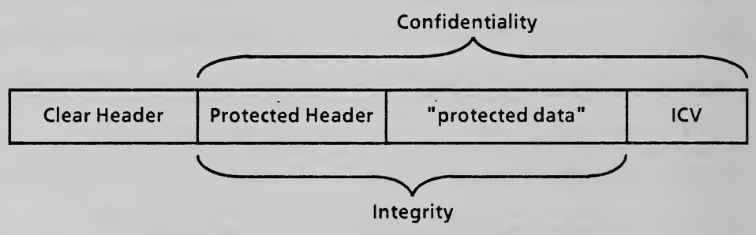
Figure 7-1. PDU Structure
図7-1. PDU の構造
The fields must appear in the order shown.
フィールドは、示された順に現れなければなりません。
Note that (as specified in detail in section 6) the presence or absence of an "optional" field is specified by the parameters associated with the key. The optional fields are optional in that a given key will require the presence of certain fields and the absence of other fields. Once the key is decided, the presence or absence of each field is not optional, but determined.
（第6節で詳しく規定されているとおり）「オプション」フィールドの有無は、鍵に関連付けられたパラメーターによって規定されます。オプションのフィールドがオプションと呼ばれるのは、鍵によって、特定のフィールドを存在させ、他のフィールドを存在させないことが要求されるためです。鍵が決まれば、各フィールドの有無はオプションではなく、定まります。
7.1 Clear Header
7.1 クリアヘッダー
Figure 7-2 shows the clear header. All fields are required and must appear in the order shown.
図7-2は、クリアヘッダーを示します。すべてのフィールドが必須であり、示された順に現れなければなりません。
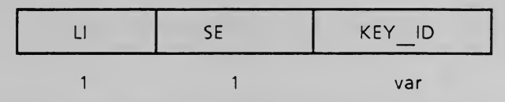
Figure 7-2. Clear Header
図7-2. クリアヘッダー
7.1.1 LI
7.1.1 LI
The length indicator field (LI) contains the length of the Clear Header in octets, excluding the length indicator field.
長さ指示子フィールド（LI）には、長さ指示子フィールドを除いた、クリアヘッダーの長さがオクテット単位で入ります。
7.1.2 SE
7.1.2 SE
This field contains the value 72 (48 hex). It may be interpreted as a PDU type code, indicating a Security PDU.
このフィールドには、値72（16進数で48）が入ります。これは、セキュリティ PDU を示す PDU タイプコードと解釈できます。
7.1.3 KEY_ID
7.1.3 KEY_ID
Figure 7-3 shows the KEY-ID field.
図7-3は、KEY-ID フィールドを示します。
Figure 7-3. KEY_ID
図7-3. KEY_ID
The KEY_ID field contains the key identifier.
KEY_ID フィールドには、鍵識別子が入ります。
7.2 Protected Header
7.2 保護ヘッダー
The contents of the protected header is determined from the key attribute addressing mode. Figures 7-4, 7-5, 7-6, and 7-7 show the protected header format for the ad_none (SP3-N), ad_A (SP3-A), ad_CLNP_hdr (SP3-I), and ad_IP_hdr (SP3-D) addressing modes.
保護ヘッダーの内容は、鍵属性のアドレッシングモードから決まります。図7-4、7-5、7-6、7-7は、アドレッシングモード ad_none（SP3-N）、ad_A（SP3-A）、ad_CLNP_hdr（SP3-I）、ad_IP_hdr（SP3-D）それぞれの保護ヘッダーの書式を示します。
The LI and FLAGS fields are required. All other fields are optional. Fields must occur in the order shown, if used.
LI と FLAGS のフィールドは必須です。その他のフィールドはすべてオプションです。フィールドは、使う場合、示された順に現れなければなりません。
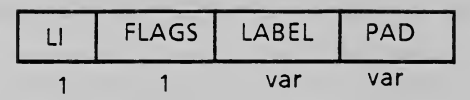
Figure 7-4 SP3-N. Protected Header
図7-4 SP3-N。保護ヘッダー
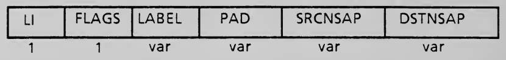
Figure 7-5 SP3-A. Protected Header
図7-5 SP3-A。保護ヘッダー
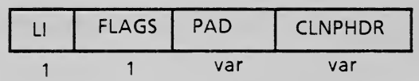
Figure 7-6 SP3-I. Protected Header
図7-6 SP3-I。保護ヘッダー
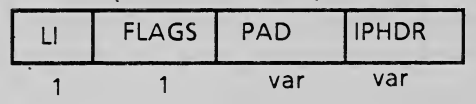
Figure 7-7 SP3-D. Protected Header
図7-7 SP3-D。保護ヘッダー
7.2.1 LI
7.2.1 LI
The length indicator field (LI) contains the length of the Protected Header in octets, excluding the length indicator field. It has a maximum value of 254 (FE hex).
長さ指示子フィールド（LI）には、長さ指示子フィールドを除いた、保護ヘッダーの長さがオクテット単位で入ります。最大値は254（16進数で FE）です。
7.2.2 Flags
7.2.2 フラグ
Bit 1 of the flags field is the Initiator-to-Responder flag. Value 0 means false; value 1 means true. True indicates the PDU is sent from the Initiator to the Responder (of the creation of the key). Bits 2-8 are reserved for future use.
フラグフィールドのビット1は、Initiator-to-Responder フラグです。値0は偽、値1は真を意味します。真は、PDU が（鍵の作成の）イニシエーターからレスポンダーへ送られることを示します。ビット2〜8は、将来の使用のために予約されています。
7.2.3 Label
7.2.3 ラベル
The optional LABEL field is used to define a security label of a PDU. Figure 7-8 shows the LABEL field.
オプションの LABEL フィールドは、PDU のセキュリティラベルを定義するために使います。図7-8は、LABEL フィールドを示します。
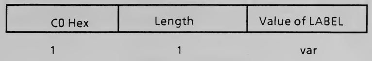
Figure 7-8. LABEL
図7-8. LABEL
The Length indicates the length of the Value of LABEL. The Value of LABEL has the following structure:
Length は、LABEL の Value の長さを示します。LABEL の Value は、次の構造を持ちます。
Figure 7-9. Value of LABEL
図7-9. LABEL の Value
The structure and interpretation of the Contents of the LABEL are defined by various Defining Authorities. The value 1 (one) indicates Defining Authority DoD. For Defining Authority DoD, the Content of LABEL has the following structure:
LABEL の Contents の構造と解釈は、さまざまな Defining Authority によって定義されます。値1（1）は、Defining Authority DoD を示します。Defining Authority DoD の場合、LABEL の Content は次の構造を持ちます。
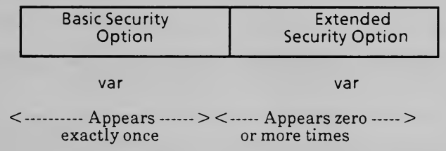
Figure 7-10. Contents of DoD Security Label
図7-10. DoD セキュリティラベルの Contents
The structure and interpretation of the Basic and Extended Security Options are those of the revised DoD IP Security Options. Within Content of LABEL, the Basic Security Option must appear before the Extended Security Options, if any.
Basic Security Option と Extended Security Options の構造と解釈は、改訂された DoD IP Security Options のものです。LABEL の Content の中では、Basic Security Option が、Extended Security Options がある場合はそれより前に現れなければなりません。
7.2.4 PAD
7.2.4 PAD
Figure 7-11 shows the PAD field.
図7-11は、PAD フィールドを示します。
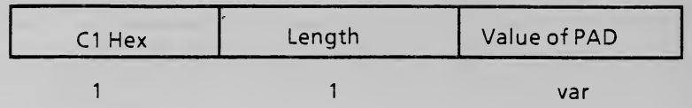
Figure 7-11. PAD
図7-11. PAD
The Length indicates the length of the Value of PAD. The value is arbitrary.
Length は、PAD の Value の長さを示します。値は任意です。
7.2.5 SRCNSAP
7.2.5 SRCNSAP
This field is only used in addressing mode A. Figure 7-12 shows the SRCNSAP field.
このフィールドは、アドレッシングモード A でのみ使います。図7-12は、SRCNSAP フィールドを示します。
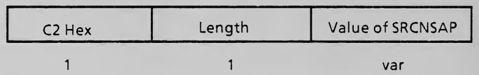
Figure 7-12. SRCNSAP
図7-12. SRCNSAP
The Length indicates the length of the Value of SRCNSAP. The Value of SRCNSAP is the source NSAP, expressed with the same syntax and semantics as used in the ISO CLNP protocol (ISO 8473).
Length は、SRCNSAP の Value の長さを示します。SRCNSAP の Value は送信元 NSAP で、ISO CLNP プロトコル（ISO 8473）で使われるものと同じ構文と意味で表されます。
7.2.6 DSTNSAP
7.2.6 DSTNSAP
This field is only used in addressing mode A. Figure 7-13 shows the DSTNSAP field.
このフィールドは、アドレッシングモード A でのみ使います。図7-13は、DSTNSAP フィールドを示します。
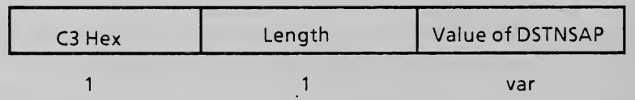
Figure 7-13. DSTNSAP
図7-13. DSTNSAP
The Length indicates the length of the Value of DSTNSAP. The Value of DSTNSAP is the destination NSAP, expressed with the same syntax and semantics as used in the ISO CLNP protocol (ISO 8473).
Length は、DSTNSAP の Value の長さを示します。DSTNSAP の Value は宛先 NSAP で、ISO CLNP プロトコル（ISO 8473）で使われるものと同じ構文と意味で表されます。
7.2.7 CLNPHDR
7.2.7 CLNPHDR
This field is only used in addressing mode I. Figure 7-14 shows the CLNPHDR field.
このフィールドは、アドレッシングモード I でのみ使います。図7-14は、CLNPHDR フィールドを示します。
| C4 Hex | Length | Value of CLNPHDR |
|---|---|---|
| 1 | 1 | var |
| C4 Hex | Length | CLNPHDR の Value |
|---|---|---|
| 1 | 1 | var |
Figure 7-14. CLNPHDR
図7-14. CLNPHDR
The length is the length of the value of CLNPHDR. The value of CLNPHDR is the encapsulated ISO CLNP header, in the format specified in ISO 8473.
Length は、CLNPHDR の Value の長さです。CLNPHDR の Value は、ISO 8473 で規定された書式の、カプセル化された ISO CLNP ヘッダーです。
7.2.8 IPHDR
7.2.8 IPHDR
This field is only used in addressing mode D. Figure 7-15 shows the format of IPHDR.
このフィールドは、アドレッシングモード D でのみ使います。図7-15は、IPHDR の書式を示します。
| C5 Hex | Length | Value of IPHDR |
|---|---|---|
| 1 | 1 | var |
| C5 Hex | Length | Value of IPHDR |
|---|---|---|
| 1 | 1 | var |
Figure 7-15. IPHDR
図7-15. IPHDR
The length is the length of the value of IPHDR. The value of IPHDR is the encapsulated DoD IP header, in the format specified by MIL-STD-1777.
Length は、IPHDR の Value の長さです。IPHDR の Value は、MIL-STD-1777 で規定された書式の、カプセル化された DoD IP ヘッダーです。
8 Minimum Essential Requirements
8 最低限の要件
Minimum essential requirements are capabilities which must be present in each SP3 implementation. The options used by SP3 are negotiated for each key, and are fixed for each key.
最小限の必須要件とは、すべての SP3 実装に備わっていなければならない能力です。SP3 が使うオプションは、鍵ごとにネゴシエートされ、鍵ごとに固定されます。
8.1 Addressing Modes
8.1 アドレッシングモード
The addressing mode is a negotiated option. Every SP3 running at an end system must implement SP3-N and SP3-A. Other addressing modes are optional. Every SP3 running at an intermediate system must implement SP3-A. SP3-N is not suitable for use by intermediate systems. SP3-I and SP3-D are optional.
アドレッシングモードは、ネゴシエートされるオプションです。エンドシステムで動作するすべての SP3 は、SP3-N と SP3-A を実装しなければなりません。その他のアドレッシングモードはオプションです。中間システムで動作するすべての SP3 は、SP3-A を実装しなければなりません。SP3-N は、中間システムでの使用には適しません。SP3-I と SP3-D はオプションです。
8.2 Security Services
8.2 セキュリティサービス
Security services are negotiated options.
セキュリティサービスは、ネゴシエートされるオプションです。
Every SP3 implementation must be capable of providing both integrity and confidentiality. Integrity-only and confidentiality-only are optional services.
すべての SP3 実装は、完全性と機密性の両方を提供できなければなりません。完全性のみ、および機密性のみは、オプションのサービスです。
Type I SP3 implementations must be capable of providing the security-label service. Labels are optional for Type II.
タイプ I の SP3 実装は、セキュリティラベルサービスを提供できなければなりません。ラベルは、タイプ II ではオプションです。
8.3 Padding
8.3 パディング
The use of padding is not negotiable. Every SP3 implementation must be capable of receiving and stripping the PAD option. Generation of padding is an optional capability.
パディングの使用はネゴシエートできません。すべての SP3 実装は、PAD オプションを受信して取り除くことができなければなりません。パディングの生成は、オプションの能力です。
9 Illustrations of SP3 Operation
9 SP3 の動作の例示
This section describes the operation of SP3 using various addressing modes. SP3 is defined to provide a connectionless network service. Its request and indication parameters are consistent with that definition.
この節では、さまざまなアドレッシングモードを使った SP3 の動作を説明します。SP3 は、コネクションレス型ネットワークサービスを提供するものとして定義されています。その request と indication のパラメーターは、その定義と整合しています。
9.1 SP3 Operation at an End System
9.1 エンドシステムでの SP3 の動作
This section describes SP3 operation at an end system, using different addressing modes. The transmission functions are as described in Section 6.4, and the reception functions are as described in Section 6.5. SP3 is defined to provide a connectionless network service. Its request and indication parameters are consistent with that definition. At end systems, a transmitting SP3 always operates on NSDUs, and a receiving SP3 delivers NSDUs to the layer above it.
この節では、異なるアドレッシングモードを使った、エンドシステムでの SP3 の動作を説明します。送信機能は第6.4節で、受信機能は第6.5節で説明したとおりです。SP3 は、コネクションレス型ネットワークサービスを提供するものとして定義されています。その request と indication のパラメーターは、その定義と整合しています。エンドシステムでは、送信する SP3 は常に NSDU に対して動作し、受信する SP3 は NSDU を上位の層に配送します。
9.1.1 Address Mode N
9.1.1 アドレスモード N
This mode is identical to SP4E. It is used only from end-system to end-system. SP3N encapsulates complete NSDUs. It does not include any addressing information in the encapsulated header. Network address information passed to SP3N by the transport layer is used in selecting the appropriate key and are then passed to the underlying network communications protocol in the SP3 service request. Network address information passed to SP3N in the network indication are validated against the key-ID and are passed to the transport layer in the SP3 indication.
このモードは SP4E と同一です。エンドシステム間でのみ使います。SP3N は、完全な NSDU をカプセル化します。カプセル化されたヘッダーには、アドレッシング情報を含めません。トランスポート層から SP3N に渡されたネットワークアドレス情報は、適切な鍵の選択に使われ、その後、SP3 のサービス要求で下位のネットワーク通信プロトコルに渡されます。ネットワーク indication で SP3N に渡されたネットワークアドレス情報は、key-ID に対して検証され、SP3 indication でトランスポート層に渡されます。
9.1.2 Address Mode A
9.1.2 アドレスモード A
SP3A also encapsulates complete NSDUs. The addressing information included in the encapsulated header is that passed to the source SP3 in the service request, namely source and destination end-system NSAP addresses. The source address passed in the SP3 service is the NSAP address associated with the source SP3. The destination address passed with the service request is the NSAP address associated with the destination SP3.
SP3A も、完全な NSDU をカプセル化します。カプセル化されたヘッダーに含まれるアドレッシング情報は、サービス要求で送信元の SP3 に渡されたもの、すなわち送信元と宛先のエンドシステムの NSAP アドレスです。SP3 サービスで渡される送信元アドレスは、送信元の SP3 に関連付けられた NSAP アドレスです。サービス要求とともに渡される宛先アドレスは、宛先の SP3 に関連付けられた NSAP アドレスです。
The network service indication passed to the receiving SP3 includes the NSAP address of the sending SP3. This is validated against the key-ID. The end-system NSAP addresses received in the encapsulated data are passed to the transport layer with the SP3 indication.
受信側の SP3 に渡されるネットワークサービス indication には、送信側の SP3 の NSAP アドレスが含まれます。これは key-ID に対して検証されます。カプセル化されたデータで受信したエンドシステムの NSAP アドレスは、SP3 indication でトランスポート層に渡されます。
9.1.3 Address Mode 1
9.1.3 アドレスモード 1
SP3I encapsulates complete NSDUs or fragments. The transmitting SP3I constructs a CLNP header for the entire NSDU. This header includes the source and destination NSAP addresses from the service request and other QOS parameters. If fragmentation is necessary before encapsulation, this is done. The fragments (or complete data unit) are them encapsulated and passed to the lower layer for transmission. The source address passed in the SP3 service request is the NSAP address associated with the source SP3. The destination address passed with the service request is the NSAP address associated with the destination SP3.
SP3I は、完全な NSDU またはフラグメントをカプセル化します。送信側の SP3I は、NSDU 全体について CLNP ヘッダーを構築します。このヘッダーには、サービス要求の送信元と宛先の NSAP アドレスと、その他の QOS パラメーターが含まれます。カプセル化の前にフラグメンテーションが必要な場合は、それが行われます。フラグメント（または完全なデータユニット）はその後カプセル化され、送信のために下位層に渡されます。SP3 サービス要求で渡される送信元アドレスは、送信元の SP3 に関連付けられた NSAP アドレスです。サービス要求とともに渡される宛先アドレスは、宛先の SP3 に関連付けられた NSAP アドレスです。
![Service boundary diagram of "SP3N", drawn as a label between two horizontal lines. Above it are the parameters "SP3 Destination Address", "SP3 Source Address", "SP3 Quality of Service" and "SP3 Userdata (NSDU)", with a down arrow labeled "Request" and an up arrow labeled "Indication" between them and the upper line. Below the lower line, a down arrow labeled "Request" and an up arrow labeled "Indication" lead to the parameters "SP3 Destination Address", "SP3 Source Address", "Network Quality of Service" and "Network User Data (SP3-PDU)". (Faint underscore-like strokes are printed between "SP3" and the following words.)](assets/ir-4250/p0039-figure-01.png)
The network service indication passed to the receiving SP3 includes the NSAP address of the sending SP3. This is validated against the key-ID. The key is used to remove the encapsulation. If the received data is a fragment, it must be reassembled. Complete NSDUs are passed to the higher layer, along with the end-system NSAP addresses received in the encapsulated data.
受信側の SP3 に渡されるネットワークサービス indication には、送信側の SP3 の NSAP アドレスが含まれます。これは key-ID に対して検証されます。鍵は、カプセル化を取り除くために使われます。受信したデータがフラグメントの場合は、再構成しなければなりません。完全な NSDU は、カプセル化されたデータで受信したエンドシステムの NSAP アドレスとともに、上位層に渡されます。
9.1.4 Address Mode D
9.1.4 アドレスモード D
This is identical to SP3I, except that the DoD IP format and protocol rules are used.
これは SP3I と同一ですが、DoD IP の書式とプロトコル規則を使う点が異なります。
9.2 SP3 Operation at an Intermediate System
9.2 中間システムでの SP3 の動作
Parameters which are associated with each separate PDU can be carried through a network by a connectionless network protocol. These are processed by the intermediate system and used to construct the SP3 PDU. On reception at an intermediate system SP3, the information in the SP3 PDU is used to construct a PDU for the destination network.
個々の PDU に関連付けられたパラメーターは、コネクションレス型ネットワークプロトコルによってネットワークを通じて運ばれます。これらは中間システムで処理され、SP3 PDU の構築に使われます。中間システムの SP3 で受信すると、SP3 PDU の情報は、宛先ネットワーク向けの PDU の構築に使われます。
9.2.1 Address Mode A
9.2.1 アドレスモード A
This mode uses protocol conversion at the intermediate system. Figure 9-1 shows the operation of SP3-A between B and C. SP3 carries explicit source and destination addresses and (optionally) security label. The network protocol carries the other communications parameters. SP3-A operates only on complete NSDUs. If the SNICP in the network between A and B fragments the PDUs, then intermediate system B must reassemble the fragments before encapsulating them. SP3-A is the intermediate system mode which is closest to being protocol-independent of the other SNICP in the network.
このモードは、中間システムでプロトコル変換を使います。図9-1は、B と C の間の SP3-A の動作を示します。SP3 は、明示的な送信元と宛先のアドレスと、（任意で）セキュリティラベルを運びます。ネットワークプロトコルは、その他の通信パラメーターを運びます。SP3-A は、完全な NSDU に対してのみ動作します。A と B の間のネットワークの SNICP が PDU をフラグメント化する場合、中間システム B は、カプセル化の前にフラグメントを再構成しなければなりません。SP3-A は、ネットワーク内の他の SNICP からのプロトコル独立性が最も高い、中間システム向けのモードです。
![Layer diagram of three systems labeled "A", "B" and "C" along the bottom. End system A (left): a stack of "Transport", "Other SNICP", "Lower Network Sublayers". Intermediate system B (middle): "Other SNICP reassembles on receive" over "Lower Network Sublayers" on the left, "SP3-A on NSDUs" over "Lower Network Sublayers" on the right, and a box "Routing & Relay on NSDUs" spanning between them. End system C (right): a stack of "Transport", "SP3-A on NSDUs", "Lower Network Sublayers". Lines below the stacks connect A to B's left "Lower Network Sublayers", and B's right "Lower Network Sublayers" to C.](assets/ir-4250/p0040-drawing-01.png)
Figure 9-1. SP3-A at an intermediate system
図9-1. 中間システムでの SP3-A
9.2.2 Address Mode I
9.2.2 アドレスモード I
Address mode I uses header encapsulation at an intermediate system. Figure 9-2 shows the operation of this mode between B and C. SP3-I carries the source and destination addresses, optional security label and communications parameters in an encapsulated CLNP header. It can operate on complete NSDUs or fragments. SP3-I incorporates CLNP processing in order to operate on the CLNP header.
アドレスモード I は、中間システムでヘッダーのカプセル化を使います。図9-2は、B と C の間のこのモードの動作を示します。SP3-I は、送信元と宛先のアドレス、任意のセキュリティラベル、および通信パラメーターを、カプセル化された CLNP ヘッダーで運びます。完全な NSDU またはフラグメントに対して動作できます。SP3-I は、CLNP ヘッダーに対して動作するために、CLNP 処理を組み込みます。
![Layer diagram of three systems labeled "A", "B" and "C" along the bottom. End system A (left): a stack of "Transport", "CLNP generates CLNP - HDR", "Lower Network Sublayers". Intermediate system B (middle): "CLNP CLNP - HDR" over "Lower Network Sublayers" on the left, "SP3 -I encapsulates CLNP-HDR" over "Lower Network Sublayers" on the right, and a box "Routing & Relay" spanning between them. End system C (right): a stack of "Transport", "SP3-I processes CLNP - HDR", "Lower Network Sublayers". Lines below the stacks connect A to B's left "Lower Network Sublayers", and B's right "Lower Network Sublayers" to C.](assets/ir-4250/p0041-drawing-01.png)
Figure 9-2. SP3-I at an Intermediate System
図9-2. 中間システムでの SP3-I
9.2.3 Address Mode D
9.2.3 アドレスモード D
This mode is similar to address mode I, except that it incorporates the DoD IP protocol instead of CLNP. Figure 9-3 shows the operation of SP3-D between B and C.
このモードはアドレスモード I に似ていますが、CLNP の代わりに DoD IP プロトコルを組み込む点が異なります。図9-3は、B と C の間の SP3-D の動作を示します。
![Layer diagram of three systems labeled "A", "B" and "C" along the bottom. End system A (left): a stack of "Transport", "IP generates IP - HDR", "Lower Network Sublayers". Intermediate system B (middle): "IP IP - HDR" over "Lower Network Sublayers" on the left, "SP3 -D encapsulates IP-HDR" over "Lower Network Sublayers" on the right, and a box "Routing & Relay" spanning between them. End system C (right): a stack of "Transport", "SP3-D processes IP - HDR", "Lower Network Sublayers". Lines below the stacks connect A to B's left "Lower Network Sublayers", and B's right "Lower Network Sublayers" to C.](assets/ir-4250/p0041-drawing-02.png)
Figure 9-3. SP3-D at an Intermediate System
図9-3. 中間システムでの SP3-D
SPECIFICATION SDN.301.1
Revision 1.2 1988-07-12
仕様 SDN.301.1
改訂 1.2 1988-07-12
SDNS
Secure Data Network Systems
Security Protocol 3 (SP3)
Addendum I
Cooperating Families
SDNS
Secure Data Network Systems
Security Protocol 3 (SP3)
Addendum I
Cooperating Families
Source: SDNS Protocol and Signaling Working Group
SP3 Sub-Group
出典: SDNS Protocol and Signaling Working Group
SP3 Sub-Group
Introductory note:
序文:
This document provides the framework for Addendum I of the SDNS Security Protocol at layer three (SP3). This document is being circulated for comment and approval. It is subject to change during the development phase of SDNS.
この文書は、レイヤー3の SDNS セキュリティプロトコル（SP3）の補遺 I の枠組みを提供します。この文書は、意見と承認を得るために回覧されています。SDNS の開発段階の間に変更される場合があります。
TABLE OF CONTENTS
目次
COOPERATING FAMILIES
協調ファミリー（COOPERATING FAMILIES）
0 Introduction
0 序論
This addendum describes cooperating families, an optional mechanism for providing routing flexibility in internetworks. It describes:
この補遺は、インターネットワークでルーティングの柔軟性を提供する任意のメカニズムである、協調ファミリー（cooperating family）を記述します。次のことを記述します。
•a. additional key attributes (referenced in SDN.301 section 6.3) and
•a. 追加の鍵属性（SDN.301 第6.3節で参照されたもの）、および
•b. modification to the processing of Section 6.4.6.
•b. 第6.4.6節の処理の修正。
which must be implemented if the SP3 entity wishes to take advantage of a possibility that a peer entity is a member of a cooperating family.
これらは、SP3 エンティティが、ピアのエンティティが協調ファミリーのメンバーである可能性を利用したい場合に、実装しなければなりません。
The cooperating family mechanism allows an SP3 PDU to be received and processed by multiple SP3 entities at intermediate systems. Members of cooperating families share traffic encryption keys by a mechanism outside the scope of this document. The family may also have a mechanism to reassemble network layer fragments delivered to different members. The data sharing mechanism for fragments and the reassembly mechanisms are also outside the scope of this document.
協調ファミリーのメカニズムにより、SP3 PDU を、中間システムにある複数の SP3 エンティティで受信して処理できます。協調ファミリーのメンバーは、この文書の範囲外のメカニズムによって、トラフィック暗号化鍵を共有します。ファミリーは、異なるメンバーに配送されたネットワーク層フラグメントを再構成するメカニズムを持つ場合もあります。フラグメントのデータ共有メカニズムと再構成メカニズムも、この文書の範囲外です。
Consider the situation of figure 0-1.
図0-1の状況を考えます。
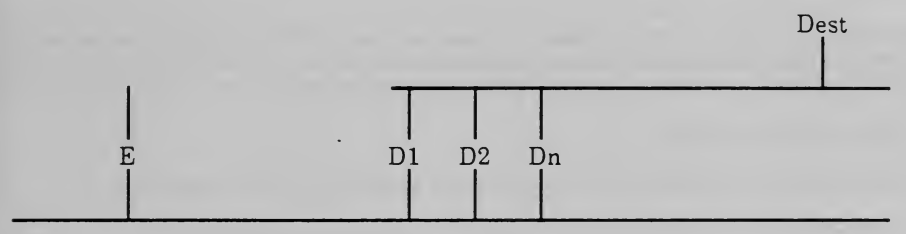
Figure 0-1
図0-1
This figure shows SP3 entities E and D1, D2, ... Dn. D1, D2 ... Dn are located at intermediate systems. E may be at either an intermediate system or an end system. Consider a unit encrypted at E, whose ultimate destination is the end system Dest.
この図は、SP3 エンティティ E と D1、D2、...、Dn を示しています。D1、D2、...、Dn は中間システムに置かれています。E は、中間システムとエンドシステムのどちらにあってもかまいません。E で暗号化され、最終的な宛先がエンドシステム Dest であるユニットを考えます。
In the absence of SP3, the unit would be routed through one of the intermediate systems D1 ... Dn. If one of the Ds is unavailable, traffic will be re-routed through another in a transparent fashion.
SP3 がない場合、ユニットは中間システム D1、...、Dn のいずれかを経由してルーティングされます。D のいずれかが利用できない場合、トラフィックは、透過的な形で別の D を経由するよう再ルーティングされます。
With SP3, in the absence of the special cooperating family capabilities, E will encrypt the unit in some key which is held by some particular D, say D2. The encrypted unit must be sent to D2, since it cannot be processed by any other of the Ds.
SP3 を使う場合、特別な協調ファミリーの能力がなければ、E は、ある特定の D（たとえば D2）が保持する鍵でユニットを暗号化します。暗号化されたユニットは、他のどの D でも処理できないため、D2 に送らなければなりません。
Using cooperating family capabilities D1 ... Dn share keys via some pre-arranged mechanism such that any key held by one will be held by all. When this is the case, any one of them can decrypt a unit received by any member of the cooperating family.
協調ファミリーの能力を使うと、D1、...、Dn は、あらかじめ取り決めたメカニズムを通じて、どれか1つが保持する鍵をすべてが保持するように、鍵を共有します。この場合、協調ファミリーのどのメンバーが受信したユニットも、そのうちのどれでも復号できます。
The encrypted unit can be addressed (BN_Destination_Address) to any of the Ds, to Dest, or to any location served via the Ds; in fact in any way that causes it to be routed to or through one of the Ds. (After decryption, the address of Dest is recovered from the SP3 protected header.) This mechanism recovers the routing transparency that was present before the addition of SP3.
暗号化されたユニットは、D のいずれか、Dest、または D を経由してサービスされる任意の場所に宛てることができます（BN_Destination_Address）。実際には、D のいずれかにルーティングされるか、いずれかを経由してルーティングされるようなあらゆる方法で宛てることができます。（復号後、Dest のアドレスは SP3 保護ヘッダーから復元されます。）このメカニズムは、SP3 を追加する前に存在していたルーティングの透過性を回復します。
However, there is a second difficulty: Due to the nature of cryptographic algorithms, what is encrypted as one unit must be decrypted as one unit; fragments cannot be decrypted. So, suppose D1 ... Dn share keys. Suppose a unit encrypted by E is fragmented while encrypted, and the fragments are delivered to different Ds. These fragments cannot be processed. Therefore, in the absence of a special capability on the part of the Ds to handle this situation, the encryptor E must somehow arrange that all fragments of an encrypted unit arrive at the same decryptor.
しかし、2つ目の困難があります。暗号アルゴリズムの性質上、1つのユニットとして暗号化されたものは、1つのユニットとして復号しなければなりません。フラグメントは復号できません。そこで、D1、...、Dn が鍵を共有しているとします。E が暗号化したユニットが、暗号化されたままフラグメント化され、そのフラグメントが異なる D に配送されたとします。これらのフラグメントは処理できません。したがって、D がこの状況を扱う特別な能力を持たない場合、暗号化側の E は、暗号化されたユニットのすべてのフラグメントが同じ復号側に到着するよう、何らかの方法で手配しなければなりません。
The "reassemble fragments" capability on the part of the Ds means that the Ds are able to gather fragments of an encrypted unit arriving at multiple Ds together at a single one of the Ds and reassemble and process them.
D の「フラグメントの再構成」能力とは、複数の D に到着した暗号化ユニットのフラグメントを、D のうち1つに集め、再構成して処理できることを意味します。
The SP3 protocol does not define the mechanisms by which D1 ... Dn either share keys or reassemble fragments.
SP3 プロトコルは、D1、...、Dn が鍵を共有したりフラグメントを再構成したりするメカニズムを定義しません。
1 Definitions
1 定義
A cooperating family of intermediate systems is a set of SP3 entities which share a common cryptographic key. The mechanism for sharing keys and data among cooperating family members is outside the scope of this document.
中間システムの協調ファミリーとは、共通の暗号鍵を共有する SP3 エンティティの集合です。協調ファミリーのメンバー間で鍵とデータを共有するメカニズムは、この文書の範囲外です。
2 Keys and Attributes
2 鍵と属性
The following key attributes are in addition to those listed in Section 6.3.:
次の鍵属性は、第6.3節に列挙されたものに追加されます。
1.1. Whether the peer SP3 entity is a member of a cooperating family.
1.1. ピアの SP3 エンティティが協調ファミリーのメンバーかどうか。
2.2. Whether the cooperating family can reassemble fragments delivered to more than one member of the family.
2.2. 協調ファミリーが、ファミリーの複数のメンバーに配送されたフラグメントを再構成できるかどうか。
3.3. NSAP addresses of the members of the family.
3.3. ファミリーのメンバーの NSAP アドレス。
4.4. NSAP addresses which can be used to reach members of the family
4.4. ファミリーのメンバーに到達するために使える NSAP アドレス
In explanation of item 4: As described in the introduction, an encrypted unit to be decrypted at a cooperating family may be addressed (BN_Destination_Address) in any way that causes it to be routed to or through any member of the family. The list of 'NSAP addresses which can be used to reach members of the family’ is the list of values to which BN_Destination_Addresses may be set. This may include end system addresses on networks behind the cooperating family.
項目4の説明: 序論で述べたとおり、協調ファミリーで復号される暗号化ユニットは、ファミリーのいずれかのメンバーにルーティングされるか、いずれかを経由してルーティングされるようなあらゆる方法で宛てることができます（BN_Destination_Address）。「ファミリーのメンバーに到達するために使える NSAP アドレス」の一覧は、BN_Destination_Addresses に設定できる値の一覧です。これには、協調ファミリーの背後にあるネットワーク上のエンドシステムのアドレスが含まれる場合があります。
NOTE: Items 3 and 4 above, plus items 8 and 9 of Section 6.3, together comprise the following list of addresses. Each of the items is included in the next with the exception of c., which contains addresses also found in b. that are not included in d.
注: 上記の項目3と4に、第6.3節の項目8と9を加えたものが、次のアドレスの一覧を構成します。c. を除き、各項目は次の項目に含まれます。c. には、b. にも見られるアドレスのうち d. に含まれないものが含まれます。
•a. The NSAP address of the peer SP3 entity
•a. ピアの SP3 エンティティの NSAP アドレス
•b. NSAP addresses of the members of the family
•b. ファミリーのメンバーの NSAP アドレス
•c. NSAP addresses which can be used to reach members of the family
•c. ファミリーのメンバーに到達するために使える NSAP アドレス
•d. All NSAP addresses served via the peer SP3 entity
•d. ピアの SP3 エンティティを介してサービスされるすべての NSAP アドレス
3 Network Request
3 ネットワーク要求
The following modifies the specification of the setting of BN_Destination_Address, described in section 6.4.6.
以下は、第6.4.6節で説明した BN_Destination_Address の設定の仕様を修正します。
During a transmission network request function (section 6.4.6), if the peer SP3 entity is a member of a cooperating family, then:
送信のネットワーク要求機能（第6.4.6節）の間に、ピアの SP3 エンティティが協調ファミリーのメンバーである場合は、次のとおりです。
•a. BN_Destination_Address may be set to the NSAP address of the peer SP3 entity, or
•a. BN_Destination_Address を、ピアの SP3 エンティティの NSAP アドレスに設定してもよいです。または
•b. BN_Destination_Address may be set to the NSAP address of any member of the cooperating family,
•b. BN_Destination_Address を、協調ファミリーの任意のメンバーの NSAP アドレスに設定してもよいです。
•c. BN_Destination_Address may be set to any NSAP address which can be used to reach members of the family. If the cooperating family does not reassemble fragments delivered to different members of the family, then the source entity must ensure that the SP3 PDU does not become fragmented. One mechanism for doing this is to request the lower sublayer not to allow fragmentation.
•c. BN_Destination_Address を、ファミリーのメンバーに到達するために使える任意の NSAP アドレスに設定してもよいです。協調ファミリーが、ファミリーの異なるメンバーに配送されたフラグメントを再構成しない場合、送信元のエンティティは、SP3 PDU がフラグメント化されないことを確実にしなければなりません。そのための方法の1つは、下位サブレイヤーにフラグメンテーションを許可しないよう要求することです。
SPECIFICATION SDN.401
Revision 1.3 1989-05-02
仕様 SDN.401
改訂 1.3 1989-05-02
SDNS
Secure Data Network Systems
Security Protocol 4 (SP4)
SDNS
Secure Data Network Systems
Security Protocol 4 (SP4)
Forward:
送付先:
The SDNS architecture, and its associated specifications, were developed as a cooperative project between government and industry. The project was sponsored by the National Security Agency, and supported by the National Institute of Standards and Technology (formerly the National Bureau of Standards) and the Defense Communications Agency. Twelve leading U.S. companies in computers and telecommunications made significant contributions of their technical talents and development resources. The combined efforts of these organizations produced the basis for improved security technology, interoperable security standards, and cost-effective security for computers and telecommunications.
SDNS アーキテクチャとその関連仕様は、政府と産業界の協力プロジェクトとして開発されました。このプロジェクトは国家安全保障局が後援し、国立標準技術研究所（旧米国標準局）と国防通信局（Defense Communications Agency）が支援しました。コンピューターおよび電気通信分野の米国の主要企業12社が、技術力と開発資源の面で大きく貢献しました。これらの組織の共同の取り組みにより、改善されたセキュリティ技術、相互運用可能なセキュリティ標準、ならびにコンピューターと電気通信のための費用対効果の高いセキュリティの基礎が生まれました。
Introductory note:
序文:
This document provides the framework for the SDNS Security Protocol at layer four (SP4). This document is being circulated for comment and approval. It is subject to change during the development phase of SDNS.
この文書は、レイヤー4の SDNS セキュリティプロトコル（SP4）の枠組みを提供します。この文書は、意見と承認を得るために回覧されています。SDNS の開発段階の間に変更される場合があります。
TABLE OF CONTENTS
目次
0 INTRODUCTION
0 はじめに
The transport protocol specified in International Standard (ISO) 8073 provides the connection oriented transport service described in ISO 8072. The transport protocol specified in ISO 8602 provides the connectionless-mode transport service described in ISO 8072/DAD1. This document specifies optional extensions to ISO 8073 and ISO 8602 permitting the use of cryptographic techniques to provide data protection for transport connections or for connectionless-mode TPDU transmission.
国際標準（ISO）8073 で規定されたトランスポートプロトコルは、ISO 8072 で記述されたコネクション型トランスポートサービスを提供します。ISO 8602 で規定されたトランスポートプロトコルは、ISO 8072/DAD1 で記述されたコネクションレスモードのトランスポートサービスを提供します。この文書は、トランスポート接続、またはコネクションレスモードの TPDU 伝送にデータ保護を提供するために暗号技術を使えるようにする、ISO 8073 と ISO 8602 のオプションの拡張を規定します。
ISO 8072 describes Transport Connection (TC) protection as the prevention of unauthorized monitoring or manipulation of Transport Service (TS) user data. The TS users specify TC protection qualitatively by selecting one of four TC protection quality of service options during the TC establishment phase:
ISO 8072 は、トランスポート接続（TC）の保護を、トランスポートサービス（TS）のユーザーデータの無許可の監視または操作の防止として記述しています。TS ユーザーは、TC 確立フェーズで、4つの TC 保護サービス品質オプションのうち1つを選択することにより、TC の保護を定性的に指定します。
•a) no protection features;
•a) 保護機能なし。
DP 7498/2 on OSI Security Architecture uses the following terms for these security services:
OSI セキュリティアーキテクチャに関する DP 7498/2 は、これらのセキュリティサービスについて次の用語を使います。
•a) no security services;
•a) セキュリティサービスなし。
The two subclasses of SP4 are distinguished on the basis of the granularity of cryptographic associations that are established. They are:
SP4 の2つのサブクラスは、確立される暗号アソシエーションの粒度に基づいて区別されます。それらは次のとおりです。
1.1. SP4C: Connection oriented protection in which each transport connection is individually protected with a different cryptographic key; can provide full connection integrity and confidentiality.
1.1. SP4C: コネクション型の保護で、各トランスポート接続が、それぞれ異なる共通鍵で個別に保護されます。完全なコネクション完全性と機密性を提供できます。
2.2. SP4E: End system to end system protection in which all connections between a pair of end systems are protected with the same cryptographic key; can provide connectionless integrity and confidentiality.
2.2. SP4E: エンドシステムからエンドシステムへの保護で、一対のエンドシステム間のすべての接続が同じ共通鍵で保護されます。コネクションレスの完全性と機密性を提供できます。
Table 1S summarizes the connectionless and connection-oriented security services provided when SP4 is used with a connection-oriented transport protocol.Table 2S summarizes the connectionless security services provided when SP4 is used with a connectionless transport protocol.
表1Sは、SP4 をコネクション型トランスポートプロトコルとともに使う場合に提供される、コネクションレスおよびコネクション型のセキュリティサービスをまとめたものです。表2Sは、SP4 をコネクションレス型トランスポートプロトコルとともに使う場合に提供される、コネクションレスのセキュリティサービスをまとめたものです。
| Connectionless - SP4E | Connection-oriented - SP4C | |
|---|---|---|
| Confidentiality | prevent cleartext disclosure | prevent cleartext disclosure |
| Integrity | detect TPDU modification | detect TPDU modification, replay, addition, or deletion |
| コネクションレス - SP4E | コネクション型 - SP4C | |
|---|---|---|
| 機密性 | 平文の開示を防ぐ | 平文の開示を防ぐ |
| 完全性 | TPDU の改変を検知する | TPDU の改変、再生、追加、削除を検知する |
Table 1S: Security Services Available in Conjunction with ISO 8073
表1S: ISO 8073 とともに利用できるセキュリティサービス
| Connectionless | |
|---|---|
| Confidentiality | prevent cleartext disclosure |
| Integrity | detect TPDU modification |
| コネクションレス | |
|---|---|
| 機密性 | 平文の開示を防ぐ |
| 完全性 | TPDU の改変を検知する |
Table 2S: Security Services Available in Conjunction with ISO 8602
表2S: ISO 8602 とともに利用できるセキュリティサービス
This document specifies protocol extensions for providing confidentiality and integrity data protection, including:
この文書は、機密性と完全性のデータ保護を提供するための、次を含むプロトコル拡張を規定します。
•a) procedures incorporating cryptographic techniques in protocol processing,
•a) プロトコル処理に暗号技術を取り入れる手順、
•b)the minimum characteristics of cryptographic algorithms with which these procedures can be used.
•b) これらの手順で使える暗号アルゴリズムの最小限の特性。
•c) the structure and encoding of data units necessary to achieve interoperability.
•c) 相互運用性を実現するために必要なデータユニットの構造と符号化。
The following figures show the location of SP4 in the seven layer ISO model.
次の図は、7層の ISO モデルにおける SP4 の位置を示します。

1 SCOPE AND FIELD OF APPLICATION
1 適用範囲と適用分野
The procedures specified in this document operate as extensions to those defined in ISO 8073 and ISO 8602 and do not preclude unprotected communication between transport entities implementing ISO 8073 or ISO 8602.
この文書で規定する手順は、ISO 8073 と ISO 8602 で定義された手順の拡張として動作し、ISO 8073 または ISO 8602 を実装するトランスポートエンティティ間の保護されない通信を妨げません。
The degree of protection achieved will depend upon proper management of cryptographic keys. The procedures in this document assume that:
達成される保護の度合いは、暗号鍵の適切な管理に依存します。この文書の手順は、次のことを前提としています。
•a) storage for cryptographic keys is available;
•a) 暗号鍵の保管場所を利用できます。
•b) both the sending and receiving transport entities have the same cryptographic key available (i.e., symetric key for data protection use);
•b) 送信側と受信側の両方のトランスポートエンティティが、同じ暗号鍵（すなわち、データ保護に使う共通鍵）を利用できます。
•c) cryptographic keys are pairwise (i.e., shared only between two end-systems for data protection).
•c) 暗号鍵はペアワイズです（すなわち、データ保護のために2つのエンドシステム間でのみ共有される）。
This document does not define how the cryptographic keys are created, updated or otherwise managed.
この文書は、暗号鍵をどのように作成、更新、またはその他の方法で管理するかを定義しません。
This protocol can support the access control service described in ISO 7498/2 using security labeling and using attributes associated with cryptographic keys. This protocol can support the peer entity authentication and data origin authentication services described in ISO 7498/2 using attributes associated with cryptographic keys.
このプロトコルは、セキュリティラベル付けと、暗号鍵に関連付けられた属性を使って、ISO 7498/2 に記述されたアクセス制御サービスをサポートできます。このプロトコルは、暗号鍵に関連付けられた属性を使って、ISO 7498/2 に記述されたピアエンティティ認証とデータ起源認証のサービスをサポートできます。
NOTE
The security label function provides access control enforcement (see section 6.5).
注
セキュリティラベル機能は、アクセス制御の実施を提供します（第6.5節を参照）。
2 REFERENCES
2 参照
| ISO 7498 | Information Processing Systems -Open Systems Interconnection - Basic Reference Model |
| ISO 7498/AD1 | Information Processing Systems -Open Systems Interconnection - Basic Reference Model - Addendum 1: Connectionless Mode Transmission |
| ISO 7498-2 | Information Processing Systems - Open System Interconnection - Security Architecture |
| ISO 8072 | Information Processing Systems -Open Systems Interconnection - Transport Service Definition |
| ISO 8072/AD1 | Information Processing Systems -Open Systems Interconnection - Addendum to the Transport Service Definition Covering Connectionless Mode Transmission |
| ISO 8073 | Information Processing Systems -Open Systems Interconnection - Transport Protocol Specification |
| ISO 8602 | Information Processing Systems -Open Systems Interconnection - Protocol for Providing the Connectionless-Mode Transport Service |
| ISO 7498 | Information Processing Systems -Open Systems Interconnection - Basic Reference Model |
| ISO 7498/AD1 | Information Processing Systems -Open Systems Interconnection - Basic Reference Model - Addendum 1: Connectionless Mode Transmission |
| ISO 7498-2 | Information Processing Systems - Open System Interconnection - Security Architecture |
| ISO 8072 | Information Processing Systems -Open Systems Interconnection - Transport Service Definition |
| ISO 8072/AD1 | Information Processing Systems -Open Systems Interconnection - Addendum to the Transport Service Definition Covering Connectionless Mode Transmission |
| ISO 8073 | Information Processing Systems -Open Systems Interconnection - Transport Protocol Specification |
| ISO 8602 | Information Processing Systems -Open Systems Interconnection - Protocol for Providing the Connectionless-Mode Transport Service |
3 DEFINITIONS
3 定義
This document is based on the concepts developed in the Reference Model for Open Systems Interconnection (ISO 7498) including ISO 7498/2 on Security Architecture, and makes use of the following terms defined in the ISO 7498/2:
この文書は、セキュリティアーキテクチャに関する ISO 7498/2 を含む、開放型システム間相互接続の参照モデル（ISO 7498）で開発された概念に基づいており、ISO 7498/2 で定義された次の用語を使います。
•a) access control
•a) アクセス制御
•b) ciphertext
•b) 暗号文
•c) cleartext
•c) 平文
•d) confidentiality
•d) 機密性
•e) data integrity
•e) データ完全性
•f) data origin authentication
•f) データ起源認証
•g) denial of service
•g) サービス拒否
•h) end-to-end encipherment
•h) エンドツーエンド暗号化
•i) key
•i) 鍵
•j) key management
•j) 鍵管理
Additionally, this document uses the following definitions:
加えて、この文書は次の定義を使います。
•a) cryptographic association: a state between two entities which share a pairwise key. The entities associate common attributes with the key.
•a) 暗号アソシエーション（cryptographic association）: ペアワイズ鍵を共有する2つのエンティティの間の状態。エンティティは、共通の属性をその鍵に関連付けます。
•b) cryptoperiod: length of time or amount of information that a key is good.
•b) 暗号期間（cryptoperiod）: 鍵が有効である時間の長さまたは情報の量。
•c) pairwise key: a key generated for two specific transport entities and unavailable to any other users.
•c) ペアワイズ鍵（pairwise key）: 特定の2つのトランスポートエンティティのために生成され、他のユーザーが利用できない鍵。
•d) reflection protection: to detect that a message has been sent back.
•d) 反射防御（reflection protection）: メッセージが送り返されたことを検知すること。
4 SYMBOLS AND ABBREVIATIONS
4 記号と略語
This Addendum makes use of the following abbreviations from Clause 4 of ISO 8073:
この補遺は、ISO 8073 の第4項の次の略語を使います。
| CR TPDU | Connection request TPDU |
| DC TPDU | Disconnect confirm TPDU |
| DR TPDU | Disconnect request TPDU |
| DST-REF | Destination reference (field) |
| DT TPDU | Data TPDU |
| ED TPDU | Expedited Data TPDU |
| ED-TPDU-NRED | TPDU number (field) |
| ER TPDU | Error TPDU |
| LI | length indicator (field) |
| NSAP | Network service access point |
| SRC-REF | Source Reference (field) |
| TPDU | Transport protocol data unit |
| TPDU-NR | DT TPDU number (field) |
| CR TPDU | 接続要求 TPDU |
| DC TPDU | 切断確認 TPDU |
| DR TPDU | 切断要求 TPDU |
| DST-REF | 宛先参照（フィールド） |
| DT TPDU | データ TPDU |
| ED TPDU | 緊急データ TPDU |
| ED-TPDU-NRED | TPDU 番号（フィールド） |
| ER TPDU | エラー TPDU |
| LI | 長さ指示子（フィールド） |
| NSAP | ネットワークサービスアクセスポイント |
| SRC-REF | 送信元参照（フィールド） |
| TPDU | トランスポートプロトコルデータユニット |
| TPDU-NR | DT TPDU 番号（フィールド） |
Additionally, the following abbreviations are used in this Addendum:
加えて、この補遺では次の略語を使います。
| FSN | Final Sequence Number (field) |
| ICV | Integrity Check Value |
| KEY-ID | Key Identifier |
| LABEL | Security Label |
| LME | Layer Management Entity |
| NSDU | Network Service Data Unit |
| PAD | Padding (field) |
| SE TPDU | Security Encapsulation TPDU |
| FSN | 最終シーケンス番号（フィールド） |
| ICV | 完全性チェック値 |
| KEY-ID | 鍵識別子 |
| LABEL | セキュリティラベル |
| LME | レイヤー管理エンティティ |
| NSDU | ネットワークサービスデータユニット |
| PAD | パディング（フィールド） |
| SE TPDU | セキュリティカプセル化 TPDU |
5 OVERVIEW OF THE PROTOCOL
5 プロトコルの概要
5.1 Transport Security Services
5.1 トランスポートセキュリティサービス
The specific SP4 processing options used in an instance of communications are determined by the attributes associated with the pairwise cryptographic key. SP4 assumes that two transport entities using the same pairwise key will associate identical sets of attributes with that key. Thekey identifier, KEY_ID, points to the appropriate set of attributes for the pairwise key.
通信の1つのインスタンスで使う SP4 の具体的な処理オプションは、ペアワイズ暗号鍵に関連付けられた属性によって決まります。SP4 は、同じペアワイズ鍵を使う2つのトランスポートエンティティが、その鍵に同一の属性の集合を関連付けることを前提とします。鍵識別子 KEY_ID は、そのペアワイズ鍵の適切な属性の集合を指します。
The following paragraphs define these attributes and list the defined mnemonics used to refer to the attributes in this specificaition. Note that the selections under each attribute are mutually exclusive - only one can be active for each cryptographic association.
以下の段落では、これらの属性を定義し、この仕様でそれらの属性を指すために使う定義済みのニーモニックを列挙します。各属性の選択肢は互いに排他的であり、1つの暗号アソシエーションについて有効にできるのは1つだけであることに注意してください。
•KEY GRANULARITY
•鍵の粒度（KEY GRANULARITY）
A SP4 entity shall support one or more of the following key granularities:
SP4 エンティティは、次の鍵の粒度のうち1つ以上をサポートしなければなりません。
| kg_tc | A separate cryptographic key is used for each transport connection |
| kg_esp | A separate cryptographic key is used for each end system pair. |
| kg_esp_sr | a separate cryptographic key is used for each end system pair and security level set |
| kg_tc | トランスポート接続ごとに別々の暗号鍵を使う |
| kg_esp | エンドシステムのペアごとに別々の暗号鍵を使います。 |
| kg_esp_sr | エンドシステムのペアとセキュリティレベルの集合ごとに別々の暗号鍵を使う |
•CONFIDENTIALITY
•機密性（CONFIDENTIALITY）
The confidentiality attribute specifies whether a confidentiality service is to be provided with this cryptographic key for the cryptographic association.
機密性属性は、暗号アソシエーションについて、この暗号鍵で機密性サービスを提供するかどうかを指定します。
| conf_yes | confidentiality is to be provided |
| conf_no | confidentiality is not to be provided |
| conf_yes | 機密性を提供する |
| conf_no | 機密性を提供しない |
•CONFIDENTIALITY ALGORITHM
•機密性アルゴリズム（CONFIDENTIALITY ALGORITHM）
This attribute identifies the algorithm to be used, and all of its associated parameters, if the confidentiality attribute specifies that confidentiality is to be supplied under this key (conf_yes).
この属性は、機密性属性が、この鍵の下で機密性を提供することを指定している場合（conf_yes）に使うアルゴリズムと、それに関連するすべてのパラメーターを識別します。
•INTEGRITY
•完全性（INTEGRITY）
The integrity attribute specifies whether integrity services are in effect for the key.
完全性属性は、その鍵について完全性サービスが有効かどうかを指定します。
| integ_yes | integrity is to be provided |
| integ_no | integrity is not to be provided |
| integ_yes | 完全性を提供する |
| integ_no | 完全性を提供しない |
•INTEGRITY ALGORITHM
•完全性アルゴリズム（INTEGRITY ALGORITHM）
This attribute identifies the algorithm to be used, and all of its associated parameters, if the integrity attribute specifies that integrity is to be supplied under this key (integ_yes).
この属性は、完全性属性が、この鍵の下で完全性を提供することを指定している場合（integ_yes）に使うアルゴリズムと、それに関連するすべてのパラメーターを識別します。
•EXPLICIT SECURITY LABEL
•明示的セキュリティラベル（EXPLICIT SECURITY LABEL）
This attribute specifies whether a security label is included in every TPDU exchanged on this cryptographic association. The possible values for this attribute are:
この属性は、この暗号アソシエーションで交換されるすべての TPDU にセキュリティラベルを含めるかどうかを指定します。この属性の取り得る値は次のとおりです。
| ppl_abs | Security label never used on TPDUs |
| ppl_xxx | xxx security label used on every TPDU |
| ppl_abs | TPDU にセキュリティラベルを使わない |
| ppl_xxx | すべての TPDU に xxx セキュリティラベルを使う |
NOTE
Explicit security labels must be used when the cryptographic association supports more than one security level. They are optional when the cryptographic association supports only one security level.
注
暗号アソシエーションが複数のセキュリティレベルをサポートする場合は、明示的セキュリティラベルを使わなければなりません。暗号アソシエーションが1つのセキュリティレベルのみをサポートする場合は、任意です。
•SECURITY LEVEL SET
•セキュリティレベルの集合（SECURITY LEVEL SET）
This attribute specifies the set of allowable security levels for the cryptographic association.
この属性は、暗号アソシエーションで許可されるセキュリティレベルの集合を指定します。
•FINAL SEQUENCE NUMBER
•最終シーケンス番号（FINAL SEQUENCE NUMBER）
This attribute specifies whether the final sequence number procedure (6.3.3.2) is to be used with this cryptographic association. The possible values for this attribute are:
この属性は、この暗号アソシエーションで最終シーケンス番号の手順（6.3.3.2）を使うかどうかを指定します。この属性の取り得る値は次のとおりです。
| fsn_yes | Final sequence number procedure is used |
| fsn_no | Final sequence number procedure is not used |
| fsn_yes | 最終シーケンス番号の手順を使う |
| fsn_no | 最終シーケンス番号の手順を使わない |
•INITIATOR
•イニシエーター（INITIATOR）
This attribute specifies whether this end-system was the initiator of the cryptographic association.
この属性は、このエンドシステムが暗号アソシエーションのイニシエーターであったかどうかを指定します。
•REMOTE IDENTIFIER
•リモート識別子（REMOTE IDENTIFIER）
This attribute contains the key identifier used by the peer entity for this cryptographic association.
この属性は、この暗号アソシエーションについてピアエンティティが使う鍵識別子を含みます。
•PEER ADDRESS
•ピアアドレス（PEER ADDRESS）
This attribute contains the address of the peer for the cryptographic association. When the per end-system (kg_esp) or per end-system and security level (kg_esp_sr) keying is used, the address is the NSAP of the peer transport entity. When per connection (kg tc) keying is used the peer address information identifies the connection in use via the local and remote transport reference number.
この属性は、暗号アソシエーションのピアのアドレスを含みます。エンドシステムごと（kg_esp）、またはエンドシステムとセキュリティレベルごと（kg_esp_sr）の鍵運用を使う場合、アドレスはピアのトランスポートエンティティの NSAP です。接続ごと（kg tc）の鍵運用を使う場合、ピアアドレス情報は、ローカルとリモートのトランスポート参照番号により、使用中の接続を識別します。
5.1.1 Connection-Oriented Security Services
5.1.1 コネクション型セキュリティサービス
SP4C is used to provide connection oriented security services. The transport entity shall associate a key with each protected transport connection(kg_tc). The key shall be created explicitly for each protected transport connection. The security services to be provided on the connection are those associated with the key. All TPDUs sent or received over a protected transport connection shall be protected according to the services associated with the key. It should be noted that in this case, transport connection and cryptographic association are the same.
SP4C は、コネクション型のセキュリティサービスを提供するために使います。トランスポートエンティティは、保護される各トランスポート接続（kg_tc）に鍵を関連付けなければなりません。鍵は、保護される各トランスポート接続のために明示的に作成しなければなりません。接続で提供されるセキュリティサービスは、その鍵に関連付けられたものです。保護されたトランスポート接続で送信または受信されるすべての TPDU は、その鍵に関連付けられたサービスに従って保護しなければなりません。この場合、トランスポート接続と暗号アソシエーションは同じものであることに留意すべきです。
If connection-oriented integrity is desired, the security services associated with the key shall include Integrity Check Value (ICV) processing (integ_yes) and connection truncation protection (fsn_yes).
コネクション型の完全性が望まれる場合、鍵に関連付けるセキュリティサービスには、完全性チェック値（ICV）の処理（integ_yes）とコネクション切り詰め防御（fsn_yes）を含めなければなりません。
NOTE
If session integrity is desired, the session entity shall not reuse transport connections.
注
セッションの完全性が望まれる場合、セッションエンティティはトランスポート接続を再利用してはなりません。
5.1.2 Connectionless Security Services
5.1.2 コネクションレス型セキュリティサービス
SP4E is used to provide connectionless security services. The transport entity shall associate a key with either:
SP4E は、コネクションレス型のセキュリティサービスを提供するために使います。トランスポートエンティティは、次のいずれかに鍵を関連付けなければなりません。
•each transport entity pair (kg_esp)
•トランスポートエンティティのペアごと（kg_esp）
•each transport entity and security level set pair (kg_esp_sr)
•トランスポートエンティティとセキュリティレベルの集合のペアごと（kg_esp_sr）
The sending transport entity shall protect each TPDU according to the services associated with the key and shall place the key identifier in the KEY-ID parameter of the SE TPDU. Upon receiving an SE TPDU, the key specified in the KEY-ID parameter shall be used to decipher the TPDU set and/or to verify its ICV. Any improperly protected TPDU received shall be discarded.
送信側のトランスポートエンティティは、鍵に関連付けられたサービスに従って各 TPDU を保護しなければならず、鍵識別子を SE TPDU の KEY-ID パラメーターに置かなければなりません。SE TPDU を受信したら、KEY-ID パラメーターで指定された鍵を使って、TPDU の集合を復号するか、その ICV を検証するか、またはその両方を行わなければなりません。適切に保護されていない TPDU を受信した場合は、破棄しなければなりません。
5.2 Service Assumed of the Network Layer
5.2 ネットワーク層に想定されるサービス
Security services provided by the SP4 protocol are independent of any security services that may be used by the network layer.
SP4 プロトコルが提供するセキュリティサービスは、ネットワーク層が使う可能性のあるセキュリティサービスとは独立しています。
5.3 Service Assumed of the Key Manager
5.3 鍵マネージャーに想定されるサービス
The protocol specified in this addendum to the ISO 8073 requires the availability of cryptographic keys prior to an instance of protected communication. Keys are established by a combination of system, layer and security management functions. Any specific procedure for establishing keys is outside the scope of this document. The specific procedures for maintaining cryptographic key storage as well as for associating keys with specific TPDUs, are considered a local matter.
ISO 8073 のこの補遺で規定するプロトコルは、保護された通信のインスタンスの前に、暗号鍵が利用可能であることを必要とします。鍵は、システム、層、およびセキュリティ管理機能の組合せによって確立されます。鍵を確立するための具体的な手順は、この文書の範囲外です。暗号鍵の保管を維持するための具体的な手順と、鍵を特定の TPDU に関連付けるための具体的な手順は、ローカルマターとみなされます。
5.4 Minimum Algorithm Characteristics
5.4 アルゴリズムの最小限の特性
Both the sending and receiving transport entities must use the same cryptographic algorithm or algorithms. The assumptions regarding cryptographic algorithms are as follows:
送信側と受信側の両方のトランスポートエンティティは、同一の暗号アルゴリズム（またはアルゴリズム群）を使わなければなりません。暗号アルゴリズムに関する前提は、次のとおりです。
•1) The same algorithm may be used for providing both confidentiality and integrity services.
•1) 機密性と完全性の両方のサービスを提供するために、同じアルゴリズムを使ってもよいです。
•2) It is beyond the scope of this document to specify a particular algorithm or to assess the security strengths or weaknesses of particular algorithms.
•2) 特定のアルゴリズムを規定すること、または特定のアルゴリズムのセキュリティ上の強みや弱みを評価することは、この文書の範囲を超えています。
•3) Encipherment and decipherment is performed in multiples of octets.
•3) 暗号化と復号は、オクテットの倍数単位で行われます。
•4) Cryptographic synchronization or initialization is realized on an individual TPDU basis.
•4) 暗号の同期または初期化は、TPDU ごとに実現されます。
5.5 Security Encapsulation Function
5.5 セキュリティカプセル化機能
Encapsulation is used in conjunction with the encipherment and/or cryptographic check function to provide the connection or connectionless confidentiality and integrity services. When used by the sending entity, encapsulation is applied subsequent to all other protocol processing functions as described in ISO 8073 and ISO 8602. Further concatenation (in accordance with the concatenation rules described in 6.1) may occur after encapsulation. Decapsulation is applied by the receiving entity prior to any other protocol processing functions.
カプセル化は、コネクション型またはコネクションレス型の機密性と完全性のサービスを提供するために、暗号化機能または暗号チェック機能、あるいはその両方と組み合わせて使います。送信側のエンティティが使う場合、カプセル化は、ISO 8073 と ISO 8602 に記述されたその他すべてのプロトコル処理機能の後に適用されます。（6.1 に記述された連結規則に従う）さらなる連結は、カプセル化の後に行われる場合があります。脱カプセル化は、受信側のエンティティが、その他のすべてのプロトコル処理機能の前に適用します。
5.5.1 Data Encipherment Function
5.5.1 データ暗号化機能
An encipherment mechanism provides data confidentiality. Each SE TPDU contains sufficient information for decipherment independent of information in any other SE TPDU. This includes identification of the cryptographic key (KEY-ID) to be used for decipherment as well as any cryptographic synchronization or algorithm initialization sequences.
暗号化メカニズムは、データの機密性を提供します。各 SE TPDU は、他の SE TPDU の情報とは独立して復号するのに十分な情報を含みます。これには、復号に使う暗号鍵の識別（KEY-ID）と、暗号の同期またはアルゴリズムの初期化シーケンスが含まれます。
5.5.2 Integrity Function
5.5.2 完全性機能
An integrity function provides data and/or data stream integrity. The elements of integrity and the mechanisms used to provide them are:
完全性機能は、データ、またはデータストリーム、あるいはその両方の完全性を提供します。完全性の要素と、それらを提供するために使うメカニズムは、次のとおりです。
•Modification protection is provided by a ICV computed over the protected header and encapsulated TPDU.
•改変の防御は、保護ヘッダーとカプセル化された TPDU に対して計算される ICV によって提供されます。
•Insertion protection is provided by the use of the ICV and the transport sequence numbers.
•挿入の防御は、ICV とトランスポートシーケンス番号の使用によって提供されます。
•Deletion protection is provided by the use of the ICV and the transport sequence numbers.
•削除の防御は、ICV とトランスポートシーケンス番号の使用によって提供されます。
•Connection truncation protection is provided by the transmission of final sequence numbers during connection release (fsn_yes).
•コネクション切り詰めの防御は、コネクション解放の間に最終シーケンス番号を送信すること（fsn_yes）によって提供されます。
•Connection replay protection is provided by the use of a separate key per transport connection (kg_tc).
•コネクション再生の防御は、トランスポート接続ごとに別々の鍵を使うこと（kg_tc）によって提供されます。
•Protection against replay of a PDU is provided by the use of a separate key per transport connection (kg_tc) and the use of unique sequence numbers under each key.
•PDU の再生に対する防御は、トランスポート接続ごとに別々の鍵を使うこと（kg_tc）と、各鍵の下で一意のシーケンス番号を使うことによって提供されます。
•Reflection protection is provided by the use of a direction indicator (FLAGS field) in each SE TPDU (see 8.2.2.2).
•反射防御は、各 SE TPDU の方向指示子（FLAGS フィールド）の使用によって提供されます（8.2.2.2 を参照）。
5.5.3 Security Label Function
5.5.3 セキュリティラベル機能
Security labeling is an optional function which can be used to associate a security label with each encapsulated TPDU set. The label indicates the sensitivity of the data. The security label supports access control mechanisms and helps meet computer security labeling requirements.
セキュリティラベル付けは、カプセル化された各 TPDU の集合にセキュリティラベルを関連付けるために使える、オプションの機能です。ラベルは、データの機微度を示します。セキュリティラベルは、アクセス制御メカニズムを支援し、コンピューターセキュリティのラベル付け要件を満たす助けとなります。
5.5.4 Security Padding Function
5.5.4 セキュリティパディング機能
Security padding is an optional function which can be used to extend the length of an encapsulated TPDU set as needed. This supports cryptographic algorithm requirements.
セキュリティパディングは、必要に応じてカプセル化された TPDU の集合の長さを延ばすために使える、オプションの機能です。これは、暗号アルゴリズムの要件を支援します。
6 ELEMENTS OF PROCEDURE
6 手順の要素
The elements of procedure are as specified in Clause 6 of the Connection-oriented Transport Protocol specification (ISO 8073) and Clause 6 of the Protocol for Providing the Connectionless-mode Transport Service (ISO 8602), with the additions in the following sections.
手順の要素は、Connection-oriented Transport Protocol specification（ISO 8073）の第6項と Protocol for Providing the Connectionless-mode Transport Service（ISO 8602）の第6項で規定されたとおりで、以下の節の追加事項があります。
The protocol mechanisms described below are those used for data encapsulation. A SE TPDU contains:
以下に記述するプロトコルメカニズムは、データのカプセル化に使うものです。SE TPDU には、次のものが含まれます。
•a) a clear text header;
•a) クリアテキストヘッダー。
•b) a protected header; if confidentiality is not used, this header is also cleartext;
•b) 保護ヘッダー。機密性を使わない場合、このヘッダーもクリアテキストです。
•d) an ICV parameter field, if integrity protection is used.
•d) ICV パラメーターフィールド（完全性保護を使う場合）。
A TPDU shall be protected based on the attributes of the cryptographic association and encapsulated in a SE TPDU. On receipt of a SE TPDU, the transport entity shall verify that all the protection specified by the key attributes is present. An improperly protected TPDU shall be discarded.
TPDU は、暗号アソシエーションの属性に基づいて保護し、SE TPDU にカプセル化しなければなりません。SE TPDU を受信したら、トランスポートエンティティは、鍵属性で指定されたすべての保護が存在することを検証しなければなりません。適切に保護されていない TPDU は、破棄しなければなりません。
NOTE
This is a security relevant event and shall be reported to the layer management entity.
注
これはセキュリティに関連するイベントであり、レイヤー管理エンティティに報告しなければなりません。
6.1 Concatenation and Separation
6.1 連結と分離
The procedure for concatenation and separation is as specified in sub-clause 6.4 of the Connection-oriented Transport Protocol specification (ISO 8073), with the following changes:
連結と分離の手順は、Connection-oriented Transport Protocol specification（ISO 8073）の副項6.4で規定されたとおりで、次の変更があります。
•a. Concatenation may take place both prior to and subsequent to encapsulation. Any TPDU defined in ISO 8073 may be transferred after being encapsulated within an SE TPDU. Only TPDUs which are to be protected under the same cryptographic key may be concatenated.
•a. 連結は、カプセル化の前と後の両方で行ってもよいです。ISO 8073 で定義された任意の TPDU を、SE TPDU 内にカプセル化した後に転送してもよいです。同じ暗号鍵で保護される TPDU のみを連結できます。
•b. If the final sequence number option is specified (fsn_yes) for the cryptographic key, at most one TPDU from the following list may be present in a set of concatenated TPDUs: DC, DR, ER.
•b. 暗号鍵に最終シーケンス番号オプションが指定されている（fsn_yes）場合、連結された TPDU の集合には、次の一覧の TPDU を最大1つまで含めてもよいです。DC、DR、ER。
•c. An encapsulated SE TPDU may itself be concatenated according to the concatenation rules which apply to a DT TPDU type; that is, there shall be at most one SE within a set of concatenated TPDUs and, if present, it shall always be placed last in the set of concatenated TPDUs.
•c. カプセル化された SE TPDU 自体を、DT TPDU 型に適用される連結規則に従って連結してもよいです。すなわち、連結された TPDU の集合には SE を最大1つまでしか含めてはならず、存在する場合は、連結された TPDU の集合の最後に必ず置かなければなりません。
NOTE
Concatenation following encapsulation is only of use when a mix of protected and unprotected transport connections are in use for the same end system.
注
カプセル化の後の連結は、保護されたトランスポート接続と保護されないトランスポート接続が同じエンドシステムに混在して使われている場合にのみ有用です。
•d. A SE TPDU shall never itself be encapsulated within another SE TPDU.
•d. SE TPDU 自体を、別の SE TPDU 内にカプセル化してはなりません。
NOTE
This procedure is not used with the connectionless transport service (ISO 8602).
注
この手順は、コネクションレス型トランスポートサービス（ISO 8602）では使いません。
6.2 Cryptographic Confidentiality
6.2 暗号による機密性
6.2.1 Purpose
6.2.1 目的
Cryptographic confidentiality is used in all classes of transport protocol for end-to-end protection of user and control data in transit between communicating transport entities.
暗号による機密性は、トランスポートプロトコルのすべてのクラスで、通信するトランスポートエンティティ間を転送中のユーザーデータと制御データのエンドツーエンド保護のために使います。
6.2.2 TPDUs and parameters used
6.2.2 TPDU と使用するパラメーター
The procedure makes use of the following TPDU and parameters:
この手順は、次の TPDU とパラメーターを使います。
•SE TPDU;
•SE TPDU。
•key-id.
•key-id。
6.2.3 Procedure
6.2.3 手順
If confidentiality is specified for a cryptographic association (conf_yes), then all TPDUs shall be protected by being encapsulated within an SE TPDU. All octets following the key-id (protected header and TPDU) shall be enciphered.
暗号アソシエーションに機密性が指定されている（conf_yes）場合、すべての TPDU は、SE TPDU 内にカプセル化することによって保護しなければなりません。key-id に続くすべてのオクテット（保護ヘッダーと TPDU）は、暗号化しなければなりません。
The cryptographic algorithm is an attribute of the cryptographic association which is identified by the key identifier (KEY-ID).
暗号アルゴリズムは、鍵識別子（KEY-ID）で識別される暗号アソシエーションの属性です。
Upon receipt of a SE TPDU the transport entity uses the key identified by the key identifier in the SE TPDU to identify the security service and to decipher the TPDU. If the key is not available, the SE TPDU is discarded.
SE TPDU を受信すると、トランスポートエンティティは、SE TPDU の鍵識別子で識別される鍵を使って、セキュリティサービスを識別し、TPDU を復号します。鍵が利用できない場合、SE TPDU は破棄されます。
NOTE
This is a security relevant event and shall be reported to the layer management entity.
注
これはセキュリティに関連するイベントであり、レイヤー管理エンティティに報告しなければなりません。
6.3 Integrity Processing
6.3 完全性の処理
The following procedures are used to provide connectionless and connection-oriented integrity services.
次の手順は、コネクションレスおよびコネクション型の完全性サービスを提供するために使います。
6.3.1 Integrity Check Value (ICV) Processing
6.3.1 完全性チェック値（ICV）の処理
6.3.1.1 Purpose
6.3.1.1 目的
ICV processing is used in all classes to detect unauthorized modification of user and control data while in transit between communicating transport entities.
ICV の処理は、すべてのクラスで、通信するトランスポートエンティティ間を転送中のユーザーデータと制御データの無許可の改変を検知するために使います。
6.3.1.2 TPDUs and parameters used
6.3.1.2 TPDU と使用するパラメーター
The procedure makes use of the following TPDU and parameters:
この手順は、次の TPDU とパラメーターを使います。
•SE TPDU;
•SE TPDU。
•key-id
•key-id
•ICV.
•ICV。
6.3.1.3 Procedure
6.3.1.3 手順
If data integrity is specified (integ_yes) for a cryptographic association, then an ICV shall protect every SE TPDU. The message authentication code (MAC) is carried in the ICV parameter and occurs as the last field in the SE TPDU. The ICV is computed over the protected header and encapsulated TPDU. If confidentiality is specified (conf_yes) in addition to integrity, the manipulation detection code (MDC) is computed prior to encipherment.
暗号アソシエーションにデータ完全性が指定されている（integ_yes）場合、すべての SE TPDU を ICV で保護しなければなりません。メッセージ認証コード（MAC）は ICV パラメーターで運ばれ、SE TPDU の最後のフィールドとして現れます。ICV は、保護ヘッダーとカプセル化された TPDU に対して計算されます。完全性に加えて機密性が指定されている（conf_yes）場合、操作検出コード（MDC）は暗号化の前に計算されます。
The integrity check function and ICV field length are attributes of the cryptographic association.
完全性チェック機能と ICV フィールドの長さは、暗号アソシエーションの属性です。
Upon receiving a SE TPDU on a cryptographic association with integrity protection, the ICV field shall be verified by computing a test Integrity Check Value over the protected header and encapsulated TPDU set. If the key is not available or the test Integrity Check Value is not equal to the ICV field, then the entire SE TPDU shall be discarded.
完全性保護のある暗号アソシエーションで SE TPDU を受信したら、保護ヘッダーとカプセル化された TPDU の集合に対してテスト用の完全性チェック値を計算することにより、ICV フィールドを検証しなければなりません。鍵が利用できない場合、またはテスト用の完全性チェック値が ICV フィールドに等しくない場合は、SE TPDU 全体を破棄しなければなりません。
NOTES
This is a security relevant event and shall be reported to the layer management entity.
If decipherment is also required, the testing of the Integrity Check Value shall be performed subsequent to decipherment.
注
これはセキュリティに関連するイベントであり、レイヤー管理エンティティに報告しなければなりません。
復号も必要な場合、完全性チェック値のテストは、復号の後に行わなければなりません。
6.3.2 Direction Indicator Processing
6.3.2 方向指示子の処理
6.3.2.1 Purpose
6.3.2.1 目的
The purpose of the direction indicator is to provide reflection protection.
方向指示子の目的は、反射防御を提供することです。
6.3.2.2 TPDUs and parameters used
6.3.2.2 TPDU と使用するパラメーター
The procedure makes use of the following TPDU and parameters:
この手順は、次の TPDU とパラメーターを使います。
•SE TPDU;
•SE TPDU。
•FLAGS.
•FLAGS。
6.3.2.3 Procedure
6.3.2.3 手順
Each SE TPDU must contain the direction indicator bit (FLAGS field) indicating the sender of the TPDU. When a SE TPDU is sent by the initiator of the cryptographic association, the direction indicator bit is set to 1. When a SE TPDU is sent by the responder of the cryptographic association, the direction indicator bit is set to 0. Upon receipt of a SE TPDU the transport entity shall validate the direction indicator bit. If a SE TPDU is received with an incorrect direction indicator the TPDU shall be discarded.
各 SE TPDU は、TPDU の送信者を示す方向指示子ビット（FLAGS フィールド）を含まなければなりません。SE TPDU が暗号アソシエーションのイニシエーターによって送信される場合、方向指示子ビットは1に設定されます。SE TPDU が暗号アソシエーションのレスポンダーによって送信される場合、方向指示子ビットは0に設定されます。SE TPDU を受信したら、トランスポートエンティティは方向指示子ビットを検証しなければなりません。誤った方向指示子を持つ SE TPDU を受信した場合、その TPDU は破棄しなければなりません。
NOTE
This is a security relevant event and shall be reported to the layer management entity.
注
これはセキュリティに関連するイベントであり、レイヤー管理エンティティに報告しなければなりません。
6.3.3 Connection Integrity Sequence Number Processing
6.3.3 コネクション完全性シーケンス番号の処理
Replay, insertion, and deletion detection requires that each TPDU in a cryptographic association have a unique sequence number. When connection-oriented integrity is specified for a connection (kg_tc and integ_yes), this is provided using a key per connection in conjunction with the unique sequence number procedure (6.3.3.1) and the final sequence numbers procedure (6.3.3.2).
再生、挿入、削除の検知には、暗号アソシエーションの各 TPDU が一意のシーケンス番号を持つことが必要です。接続にコネクション型の完全性が指定されている（kg_tc および integ_yes）場合、これは、接続ごとの鍵を、一意シーケンス番号の手順（6.3.3.1）および最終シーケンス番号の手順（6.3.3.2）と組み合わせて使うことで提供されます。
6.3.3.1 Unique Sequence Numbers
6.3.3.1 一意のシーケンス番号
6.3.3.1.1 Purpose
6.3.3.1.1 目的
The purpose of unique sequence numbers is to uniquely identify each DT and ED TPDU within a connection.
一意のシーケンス番号の目的は、接続内の各 DT TPDU と ED TPDU を一意に識別することです。
6.3.3.1.2 Procedure
6.3.3.1.2 手順
If the connection-oriented integrity service is specified for a transport connection (kg_tc and integ_yes), each TPDU shall have a unique sequence number in a CA. Neither transport entity shall transmit a new DT or ED TPDU bearing a sequence number (either TPDU-NR or ED-TPDU-NR) which was previously used with that key. Retransmissions as part of normal error control and recovery may repeat the sequence number under the original key or use a new key.When either the DT or ED sequence number space is exhausted on a particular connection, a different cryptographic key than any previously used to protect data using that connection identifier (DST-REF) shall be used for transmitting any further data TPDUs. The key replacement procedure (6.8) shall be invoked. The new key shall exist prior to this procedure being employed. If no such key exists, the connection shall be released. Upon receipt of a DT or ED TPDU which duplicates a previously received sequence number on the current cryptographic key the transport entity shall discard the TPDU.
トランスポート接続にコネクション型の完全性サービスが指定されている（kg_tc および integ_yes）場合、各 TPDU は CA 内で一意のシーケンス番号を持たなければなりません。どちらのトランスポートエンティティも、その鍵で以前に使われたシーケンス番号（TPDU-NR または ED-TPDU-NR）を付けた新しい DT TPDU または ED TPDU を送信してはなりません。通常のエラー制御と回復の一環としての再送では、元の鍵の下でシーケンス番号を繰り返してもよく、新しい鍵を使ってもよいです。特定の接続で DT または ED のシーケンス番号空間が使い尽くされた場合、それ以降のデータ TPDU の送信には、その接続識別子（DST-REF）を使ってデータの保護に以前使われたどの鍵とも異なる暗号鍵を使わなければなりません。鍵交換手順（6.8）を呼び出さなければなりません。この手順を適用する前に、新しい鍵が存在していなければなりません。そのような鍵が存在しない場合、接続を解放しなければなりません。現在の暗号鍵で以前に受信したシーケンス番号と重複する DT TPDU または ED TPDU を受信した場合、トランスポートエンティティはその TPDU を破棄しなければなりません。
NOTE
This procedure is not used with the connectionless transport service (ISO 8602).
注
この手順は、コネクションレス型トランスポートサービス（ISO 8602）では使いません。
6.3.3.2 Final Sequence Numbers
6.3.3.2 最終シーケンス番号
6.3.3.2.1 Purpose
6.3.3.2.1 目的
The final sequence number is used in transport classes 2 (except when the non-use of explicit flow control option is selected), 3, and 4. Its purpose is to detect connection truncation, the deletion of the final PDUs of a connection.
最終シーケンス番号は、トランスポートクラス2（明示的フロー制御を使わないオプションが選択されている場合を除く）、3、4で使います。その目的は、コネクションの切り詰め、すなわちコネクションの最後の PDU の削除を検知することです。
6.3.3.2.2 TPDUs and parameters used
6.3.3.2.2 TPDU と使用するパラメーター
The procedure makes use of the following TPDU and parameter:
この手順は、次の TPDU とパラメーターを使います。
•SE TPDU encapsulating a DR, DC or ER TPDU
•DR、DC、または ER TPDU をカプセル化する SE TPDU
•FSN.
•FSN。
6.3.3.2.3 Procedure
6.3.3.2.3 手順
If the connection truncation protection service is specified (kg_tc and fsn_yes) for a transport connection, then the FSN field of the SE TPDU shall be included when encapsulating the DR, DC, and ER TPDUs. The sequence numbers of the final DT and ED TPDUs sent and received on the connection shall be placed in the LAST SENT and LAST RECEIVED subfields of the FSN field.
トランスポート接続にコネクション切り詰め防御サービスが指定されている（kg_tc および fsn_yes）場合、DR、DC、ER の各 TPDU をカプセル化するときに、SE TPDU の FSN フィールドを含めなければなりません。接続で送受信された最後の DT TPDU と ED TPDU のシーケンス番号は、FSN フィールドの LAST SENT と LAST RECEIVED のサブフィールドに置かなければなりません。
Upon receipt of a DR, DC, or ER TPDU on a connection for which the connection truncation protection service is specified, the transport entity shall compare the final sent and received sequence numbers with the sequence numbers of the final sent and received DT and ED TPDUs.
コネクション切り詰め防御サービスが指定された接続で DR、DC、または ER TPDU を受信したら、トランスポートエンティティは、最後に送受信されたシーケンス番号を、最後に送受信された DT TPDU と ED TPDU のシーケンス番号と比較しなければなりません。
NOTE
The handling of a mismatch of sequence numbers is a local matter. This is a security relevant event and reporting to an audit authority is recommended.
注
シーケンス番号の不一致の扱いはローカルな問題です。これはセキュリティに関連するイベントであり、監査機関に報告すべきです。
This procedure is not used with the connectionless transport service (ISO 8602).
この手順は、コネクションレス型トランスポートサービス（ISO 8602）では使いません。
6.4 Peer Address Check Processing
6.4 ピアアドレスチェックの処理
Upon receipt of a TPDU, the peer address associated with the cryptographic key shall be compared to the source address of the TPDU. If the addresses do not match, the SE TPDU shall be discarded.
TPDU を受信したら、暗号鍵に関連付けられたピアアドレスを、TPDU の送信元アドレスと比較しなければなりません。アドレスが一致しない場合、SE TPDU を破棄しなければなりません。
NOTE
This is a security relevant event and shall be reported to the layer management entity.
注
これはセキュリティに関連するイベントであり、レイヤー管理エンティティに報告しなければなりません。
6.5 Security Labels for Cryptographic Associations
6.5 暗号アソシエーションのセキュリティラベル
6.5.1 Purpose
6.5.1 目的
Security labels are used in all classes to provide support for access control and to provide support for data separation based on sensitivity.
セキュリティラベルは、すべてのクラスで、アクセス制御の支援と、機微度に基づくデータ分離の支援を提供するために使います。
6.5.2 TPDUs and parameters used
6.5.2 TPDU と使用するパラメーター
The procedure makes use of the following TPDU and parameter:
この手順は、次の TPDU とパラメーターを使います。
•SE TPDU;
•SE TPDU。
•key-id
•key-id
•label.
•label。
6.5.3 Procedure
6.5.3 手順
When a cryptographic asociation specifies use of an explicit security label on every TPDU, the label shall be sent in the LABEL field of the protected header of each SE TPDU. Upon receipt of a SE TPDU containing the LABEL parameter, the transport entity shall verify that the LABEL parameter falls within the set of acceptable security levels for the cryptographic association. If a SE TPDU is received with an improper LABEL, the TPDU shall be discarded.
暗号アソシエーションがすべての TPDU に明示的セキュリティラベルを使うことを指定している場合、ラベルは各 SE TPDU の保護ヘッダーの LABEL フィールドで送らなければなりません。LABEL パラメーターを含む SE TPDU を受信したら、トランスポートエンティティは、LABEL パラメーターが、その暗号アソシエーションで許容されるセキュリティレベルの集合に含まれることを検証しなければなりません。不適切な LABEL を持つ SE TPDU を受信した場合、その TPDU は破棄しなければなりません。
NOTE
This is a security relevant event and shall be reported to the layer management.
注
これはセキュリティに関連するイベントであり、レイヤー管理に報告しなければなりません。
6.6 Pad Parameter
6.6 パディングパラメーター
6.6.1 Purpose
6.6.1 目的
Pad parameter processing is used in all classes for cryptographic algorithms which process data in blocks of specific sizes.
パディングパラメーターの処理は、すべてのクラスで、特定のサイズのブロック単位でデータを処理する暗号アルゴリズムのために使います。
6.6.2 TPDUs and parameters used
6.6.2 TPDU と使用するパラメーター
The procedure makes use of the following TPDU and parameter:
この手順は、次の TPDU とパラメーターを使います。
•SE TPDU encapsulating any TPDUs defined in ISO 8073 or ISO 8602;
•ISO 8073 または ISO 8602 で定義された任意の TPDU をカプセル化する SE TPDU。
•pad.
•pad。
6.6.3 Procedure
6.6.3 手順
A received pad parameter value is discarded.
受信したパディングパラメーターの値は、破棄されます。
6.7 Connection Release
6.7 コネクションの解放
If the connection-oriented service (kg_tc) is in use, the key associated with a connection shall be deleted as part of the connection release procedure.
コネクション型サービス（kg_tc）が使われている場合、接続に関連付けられた鍵は、コネクション解放の手順の一環として削除しなければなりません。
6.8 Key Replacement
6.8 鍵の交換
The key replacement procedure is used if the cryptoperiod of a key expires. When the connection-oriented service is in use (kg_tc) it is also used when the sequence number spaces have been exhausted (see section 6.3.3.1).
鍵交換の手順は、鍵の暗号期間が満了した場合に使います。コネクション型サービスが使われている（kg_tc）場合は、シーケンス番号空間が使い尽くされたときにも使います（第6.3.3.1節を参照）。
Key replacement associates a new cryptographic key with an ongoing transport connection. The new key shall exist prior to key replacement and shall have attributes which are identical to the old key. If no such key exiscs, the layer management entity shall be notified and the original cryptographic key shall be discarded.
鍵交換は、進行中のトランスポート接続に新しい暗号鍵を関連付けます。新しい鍵は、鍵交換の前に存在していなければならず、古い鍵と同一の属性を持たなければなりません。そのような鍵が存在しない場合、レイヤー管理エンティティに通知しなければならず、元の暗号鍵は破棄しなければなりません。
Following a key replacement, unacknowledged DT and ED TPDUs requiring retransmission shall be sent under the new key.
鍵交換の後は、再送が必要な、確認応答のない DT TPDU と ED TPDU を、新しい鍵の下で送信しなければなりません。
7 PROTOCOL CLASSES
7 プロトコルクラス
Table 6 gives an overview of which elements of procedure are included in each class. This table applies if cryptographic protection is implemented. This table is part of this addendum to the international standard.
表6は、各クラスにどの手順の要素が含まれるかの概要を示します。この表は、暗号保護が実装される場合に適用されます。この表は、国際標準へのこの補遺の一部です。
NOTE
The key to Table 6 in ISO 8073 applies. Part of this table is reproduced below, with the additions applicable to the addendumto IS 8073.
注
ISO 8073 の表6の凡例が適用されます。この表の一部を、IS 8073 の補遺に適用される追加事項とともに以下に再掲します。
KEY TO TABLE 6
表6の凡例
| * | Procedure always included in class |
| Not applicable | |
| m | Negotiable procedure whose implementation in equipment is mandatory |
| o | Negotiable procedure whose implementation in equipment is optional |
| * | クラスに常に含まれる手順 |
| 適用なし | |
| m | ネゴシエート可能な手順で、機器への実装が必須のもの |
| o | ネゴシエート可能な手順で、機器への実装が任意のもの |
| Protocol mechanism | Reference | 0 | 1 | 2 | 3 | 4 | CLTS |
|---|---|---|---|---|---|---|---|
| Cryptographic Confidentiality | 6.2 | m | m | m | m | m | m |
| ICV Processing | 6.3.1 | m | m | m | m | m | m |
| Direction Indicator Processing | 6.3.2 | * | * | * | * | * | * |
| Unique Sequence Nos. | 6.3.3.1 | o | o | o | |||
| Final Sequence Nos. | 6.3.3.2 | o | o | o | |||
| Peer Address Check Processing | 6.4 | * | * | * | * | * | * |
| Security Labels for Cryptographic Associations | 6.5 | o | o | o | o | o | o |
| Pad Parameter | 6.6 | * | * | * | * | * | * |
| Connection Release | 6.7 | o | o | o | |||
| Key Replacement | 6.8 | m | m | m | m | m | m |
| プロトコルメカニズム | 参照 | 0 | 1 | 2 | 3 | 4 | CLTS |
|---|---|---|---|---|---|---|---|
| 暗号による機密性 | 6.2 | m | m | m | m | m | m |
| ICV の処理 | 6.3.1 | m | m | m | m | m | m |
| 方向指示子の処理 | 6.3.2 | * | * | * | * | * | * |
| 一意のシーケンス番号 | 6.3.3.1 | o | o | o | |||
| 最終シーケンス番号 | 6.3.3.2 | o | o | o | |||
| ピアアドレスチェックの処理 | 6.4 | * | * | * | * | * | * |
| 暗号アソシエーションのセキュリティラベル | 6.5 | o | o | o | o | o | o |
| パディングパラメーター | 6.6 | * | * | * | * | * | * |
| コネクションの解放 | 6.7 | o | o | o | |||
| 鍵の交換 | 6.8 | m | m | m | m | m | m |
TABLE 6: SP4 Elements of Procedure
表6: SP4 の手順の要素
8 STRUCTURE AND ENCODING OF TPDUS
8 TPDU の構造と符号化
8.1 Structure
8.1 構造
The structure is defined in Section 13.2 of ISO 8073.
構造は、ISO 8073 の第13.2節で定義されています。
All the transport protocol data units (TPDUs) shall contain an integral number of octets. The octets in a TPDU are numbered starting from 1 and increasing in the order they are put into an NSDU. The bits in an octet are numbered from 1 to 8, where bit 1 is the low-order bit.
すべてのトランスポートプロトコルデータユニット（TPDU）は、整数個のオクテットを含まなければなりません。TPDU 内のオクテットには、1から始まり、NSDU に置かれる順に増える番号が付きます。オクテット内のビットには1から8までの番号が付き、ビット1は最下位ビットです。
When consecutive octets are used to represent a binary number, the lower octet number has the most significant value.
連続するオクテットで2進数を表す場合、番号の小さいオクテットが最上位の値を持ちます。
For each fixed length field the number of octets for the field is listed below the field in the following figures.
固定長の各フィールドについて、そのフィールドのオクテット数が、次の図でフィールドの下に記載されています。
8.2 Security Encapsulation TPDU
8.2 セキュリティカプセル化 TPDU
The structure of the SE TPDU shall be as follows:
SE TPDU の構造は、次のとおりでなければなりません。
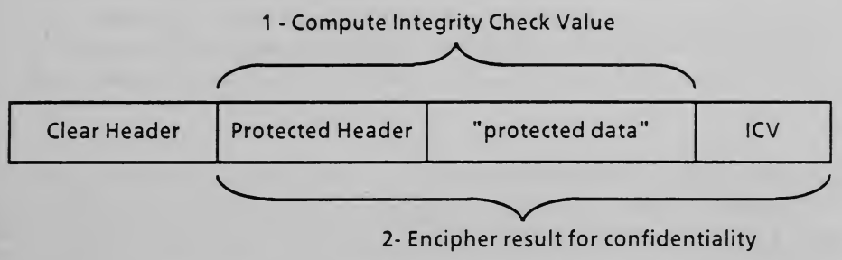
8.2.1 Clear Header
8.2.1 クリアヘッダー
| LI | SE | KEY-ID |
|---|---|---|
| 1 | 1 | var |
| LI | SE | KEY-ID |
|---|---|---|
| 1 | 1 | var |
8.2.1.1 LI
8.2.1.1 LI
The length indicator field (LI) contains the length of the Clear Header in octets, excluding the length indicator field.
長さ指示子フィールド（LI）には、長さ指示子フィールドを除いた、クリアヘッダーの長さがオクテット単位で入ります。
8.2.1.2 SE
8.2.1.2 SE
This field contains the TPDU code. It is used to define the structure of the remaining header. The value of the SE TPDU code is: 0100 1000.
このフィールドには、TPDU コードが入ります。これは、残りのヘッダーの構造を定義するために使います。SE TPDU コードの値は 0100 1000 です。
8.2.1.3 KEY-ID
8.2.1.3 KEY-ID
The key identifier field (KEY-ID) identifies the cryptographic key used to protect the TPDU.
鍵識別子フィールド（KEY-ID）は、TPDU の保護に使う暗号鍵を識別します。
8.2.2 Protected Header
8.2.2 保護ヘッダー
| LI | FLAGS | LABEL | FSN | PAD |
|---|---|---|---|---|
| 1 | 1 | var | 12 | var |
| LI | FLAGS | LABEL | FSN | PAD |
|---|---|---|---|---|
| 1 | 1 | var | 12 | var |
The LABEL, FSN, and PAD fields are optional. When present, they must appear in the order shown above.
LABEL、FSN、PAD のフィールドはオプションです。存在する場合は、上に示した順に現れなければなりません。
8.2.2.1 LI
8.2.2.1 LI
The LI contains the length of the Protected Header in octets, excluding the LI field. It has a maximum value of 254 (1111 1110).
LI には、LI フィールドを除いた、保護ヘッダーの長さがオクテット単位で入ります。最大値は 254（1111 1110）です。
8.2.2.2 FLAGS
8.2.2.2 FLAGS
| Value |
|---|
| 1 |
| 値 |
|---|
| 1 |
The currently defined bits in this field are:
このフィールドで現在定義されているビットは、次のとおりです。
•bit 1 direction indicator
0 = responder to initiator
1 = initiator to reponder
•ビット1 方向指示子
0 = レスポンダーからイニシエーター
1 = イニシエーターからレスポンダー
8.2.2.3 LABEL
8.2.2.3 LABEL
| C0 Hex | Length | Defining Authority | Value |
|---|---|---|---|
| 1 | 1 | 1 | var |
| C0 16進数 | 長さ | 定義機関 | 値 |
|---|---|---|---|
| 1 | 1 | 1 | var |
The format of the Value is defined by the Defining Authority.
Value の書式は、Defining Authority によって定義されます。
8.2.2.4 FSN
8.2.2.4 FSN
| C6 Hex | Length | Last DT Sent | Last DT Received | Last ED Sent | Last ED Received |
|---|---|---|---|---|---|
| 1 | 1 | 4 | 4 | 4 | 4 |
| C6 16進数 | 長さ | 最後に送信されたDT | 最後に受信されたDT | 最後に送信されたED | 最後に受信されたED |
|---|---|---|---|---|---|
| 1 | 1 | 4 | 4 | 4 | 4 |
Last DT Sent is the last sequence number sent in a DT-TPDU. Last DT Received is the last sequence number received in a DT-TPDU. Last ED Sent is the last sequence number sent in a ED-TPDU. Last ED Received is the last sequence number received in a ED-TPDU.
Last DT Sent は、DT-TPDU で最後に送信されたシーケンス番号です。Last DT Received は、DT-TPDU で最後に受信されたシーケンス番号です。Last ED Sent は、ED-TPDU で最後に送信されたシーケンス番号です。Last ED Received は、ED-TPDU で最後に受信されたシーケンス番号です。
8.2.2.5 PAD
8.2.2.5 PAD
| C1 Hex | Length | Value |
|---|---|---|
| 1 | 1 | var |
| C1 16進数 | 長さ | 値 |
|---|---|---|
| 1 | 1 | var |
The Value field contains arbitrary data.
Value フィールドには、任意のデータが入ります。
8.2.3 Protected Data
8.2.3 保護されるデータ
The data field contains a TPDU or concatenated set of TPDUs as per ISO 8073 or ISO 8602.
データフィールドには、ISO 8073 または ISO 8602 に従った TPDU または連結された TPDU の集合が入ります。
8.2.4 ICV
8.2.4 ICV
The ICV field contains the Integrity Check Value.
ICV フィールドには、完全性チェック値が入ります。
SPECIFICATION SDN.701
Revision 1.5 1989-08-01
仕様 SDN.701
改訂 1.5 1989-08-01
SDNS
Secure Data Network System
Message Security Protocol
SDNS
Secure Data Network System
Message Security Protocol
Forward:
前書き:
The SDNS architecture, and its associated specifications, were developed as a cooperative project between government and industry. The project was sponsored by the National Security Agency, and supported by the National Institute of Standards and Technology (formerly the National Bureau of Standards) and the Defense Communications Agency. Twelve leading U.S. companies in computers and telecommunications made significant contributions of their technical talents and development resources. The combined efforts of these organizations produced the basis for improved security technology, interoperable security standards, and cost-effective security for computers and telecommunications.
SDNS アーキテクチャとその関連仕様は、政府と産業界の協力プロジェクトとして開発されました。このプロジェクトは国家安全保障局が後援し、国立標準技術研究所（旧米国標準局）と国防通信局（Defense Communications Agency）が支援しました。コンピューターおよび電気通信分野の米国の主要企業12社が、技術的才能と開発資源の面で大きく貢献しました。これらの組織の共同の取り組みにより、改善されたセキュリティ技術、相互運用可能なセキュリティ標準、およびコンピューターと電気通信の費用対効果の高いセキュリティの基礎が生まれました。
Introductory note:
序文:
This document provides a framework for the SDNS Message Security Protocol. This document is being circulated for comment and approval. It is subject to change during the development phase of SDNS.
この文書は、SDNS Message Security Protocol の枠組みを提供します。この文書は、意見と承認を得るために回覧されています。SDNS の開発段階の間に変更される場合があります。
Table of Contents
目次
5. Overview of the Message Security Protocol
5. Message Security Protocol の概要
6. Message Security Services Elements
6. メッセージセキュリティサービスの要素
0. Introduction
0. 序論
The requirement for secure Electronic Mail and secure messaging has resulted in the Secure Data Network System (SDNS) architecture developed in support of a secure version of the X.400 Message Handling System. This document describes the additions to the CCITT X.400 Recommendations (either 1984 or 1988) that permit any type of message (including interpersonal messages) to be sent and received securely. ANSI has defined X.400 Message Transfer System conventions for Electronic Data Interchange (EDI). Using the ANSI conventions and the SDNS security additions, EDI messages can be exchanged securely. This protocol is known as the Message Security Protocol (MSP).
安全な電子メールと安全なメッセージングの要件から、X.400 メッセージ処理システムの安全版を支援するために開発された、セキュアデータネットワークシステム（SDNS）アーキテクチャが生まれました。この文書は、あらゆる種類のメッセージ（個人間メッセージを含む）を安全に送受信できるようにする、CCITT X.400 勧告（1984年版または1988年版）への追加事項を記述します。ANSI は、電子データ交換（EDI）のための X.400 メッセージ転送システムの規約を定義しています。ANSI の規約と SDNS のセキュリティ追加事項を使うことで、EDI メッセージを安全に交換できます。このプロトコルは、Message Security Protocol（MSP）として知られています。
1. Scope and Field of Application
1. 適用範囲と適用分野
This document specifies the Message Security services and protocol that will be implemented in SDNS MHS components. The User Agent provides these services by encapsulating the message content and adding a Message Security Protocol heading before submission to the Message Transfer System. SDNS MSP is transparent to the X.400 MTS.
この文書は、SDNS の MHS コンポーネントに実装されるメッセージセキュリティのサービスとプロトコルを規定します。ユーザーエージェントは、メッセージ転送システムへの送信の前に、メッセージ内容をカプセル化し、Message Security Protocol のヘッディングを追加することで、これらのサービスを提供します。SDNS MSP は、X.400 MTS に対して透過的です。
The Message Security Protocol provides writer to reader confidentiality, integrity, data origin authentication, non-repudiation with proof of origin, access control for message transfer, and request for a signed receipt of the received message.
Message Security Protocol は、書き手から読み手への機密性、完全性、データ起源認証、発信元証明付きの否認防止、メッセージ転送のアクセス制御、および受信したメッセージへの署名付き受領証の要求を提供します。
2. References
2. 参照
X.200|ISO 7498 — Information Processing Systems - Open Systems Interconnection - Basic Reference Model.
X.200|ISO 7498 — Information Processing Systems - Open Systems Interconnection - Basic Reference Model.
DIS 7498/2 — Information Processing Systems - Open Systems Interconnection - Security Architecture.
DIS 7498/2 — Information Processing Systems - Open Systems Interconnection - Security Architecture.
X.208|ISO 8824 — Information Processing Systems - Open Systems Interconnection - Specification of Abstract Syntax Notation One (ASN.1).
X.208|ISO 8824 — Information Processing Systems - Open Systems Interconnection - Specification of Abstract Syntax Notation One (ASN.1).
X.209|ISO 8825 — Information Processing Systems - Open Systems Interconnection - Specification of Basic Encoding Rules for Abstract Syntax Notation One (ASN.1).
X.209|ISO 8825 — Information Processing Systems - Open Systems Interconnection - Specification of Basic Encoding Rules for Abstract Syntax Notation One (ASN.1).
X.400|ISO 8505-1 — Information Processing Systems - Text Communications - Message Handling: Service and System Overview.
X.400|ISO 8505-1 — Information Processing Systems - Text Communications - Message Handling: Service and System Overview.
X.411|ISO 8883-1 — Information Processing Systems - Text communications - Message Handling: Message Transfer System [part 1] Abstract Service Definition and Procedures.
X.411|ISO 8883-1 — Information Processing Systems - Text communications - Message Handling: Message Transfer System [part 1] Abstract Service Definition and Procedures.
X.419|ISO 8505-2 — Information Processing Systems - Text Communications - Message Handling: Protocol Specification.
X.419|ISO 8505-2 — Information Processing Systems - Text Communications - Message Handling: Protocol Specification.
X.420|ISO 9065 — Information Processing Systems - Text Communications - Message Handling: Interpersonal Messaging System.
X.420|ISO 9065 — Information Processing Systems - Text Communications - Message Handling: Interpersonal Messaging System.
X.501/DIS 9594 — Information Processing Systems - Open Systems Interconnect - The Directory - Models.
X.501/DIS 9594 — Information Processing Systems - Open Systems Interconnect - The Directory - Models.
SDN.702 — SDNS Directory Specifications for Utilization with the SDNS Message Security Protocol.
SDN.702 — SDNS Directory Specifications for Utilization with the SDNS Message Security Protocol.
SDN.801 — SDNS Access Control Concept Document.
SDN.801 — SDNS Access Control Concept Document.
SDN.802 — SDNS Access Control Specification
SDN.802 — SDNS Access Control Specification
3. Definitions
3. 定義
3.1 Open System Interconnection
3.1 開放型システム間相互接続
This document uses the following terms contained in the Basic Reference Model for Open Systems Interconnection (IS 7498), including the Security Architecture (IS 7498/2):
この文書は、セキュリティアーキテクチャ（IS 7498/2）を含む、開放型システム間相互接続の基本参照モデル（IS 7498）に含まれる次の用語を使います。
•Access control
•アクセス制御
•Connectionless confidentiality
•コネクションレス機密性
•Connectionless integrity
•コネクションレス完全性
•Data origin authentication
•データ起源認証
•Non-repudiation with proof of delivery
•配送証明付きの否認防止
•Non-repudiation with proof of origin
•発信元証明付きの否認防止
3.2 Message Handling System
3.2 メッセージ処理システム
This document uses the following terms contained X.400|ISO 8505-1 Information Processing Systems - Text Communications - Message Handling: Service and System Overview:
この文書では、X.400|ISO 8505-1 Information Processing Systems - Text Communications - Message Handling: Service and System Overview に含まれる次の用語を使います。
•Content type
•内容種別（Content type）
•Distribution List (DL)
•配布リスト（Distribution List, DL）
•Interpersonal Messages (IPM)
•個人間メッセージ（Interpersonal Messages, IPM）
•Message Transfer Agent (MTA)
•メッセージ転送エージェント（Message Transfer Agent, MTA）
•Message Transfer System (MTS)
•メッセージ転送システム（Message Transfer System, MTS）
•O/R Name
•O/R Name
•P2
•P2
•P3
•P3
•SUBMIT
•SUBMIT
•User Agent (UA)
•ユーザーエージェント（User Agent, UA）
3.3 The Directory
3.3 ディレクトリ
This document uses the following term contained in X.501/DIS 9594 Information Processing Systems - Open Systems Interconnect - The Directory - Models:
この文書は、X.501/DIS 9594 Information Processing Systems - Open Systems Interconnect - The Directory - Models に含まれる次の用語を使います。
•Directory Information Base (DIB)
•ディレクトリ情報ベース（Directory Information Base, DIB）
3.4 Secure Data Network System
3.4 セキュアデータネットワークシステム
This document uses the following terms from the SDNS Access Control System Specification:
この文書は、SDNS Access Control System Specification の次の用語を使います。
•Key Material IDentifier (KMID)
•鍵素材識別子（Key Material IDentifier, KMID）
•Key Management System (KMS)
•鍵管理システム（Key Management System, KMS）
3.4 Message Security
3.4 メッセージセキュリティ
For the purposes of this document the following definitions apply:
この文書では、次の定義を適用します。
Directory service (DS): A directory server containing information (e.g., certificates, auxiliary vectors, and user keying material) corresponding to recipient UAs.
ディレクトリサービス（DS）: 受信側 UA に対応する情報（たとえば、証明書、補助ベクトル、ユーザー鍵素材）を含むディレクトリサーバー。
Message Security Protocol (MSP): The SDNS protocol for X.400 message security. MSP is a content protocol, and is implemented within the originator and recipient UAs. MSP processing occurs prior to submitting a message to the MTS and after accepting delivery of a message from the MTS. MSP provides security for a content protocol (e.g. IPM, EDI), but is independent of the content protocol.
Message Security Protocol（MSP）: X.400 メッセージセキュリティのための SDNS プロトコル。MSP は内容プロトコルであり、発信側 UA と受信側 UA の中に実装されます。MSP の処理は、メッセージを MTS に送信する前と、MTS からメッセージの配送を受け付けた後に行われます。MSP は、内容プロトコル（たとえば IPM、EDI）にセキュリティを提供しますが、その内容プロトコルからは独立しています。
Originator UA: The user agent process which originates a message.
発信側 UA: メッセージを発信するユーザーエージェントのプロセス。
Recipient UA: The user agent process which receives a message.
受信側 UA: メッセージを受信するユーザーエージェントのプロセス。
4. Symbols and Abbreviations
4. 記号と略語
| DIB | Directory Information Base |
| DS | Directory Service |
| DL | Distribution List |
| IPM | Interpersonal Messages |
| KMID | Key Material Identifier |
| KMS | Key Management System |
| MSP | Message Security Protocol |
| MS | Message Store |
| MTA | Message Transfer Agent |
| MTAE | Message Transfer Agent Entity |
| MTS | Message Transfer System |
| UA | User Agent |
| UKM | User Keying Material |
| DIB | Directory Information Base |
| DS | Directory Service |
| DL | Distribution List |
| IPM | Interpersonal Messages |
| KMID | Key Material Identifier |
| KMS | Key Management System |
| MSP | Message Security Protocol |
| MS | Message Store |
| MTA | Message Transfer Agent |
| MTAE | Message Transfer Agent Entity |
| MTS | Message Transfer System |
| UA | User Agent |
| UKM | User Keying Material |
5. Overview of the Protocol
5. プロトコルの概要
The Message Security Protocol (MSP) operates on messages of any type, including, but not restricted to, Interpersonal Messages (IPMs) as defined in X.420. Thus, the term "message" is used throughout this document to refer to any content type defined for transfer by the Message Handling System, reflecting the wide applicability of this protocol. The set of security services provided by this protocol are grouped as indicated below:
Message Security Protocol（MSP）は、X.420 で定義された個人間メッセージ（IPM）を含むがそれに限らない、あらゆる種類のメッセージに対して動作します。したがって、このプロトコルが広く適用できることを反映して、この文書全体で「メッセージ」という用語は、メッセージ処理システムによる転送のために定義された任意の内容種別を指して使います。このプロトコルが提供するセキュリティサービスの集合は、以下のようにグループ化されます。
•message confidentiality, integrity, data origin authentication and access control
•メッセージの機密性、完全性、データ起源認証、およびアクセス制御
•message non-repudiation with proof of origin
•発信元証明付きのメッセージの否認防止
•request for a signed receipt of the received message (only available if non-repudiation with proof of origin is selected)
•受信したメッセージへの署名付き受領証の要求（発信元証明付きの否認防止を選択した場合にのみ利用可能）
The protocol operates by encapsulating a message content in a security heading; these together form a new content type designated ProtectedContent. This new content carries the original message content (encrypted if message confidentiality is requested), plus various security parameters required by recipients to decrypt and/or validate the message upon receipt. Also included are parameters which specify the algorithms employed to perform encryption, integrity checking, and signature generation/validation, as appropriate for each service. Optionally, selected fields from the original message can be included in the security heading for perusal by the recipient prior to decryption. This facility is initially defined only for the P2 content type, but other content types can be added as needed. (Invocation of this facility may be restricted based on a particular security doctrine.) The resulting encapsulated content is submitted to the Message Transfer System (MTS) for further processing.
このプロトコルは、メッセージ内容をセキュリティヘッディングでカプセル化することで動作します。これらが合わさって、ProtectedContent と呼ばれる新しい内容種別を形成します。この新しい内容は、元のメッセージ内容（メッセージの機密性が要求されている場合は暗号化されたもの）と、受信側が受信時にメッセージを復号するか、検証するか、またはその両方を行うために必要となるさまざまなセキュリティパラメーターを運びます。また、各サービスに適した、暗号化、完全性チェック、署名の生成・検証を行うために使うアルゴリズムを指定するパラメーターも含まれます。任意で、元のメッセージから選択したフィールドを、受信側が復号の前に確認できるよう、セキュリティヘッディングに含めることができます。この機能は、当初は P2 内容種別についてのみ定義されていますが、必要に応じて他の内容種別を追加できます。（この機能の呼び出しは、特定のセキュリティ原則に基づいて制限される場合があります。）結果として得られたカプセル化された内容は、さらなる処理のためにメッセージ転送システム（MTS）に送信されます。
5.1 Access Control
5.1 アクセス制御
The access control function is integrated within the SDNS MSP implementation. MSP operates in conjunction with the user agent (UA) process responsible for originating and receiving messages. It is technically feasible to reflect information resulting from the access control decision process to the user associated with the UA, whether the user is a human or another process. Access control implementation details are a local matter. It should be noted that access control applies only to messages for which confidentiality, integrity, and data origin authentication services are selected.
アクセス制御機能は、SDNS MSP の実装に組み込まれています。MSP は、メッセージの発信と受信を担当するユーザーエージェント（UA）のプロセスと連携して動作します。アクセス制御の決定プロセスから得られた情報を、UA に関連付けられたユーザー（人間か別のプロセスかを問いません）に反映することは、技術的に可能です。アクセス制御の実装の詳細は、ローカルマターです。アクセス制御は、機密性、完全性、データ起源認証のサービスが選択されたメッセージにのみ適用されることに留意すべきです。
5.2 Multiple Recipients
5.2 複数の受信者
The MHS is a store-and-forward message system where messages can be addressed to multiple recipients. MSP accommodates these characteristics in the distribution of keys for use by cipher functions, in the use of several distinct encryption and integrity algorithms, and in the structure of the MSP heading.
MHS は蓄積交換型のメッセージシステムであり、メッセージを複数の受信者に宛てることができます。MSP は、これらの特性に、暗号機能が使う鍵の配布、複数の異なる暗号化・完全性アルゴリズムの使用、および MSP ヘッディングの構造において対応します。
The originator of a message assigns the key to be used to protect the message content. The originator obtains, (e.g., from a directory server), the certificate and the UKM for each intended recipient. In preparing a message for submission, the originator collects a key for each recipient. The originator takes the message key, sensitivity label, a one-way hash on the message content and other security control information and encrypts it under this pairwise key to form a protected token. The originator then places the protected token for each recipient in the MSP heading. During this process, the originator performs access control checks to ensure that each recipient is authorized to receive the message. Each token is tagged by the originator for identification by the proper recipient. The originator's certificate and UKM are placed in the MSP heading to provide each recipient with the necessary data to process the message.
メッセージの発信者は、メッセージ内容の保護に使う鍵を割り当てます。発信者は、意図した各受信者の証明書と UKM を（たとえばディレクトリサーバーから）取得します。メッセージを送信する準備として、発信者は各受信者の鍵を収集します。発信者は、メッセージ鍵、機微度ラベル、メッセージ内容の一方向ハッシュ、およびその他のセキュリティ制御情報を取り、このペアワイズ鍵の下で暗号化して、保護トークンを作成します。その後、発信者は各受信者の保護トークンを MSP ヘッディングに置きます。この過程で、発信者は、各受信者がメッセージを受け取る権限を持つことを確実にするため、アクセス制御チェックを行います。各トークンには、適切な受信者が識別できるよう、発信者がタグを付けます。発信者の証明書と UKM は、各受信者にメッセージを処理するために必要なデータを提供するため、MSP ヘッディングに置かれます。
Upon receipt of the message, each recipient selects its token from the security heading using the tag as a search key. Each recipient then collects his pairwise key and decrypts his token to provide access to the message key, one way hash, and other security control information as described above. The security label is checked to enforce access control policy, the message key is used to decrypt the message, and the one way hash is used to verify the integrity of the message.
メッセージを受信すると、各受信者は、タグを検索キーとして使い、セキュリティヘッディングから自分のトークンを選択します。その後、各受信者は自分のペアワイズ鍵を収集し、自分のトークンを復号して、メッセージ鍵、一方向ハッシュ、および上述のその他のセキュリティ制御情報にアクセスします。セキュリティラベルは、アクセス制御ポリシーを実施するためにチェックされ、メッセージ鍵はメッセージの復号に使われ、一方向ハッシュはメッセージの完全性の検証に使われます。
Figure 1 depicts the structure of a secure message containing an envelope, a security heading, and a message content.
図1は、エンベロープ、セキュリティヘッディング、メッセージ内容を含む安全なメッセージの構造を示しています。
![Nested box diagram of a secure message. An outer box contains, from top to bottom: a box "Envelope"; a box "Security Heading"; and a dot-shaded box "Encrypted Content" that contains four smaller boxes in a row, with three small circles between the third and fourth boxes indicating more boxes. On the right, a brace beside "Envelope" is labeled "P1 / P3 / P7", and a brace spanning "Security Heading" and "Encrypted Content" is labeled "MSP". On the left, a brace beside "Encrypted Content" is labeled "Pc (e.g. P2)".](assets/ir-4250/p0083-drawing-01.png)
Figure 1. Secure Message Structure
図1. 安全なメッセージの構造
5.3 Message Processing for Signatures and Signed Receipts
5.3 署名と署名付き受領証のためのメッセージ処理
If the originator selects the non-repudiation with proof of origin service, a SignatureBlock is included in the MSP heading. This data item includes an identifier for the signature algorithm, the originator's signatureCertificate, controlInformation, and a signatureValue. To sign a message, the originator calculates a one-way hash on the (original) message content, as above, then continues the calculation to include the SignatureInformation. This field includes an encapsulatedContentType and a contentIdentifier. The resulting hash value is signed and included as the signatureValue in the SignatureBlock.
発信者が発信元証明付きの否認防止サービスを選択した場合、SignatureBlock が MSP ヘッディングに含まれます。このデータ項目には、署名アルゴリズムの識別子、発信者の signatureCertificate、controlInformation、および signatureValue が含まれます。メッセージに署名するために、発信者は、前述のとおり（元の）メッセージ内容に対する一方向ハッシュを計算し、その後 SignatureInformation を含めるように計算を続けます。このフィールドには、encapsulatedContentType と contentIdentifier が含まれます。結果のハッシュ値に署名され、SignatureBlock に signatureValue として含められます。
If the originator elects to request signed receipts from any or all of the recipients, this is indicated in the receiptsIndicator field of the SignatureInformation. If all recipients are requested to return such receipts, a flag is set; if a subset of the recipients are requested to return receipts, a list of their O/RNames is included in the field. An originator might maintain a database, (e.g., indexed by contentIdentifier), indicating the recipients from whom signed receipts for a specified message (and a copy of the message plus the hash value) are expected. This data will be required in support of later receipt processing. The database is a local matter and thus outside the scope of this protocol specification.
発信者が、一部またはすべての受信者に署名付き受領証を要求することを選択した場合、これは SignatureInformation の receiptsIndicator フィールドに示されます。すべての受信者にそのような受領証の返送が要求される場合は、フラグが設定されます。受信者の一部に受領証の返送が要求される場合は、それらの O/RName の一覧がこのフィールドに含まれます。発信者は、特定のメッセージについて、どの受信者から署名付き受領証（およびメッセージの写しとハッシュ値）が期待されるかを示すデータベースを（たとえば contentIdentifier で索引付けして）維持する場合があります。このデータは、後の受領証の処理を支援するために必要となります。このデータベースはローカルマターであり、したがってこのプロトコル仕様の範囲外です。
A recipient validates a message signature in a two-step process. First, the one-way hash on the received message content and the SignatureInformation is calculated. Then he performs calculations to verify the supplied signatureValue using the information contained in the signatureCertificate.
受信者は、2段階の過程でメッセージ署名を検証します。まず、受信したメッセージ内容と SignatureInformation に対する一方向ハッシュを計算します。次に、signatureCertificate に含まれる情報を使って、提供された signatureValue を検証するための計算を行います。
If the recipient has been requested to return a signed receipt, as noted above, he may generate a receipt or not. To return a receipt, the recipient constructs a new SignatureBlock. This block will contain the recipient's signatureCertificate. The receiptInformation field of the ControlInformation identifies the block as a signed receipt (versus a signed message). The original hash value is extended to include the ControlInformation for the receipt and is signed by the recipient. A message consisting solely of an MSP heading containing a version number and SignatureBlock is transmitted to the originator of the signed message.
前述のとおり、受信者が署名付き受領証の返送を要求されている場合、受信者は受領証を生成してもよいですし、しなくてもよいです。受領証を返送するには、受信者は新しい SignatureBlock を構築します。このブロックには、受信者の signatureCertificate が含まれます。ControlInformation の receiptInformation フィールドは、そのブロックが（署名付きメッセージではなく）署名付き受領証であることを識別します。元のハッシュ値は、受領証の ControlInformation を含むように拡張され、受信者によって署名されます。バージョン番号と SignatureBlock を含む MSP ヘッディングのみから成るメッセージが、署名付きメッセージの発信者に送信されます。
The originator of a message requesting signed receipts will process the receipt message using the stored message hash from the original message. This value is extended to include the ControlInformation of the receipt. The computed value is compared to the verified signature value of the receipt message. If the values match, the returned SignatureBlock serves as a signed receipt for the original message.
署名付き受領証を要求したメッセージの発信者は、元のメッセージから保存しておいたメッセージハッシュを使って、受領証メッセージを処理します。この値は、受領証の ControlInformation を含むように拡張されます。計算された値は、受領証メッセージの検証済みの署名値と比較されます。値が一致すれば、返送された SignatureBlock は、元のメッセージの署名付き受領証として機能します。
6. Security Service Elements
6. セキュリティサービスの要素
6.1 User Agent Security Services
6.1 ユーザーエージェントのセキュリティサービス
Connectionless confidentiality protects data from unauthorized disclosure. This service is provided by an encryption mechanism that is applied to the message content.
コネクションレス機密性は、データを無許可の開示から保護します。このサービスは、メッセージ内容に適用される暗号化メカニズムによって提供されます。
Connectionless integrity protects data from modification. This service is provided by a one-way hash applied to the plaintext message content.
コネクションレス完全性は、データを改変から保護します。このサービスは、平文のメッセージ内容に適用される一方向ハッシュによって提供されます。
Data origin authentication provides corroboration to the application process that the source of the message is the claimed originator. The key used to encrypt the message content is separately encrypted for each recipient using a token key. Successful decryption of the message key and successful verification of the one-way hash provides data origin authentication.
データ起源認証は、メッセージの送信元が主張された発信者であることを、アプリケーションプロセスに対して裏付けます。メッセージ内容の暗号化に使う鍵は、トークン鍵を使って受信者ごとに別々に暗号化されます。メッセージ鍵の復号の成功と一方向ハッシュの検証の成功によって、データ起源認証が提供されます。
Access control for message transfer is a service to both originator and recipient. The originator is prohibited from submitting, and the recipient is prohibited from receiving messages that violate the security policy.
メッセージ転送のアクセス制御は、発信者と受信者の両方に対するサービスです。発信者は、セキュリティポリシーに違反するメッセージを送信することを禁止され、受信者は、そのようなメッセージを受信することを禁止されます。
Non-repudiation with proof of origin is a service to originator and recipient. The originator is assured that the signed message did not admit tampering. The recipient of a signed message is assured that the message sent cannot be denied. A digital signature placed in the security heading of the message binds the identity of the originator to the message content. The recipient of the message can subsequently prove to a third party that only the originator could have produced the signature.
発信元証明付きの否認防止は、発信者と受信者に対するサービスです。発信者は、署名されたメッセージが改ざんされていないことを保証されます。署名されたメッセージの受信者は、送信されたメッセージが否認されないことを保証されます。メッセージのセキュリティヘッディングに置かれたデジタル署名は、発信者の識別情報をメッセージ内容に結び付けます。メッセージの受信者は、その後、発信者だけがその署名を作成できたことを第三者に証明できます。
Request For Signed Receipt of the received message asks the recipient to digitally sign a hash of the message and return the signature. If the recipient performs this action and the verified receipt hash value supplied by the recipient matches that computed by the originator using the signature verification process, then the originator is provided a form of non-repudiation with proof-of-delivery service.
受信したメッセージへの署名付き受領証の要求は、受信者に、メッセージのハッシュにデジタル署名して、その署名を返送するよう求めます。受信者がこの動作を行い、受信者が提供した検証済みの受領証ハッシュ値が、署名検証プロセスを使って発信者が計算した値と一致する場合、発信者には、配送証明付きの否認防止サービスの一形態が提供されます。
The Request For Signed Receipt may be used only in conjunction with the non-repudiation with proof-of-origin service. The originator of a message selects which recipients are to return a signed receipt. This list is contained within the signature block in the MSP security heading. The originator's MSP process must include the list of recipients requested to return a signed receipt in the calculation of the hash used to produce the digital signature for the non-repudiation with proof of origin service.
署名付き受領証の要求は、発信元証明付きの否認防止サービスと組み合わせる場合にのみ使用できます。メッセージの発信者は、どの受信者に署名付き受領証を返送させるかを選択します。この一覧は、MSP セキュリティヘッディングの署名ブロックに含まれます。発信者の MSP プロセスは、発信元証明付きの否認防止サービスのためのデジタル署名の作成に使うハッシュの計算に、署名付き受領証の返送を要求された受信者の一覧を含めなければなりません。
6.2 Required Services from the Message Transfer Service
6.2 メッセージ転送サービスに必要なサービス
The basic Message Transfer Service (MTS) enables a user agent (UA) to submit and receive messages. If a message cannot be delivered, the originating UA is informed.
基本的なメッセージ転送サービス（MTS）により、ユーザーエージェント（UA）はメッセージを送信および受信できます。メッセージを配送できない場合は、発信側の UA に通知されます。
The following Message Transfer Service (MTS) user facilities must be selected when MSP is invoked:
MSP を呼び出すときは、次のメッセージ転送サービス（MTS）のユーザー機能を選択しなければなりません。
•Content return requested.
•内容の返却を要求します。
•Conversion prohibited.
•変換を禁止します。
•Physical delivery prohibited.
•物理的配送を禁止します。
•Recipient redirection prohibited.
•受信者のリダイレクトを禁止します。
•DL expansion prohibited.
•DL の展開を禁止します。
A site or community specific security doctrine may further restrict possible use of the following optional user facilities:
サイトまたはコミュニティ固有のセキュリティ原則により、次のオプションのユーザー機能の使用が、さらに制限される場合があります。
•Content identifier.
•内容識別子。
•Priority.
•優先度。
•Disclose recipients.
•受信者の開示。
•Deferred delivery time.
•配送の延期時刻。
•Latest delivery time.
•最終配送時刻。
•Originator report request.
•発信者への報告の要求。
6.3 Required Services from the Directory User Agent
6.3 ディレクトリユーザーエージェントに必要なサービス
In order to support key distribution for SDNS message security, the Directory Information Base (DIB) must store for each MSP user: certificate, a signature certificate, a set of UKMs with associated tags, and any auxiliary vectors associated with the user. The certificate, signature certificate, and any auxiliary vector(s) contain the O/R name of the user and additional identifying information. The UKMs are submitted by the user and employed in the keying process. The tags identify each UKM and a user-generated signature binds each UKM to its tag. The originator of a message accesses the directory service to obtain address information, the certificate, auxiliary vector, and tagged UKM for each recipient. {Details of these and other key management support functions provided by the directory service are contained in SDN.702 SDNS Directory Specifications for Utilization with the SDNS Message Security Protocol.}
SDNS メッセージセキュリティの鍵配布を支援するために、ディレクトリ情報ベース（DIB）は、MSP ユーザーごとに、証明書、署名証明書、関連するタグを持つ UKM の集合、およびそのユーザーに関連付けられた任意の補助ベクトルを保存しなければなりません。証明書、署名証明書、および任意の補助ベクトルには、ユーザーの O/R 名と追加の識別情報が含まれます。UKM はユーザーによって送信され、鍵処理で使われます。タグは各 UKM を識別し、ユーザーが生成した署名が各 UKM をそのタグに結び付けます。メッセージの発信者は、ディレクトリサービスにアクセスして、各受信者のアドレス情報、証明書、補助ベクトル、およびタグ付き UKM を取得します。{ディレクトリサービスが提供するこれらおよびその他の鍵管理支援機能の詳細は、SDN.702 SDNS Directory Specifications for Utilization with the SDNS Message Security Protocol に含まれています。}
7. Message Security Abstract Service Primitive
7. メッセージセキュリティ抽象サービスプリミティブ
Secure-message is the service primitive for use with SDNS X.400 message security. This primitive permits a UA to select one or more security services:
Secure-message は、SDNS X.400 メッセージセキュリティで使うサービスプリミティブです。このプリミティブにより、UA は1つ以上のセキュリティサービスを選択できます。
•a. Confidentiality, integrity, data origin authentication, and access control;
•a. 機密性、完全性、データ起源認証、およびアクセス制御。
•b. Non-repudiation with proof of origin;
•b. 発信元証明付きの否認防止。
•c. Request for signed receipt.
•c. 署名付き受領証の要求。
Service c, Request for signed receipt, may be selected only in combination with service b, non-repudiation with proof of origin.
サービス c の署名付き受領証の要求は、サービス b の発信元証明付きの否認防止と組み合わせた場合にのみ選択してもよいです。
Secure-message service is provided by the UA. The originator of a message requests the UA to process a message content. This request is based on the arguments supplied to invoke the submit operation. The recipient of a message containing a ProtectedContent type invokes the UA to process the message content.
Secure-message サービスは、UA が提供します。メッセージの発信者は、UA にメッセージ内容の処理を要求します。この要求は、submit 操作を呼び出すために提供された引数に基づきます。ProtectedContent 型を含むメッセージの受信者は、UA を呼び出してメッセージ内容を処理します。
7.1 Secure-message-request parameters
7.1 Secure-message-request のパラメーター
The Secure-message-request primitive requires all of the parameters required by the SUBMIT operation (as defined in CCITT X.411). In addition, the following arguments are required:
Secure-message-request プリミティブには、（CCITT X.411 で定義された）SUBMIT 操作に必要なすべてのパラメーターが必要です。加えて、次の引数が必要です。
ProtectionFlags
conf-integ-doa-ac
nonrepud
requestForSignedReceipt
ProtectionFlags
conf-integ-doa-ac
nonrepud
requestForSignedReceipt
If the conf-integ-doa-ac flag is set then the following arguments are required:
conf-integ-doa-ac フラグが設定されている場合は、次の引数が必要です。
originatorCertificate
originatorAuxVector
originatorUKM
confidentialityAlgorithm
integrityAlgorithm
tokenConfidentialityAlgorithm
tokenIntegrityAlgorithm
Sensitivity
originatorCertificate
originatorAuxVector
originatorUKM
confidentialityAlgorithm
integrityAlgorithm
tokenConfidentialityAlgorithm
tokenIntegrityAlgorithm
Sensitivity
If the nonrepud flag is set the following arguments are required:
nonrepud フラグが設定されている場合は、次の引数が必要です。
signatureCertificate
signatureAlgorithm
signatureCertificate
signatureAlgorithm
If the requestForSignedReceipt flag is set, the following arguments are required:
requestForSignedReceipt フラグが設定されている場合は、次の引数が必要です。
contentIdentifier
receiptsIndicator
contentIdentifier
receiptsIndicator
The ProtectionFlags are BOOLEANS that indicate which of the sets of security services the originator desires. Note that if the requestForSignedReceipt flag is set, then the nonrepud flag must be set.
ProtectionFlags は、発信者がどのセキュリティサービスの集合を望むかを示す BOOLEAN です。requestForSignedReceipt フラグが設定されている場合は、nonrepud フラグも設定しなければならないことに注意してください。
The originatorCertificate is the unique identification phrase of the originator. The originatorAuxVector is additional access control information required by the security policy in force. The originatorUKM is a portion of the originator's contribution to the token key used to cover the ProtectedToken. The signatureCertificate is used to verify the signature applied to this message.
originatorCertificate は、発信者を一意に識別する句です。originatorAuxVector は、有効なセキュリティポリシーが必要とする追加のアクセス制御情報です。originatorUKM は、ProtectedToken を保護するトークン鍵に対する発信者の寄与の一部です。signatureCertificate は、このメッセージに適用された署名の検証に使われます。
The confidentialityAlgorithm, integrityAlgorithm,tokenConfidentialityAlgorithm, tokenIntegrityAlgorithm and signatureAlgorithm identify the algorithms used by encryption functions and include any parameters necessary for the operation of the function.The Sensitivity indicates the security level of the message.
confidentialityAlgorithm、integrityAlgorithm、tokenConfidentialityAlgorithm、tokenIntegrityAlgorithm、signatureAlgorithm は、暗号機能が使うアルゴリズムを識別し、その機能の動作に必要なパラメーターを含みます。Sensitivity は、メッセージのセキュリティレベルを示します。
The Secure-message-request primitive causes the UA to form a ProtectedContent. This is then input as a Content to the Message Transfer SUBMIT operation.
Secure-message-request プリミティブにより、UA は ProtectedContent を形成します。これは、その後、Message Transfer の SUBMIT 操作に Content として入力されます。
If an MSP implementation permits the use of blind carbon copies (bcc) and conf-integ-doa-ac is selected, then the MSP process must generate separate copies of the ProtectedContent to input to the SUBMIT operation. One copy should contain the protected tokens for all recipients not on the bcc list and should include these recipients in the SUBMIT argument list. If the identity of each bcc recipient is to be concealed from each other recipient (including other bcc recipients), then a SUBMIT operation should be invoked for each bcc recipient and the protected content should contain a protected token for only the designated recipient. This restriction is not needed if the message is only signed.
MSP の実装がブラインドカーボンコピー（bcc）の使用を許可していて、conf-integ-doa-ac が選択されている場合、MSP プロセスは、SUBMIT 操作に入力するために、ProtectedContent の別個のコピーを生成しなければなりません。1つのコピーには、bcc リストにない全受信者の保護トークンを含めるべきです。また、これらの受信者を SUBMIT の引数リストに含めるべきです。各 bcc 受信者の識別情報を、他のすべての受信者（他の bcc 受信者を含む）から隠す場合は、bcc 受信者ごとに SUBMIT 操作を呼び出すべきです。また、保護された内容には、指定された受信者のみの保護トークンを含めるべきです。メッセージが署名だけされている場合は、この制限は必要ありません。
The requestForSignedReceipt flag indicates that the originator has requested one or more recipients to return a signed copy of the received message. The contentIdentifier is an octet string used to uniquely identify the message among all those submitted by the originator. The ReceiptsIndicator is either an integer with value 1, indicating that ALL recipients should be requested to return a signed receipt, a sequence of O/R names identifying the recipients who are to be explicitly requested to respond with a signed receipt, or an integer with value 0, indicating that no receipts are requested. As above, in order to provide maximum privacy in the context of blind carbon copies, multiple submissions will be required to prevent a ReceiptsIndicator sequence from disclosing identities of bcc recipients.
requestForSignedReceipt フラグは、発信者が1人以上の受信者に、受信したメッセージの署名付きの写しを返送するよう要求したことを示します。contentIdentifier は、発信者が送信したすべてのメッセージの中で、そのメッセージを一意に識別するために使うオクテット列です。ReceiptsIndicator は、すべて（ALL）の受信者に署名付き受領証の返送を要求することを示す値1の整数、署名付き受領証で応答するよう明示的に要求される受信者を識別する O/R 名の列、または受領証が要求されないことを示す値0の整数のいずれかです。上記と同様に、ブラインドカーボンコピーの文脈で最大限のプライバシーを提供するため、ReceiptsIndicator の列が bcc 受信者の識別情報を開示することを防ぐには、複数回の送信が必要になります。
7.2 Secure-message-indicate parameters
7.2 Secure-message-indicate のパラメーター
The Secure-message-indicate primitive provides all of the arguments provided by the DELIVER operation as defined in (CCITT X.411). In addition, the following arguments are provided:
Secure-message-indicate プリミティブは、（CCITT X.411 で定義された）DELIVER 操作が提供するすべての引数を提供します。加えて、次の引数が提供されます。
•a. SignatureBlock
•a. SignatureBlock
•b. msgIntegrityValidity
•b. msgIntegrityValidity
•c. sensitivity
•c. sensitivity
•d. tokenIntegrityValidity
•d. tokenIntegrityValidity
The SignatureBlock is present if the originator requested the message to be signed. The SignatureBlock contains the signatureAlgorithm, the signatureCertificate, the signatureControlInformation and the signatureValue. The signatureAlgorithm identifies the algorithm. The signatureCertificate is used in the signature verification process. The signatureValue is the result of the signature function calculated for this message. The controlInformation contains the signatureType, the encapsulatedContentType, the signatureContentIdentifier, and the receiptsIndicator.
SignatureBlock は、発信者がメッセージへの署名を要求した場合に存在します。SignatureBlock には、signatureAlgorithm、signatureCertificate、signatureControlInformation、signatureValue が含まれます。signatureAlgorithm は、アルゴリズムを識別します。signatureCertificate は、署名の検証プロセスで使われます。signatureValue は、このメッセージについて計算された署名関数の結果です。controlInformation には、signatureType、encapsulatedContentType、signatureContentIdentifier、receiptsIndicator が含まれます。
The signatureValidity, msgIntegrityValidity, and tokenIntegrityValidity arguments are BOOLEANS that indicate the success or failure of the signature, message integrity, and token integrity calculations respecitvely. The Sensitivity argument specifies the security labeling of this message.
signatureValidity、msgIntegrityValidity、tokenIntegrityValidity の引数は、署名、メッセージの完全性、トークンの完全性の計算の成功または失敗をそれぞれ示す BOOLEAN です。Sensitivity 引数は、このメッセージのセキュリティラベル付けを指定します。
8. Message Security Protocol
8. Message Security Protocol
The confidentiality, integrity, data origin authentication, access control, non-repudiation with proof of origin, and the request for signed receipt services are provided within the User Agent (UA) through the addition of a security heading. The content provided by the UA and the security heading constitute a new content type.
機密性、完全性、データ起源認証、アクセス制御、発信元証明付きの否認防止、および署名付き受領証要求サービスは、セキュリティ見出しを追加することでユーザーエージェント（UA）内で提供されます。UA が提供する内容とセキュリティ見出しは、新しい内容種別を構成します。
8.1 Message Security Heading
8.1 メッセージセキュリティヘッディング
The ProtectedContent is a sequence of the version, OriginatorSecurityData, SignatureBlock, recipient-security-data, bypassed-content-data, and encapsulatedContent. The bypassed-content-data is content dependent data that is unprotected and intended for the recipient to use prior to the invocation of security. processing. The encapsulatedContent is the original message content, after the UA applies the security services, (e.g. the encrypted content if confidentiality has been requested).
ProtectedContent は、version、OriginatorSecurityData、SignatureBlock、recipient-security-data、bypassed-content-data、encapsulatedContent の列です。bypassed-content-data は、保護されない内容依存のデータで、セキュリティ処理を呼び出す前に受信者が使うことを意図しています。encapsulatedContent は、UA がセキュリティサービスを適用した後の元のメッセージ内容です（たとえば、機密性が要求されている場合は暗号化された内容）。
OriginatorSecurityData comprises the originator's originatorCertificate, originatorUKM, originatorAuxVector, confidentialityAlgorithm, integrityAlgorithm, tokenConfidentialityAlgorithm, and tokenIntegrityAlgorithm. The originatorCertificate is the unique identification phrase of the originator. The originatorUKM is the originator key material. The originatorUKM and originatorCertificate are combined with the recipient's posted (to a directory service) UKM and certificate to form the key used to protect the ProtectedToken. The confidentialityAlgorithm, integrityAlgorithm, tokenConfidentialityAlgorithm, and tokenIntegrityAlgorithm identify the algorithms used by encryption functions and include any parameters necessary for the operation of the function.
OriginatorSecurityData は、発信者の originatorCertificate、originatorUKM、originatorAuxVector、confidentialityAlgorithm、integrityAlgorithm、tokenConfidentialityAlgorithm、tokenIntegrityAlgorithm から成ります。originatorCertificate は、発信者を一意に識別する句です。originatorUKM は、発信者の鍵素材です。originatorUKM と originatorCertificate は、受信者が（ディレクトリサービスに）掲示した UKM および証明書と組み合わされて、ProtectedToken の保護に使う鍵を形成します。confidentialityAlgorithm、integrityAlgorithm、tokenConfidentialityAlgorithm、tokenIntegrityAlgorithm は、暗号化機能が使うアルゴリズムを識別し、その機能の動作に必要なパラメーターを含みます。
The SignatureBlock contains the digital signature used for non-repudiation with proof of origin. The SignatureBlock consists of the user's signatureAlgorithm, signatureCertificate (as presented in the Directory), the signatureValue, and the signatureControlInformation.
SignatureBlock には、発信元証明付きの否認防止に使うデジタル署名が含まれます。SignatureBlock は、ユーザーの signatureAlgorithm、（ディレクトリに掲示された）signatureCertificate、signatureValue、signatureControlInformation から成ります。
The PerRecipientToken comprises the recipient's Tag and ProtectedToken.
PerRecipientToken は、受信者の Tag と ProtectedToken から成ります。
SignatureControlInformation comprises the signatureType, the encapsulatedContentType, the signedContentIdentifier, and the ReceiptsIndicator. The signatureType contains a zero (0) if the ProtectedContent is a signed message (signedMsg), a one (1) if the ProtectedContent is a signed message with signed receipts requested (sMsgReqRecp), and a two (2) if the ProtectedContent is a signed receipt (signedReceipt). The encapsulatedContentType is the ContentType of the original message being protected. The signedContentIdentifier identifies the message among all those submitted by the originator.
SignatureControlInformation は、signatureType、encapsulatedContentType、signedContentIdentifier、ReceiptsIndicator から成ります。signatureType は、ProtectedContent が署名付きメッセージ（signedMsg）の場合は0（ゼロ）、署名付き受領証が要求された署名付きメッセージ（sMsgReqRecp）の場合は1、署名付き受領証（signedReceipt）の場合は2を含みます。encapsulatedContentType は、保護される元のメッセージの ContentType です。signedContentIdentifier は、発信者が送信したすべてのメッセージの中で、そのメッセージを識別します。
The ReceiptsIndicator is either an integer or a sequence of O/RNames. If ReceiptsIndicator is an integer, then a value of zero (0) indicates no receipts are requested (AllOrNone), and a value of one (1) indicates all recipients must return a receipt (ReceiptList). If ReceiptsIndicator is a sequence of O/RNames then the originator requests a signed receipt from each recipient listed.
ReceiptsIndicator は、整数または O/RName の列のいずれかです。ReceiptsIndicator が整数の場合、値0（ゼロ）は受領証が要求されないこと（AllOrNone）を示し、値1は、すべての受信者が受領証を返送しなければならないこと（ReceiptList）を示します。ReceiptsIndicator が O/RName の列の場合、発信者は、列挙された各受信者に署名付き受領証を要求します。
The Tag is the identifier associated with the recipient's posted certificate and UKM, and includes the edition and effective period of the certificate and UKM. The Tag is not encrypted.
Tag は、受信者が掲示した証明書と UKM に関連付けられた識別子で、証明書と UKM の版と有効期間を含みます。Tag は暗号化されません。
The ProtectedToken comprises the msgKey, msgHash, Sensitivity, encapsulatedContentType, signatureBlockIndicator and token-integrity-check. The msgKey is the key used by the encryption function identified by the confidentialityAlgorithm to encrypt the message body. The msgHash is the result of the checkfunction applied to the entire Content. The checkfunction is identified by the integrityAlgorithm. The Sensitivity indicates the security level of the encrypted portions of the message. The encapsulatedContentType identifies the type of the original content before MSP processing. The signatureBlockIndicator is a flag indicating to the recipient that the originator has requested a signature block. The token-integrity-check is the result of an integrity function applied to the concatenation of the msgKey, msgHash, sensitivity, encapsulatedContentType, and signatureBlockIndicator. The integrity function is identified by the tokenIntegrityAlgorithm. The Protected Token is encrypted using the token key.
ProtectedToken は、msgKey、msgHash、Sensitivity、encapsulatedContentType、signatureBlockIndicator、token-integrity-check から成ります。msgKey は、confidentialityAlgorithm で識別される暗号化機能がメッセージ本体の暗号化に使う鍵です。msgHash は、Content 全体に適用された checkfunction の結果です。checkfunction は、integrityAlgorithm で識別されます。Sensitivity は、メッセージの暗号化された部分のセキュリティレベルを示します。encapsulatedContentType は、MSP 処理の前の元の内容の種別を識別します。signatureBlockIndicator は、発信者が署名ブロックを要求したことを受信者に示すフラグです。token-integrity-check は、msgKey、msgHash、sensitivity、encapsulatedContentType、signatureBlockIndicator を連結したものに適用された完全性機能の結果です。完全性機能は、tokenIntegrityAlgorithm で識別されます。Protected Token は、トークン鍵を使って暗号化されます。
8.2 Elements of the Procedure
8.2 手順の要素
8.2.1 Originating a Secure Message
8.2.1 安全なメッセージの発信
8.2.1.1 Secure-message-request primitive issued
8.2.1.1 Secure-message-request プリミティブの発行
The originator UA presents, for MSP processing, a message content that is accompanied (implicitly or explicitly) by submission envelope information. If the UA and MTA reside in the same system, an explicit submission envelope may not be employed but equivalent information will be present as the message is transferred between the UA and the MTA. From the submit envelope, MSP processing uses the following data items:
発信側 UA は、（暗黙的または明示的に）送信エンベロープ情報を伴うメッセージ内容を、MSP 処理のために提示します。UA と MTA が同じシステムにある場合、明示的な送信エンベロープは使われないかもしれませんが、メッセージが UA と MTA の間で転送される際に、同等の情報が存在します。MSP 処理は、送信エンベロープから次のデータ項目を使います。
•originator O/R name (if not implicitly provided)
•発信者の O/R 名（暗黙的に提供されていない場合）
•recipient O/R name list
•受信者の O/R 名のリスト
•sensitivity
•機密性
•ContentType designation for the message
•メッセージの ContentType 指定
•message Content
•メッセージの Content
Message security label information is determined in one of two ways: (implicitly) based on local processing context, or (explicitly) based on the Sensitivity parameter. The UA may require some or all of the offered security services to be invoked for every message, or may allow a subset from this list.
メッセージのセキュリティラベル情報は、次の2つの方法のいずれかで決まります。（暗黙的に）ローカルの処理コンテキストに基づく方法、または（明示的に）Sensitivity パラメーターに基づく方法です。UA は、提供されるセキュリティサービスの一部またはすべてをすべてのメッセージについて呼び出すよう要求してもよく、またはこの一覧から一部のサービスを呼び出すことを許可してもよいです。
8.2.1.2 Calculate Hash values
8.2.1.2 ハッシュ値の計算
If the conf-integ-doa-ac flag is set, a msgHash is calculated. If the msgHash algorithm requires a key, the msgKey is used.
conf-integ-doa-ac フラグが設定されている場合、msgHash が計算されます。msgHash のアルゴリズムが鍵を必要とする場合は、msgKey が使われます。
8.2.1.3 Sign message
8.2.1.3 メッセージへの署名
If the nonrepud flag is set and the requestForSignedReceipt is not set, the signatureType is set to signedMsg (0) indicating that a signature is present. If the nonrepud flag is set and the requestForSignedReceipt flag is also set, signatureType is set to sMsgReqRecp (1) indicating that a signed message with a request for signed receipt is present. When the requestForSignedReceipt flag is set, the receiptsIndicator and contentIdentifier are included in the SignatureInformation. In either case, a signature hash is calculated over the message content and the SignatureInformation. This signature hash is called the signatureValue. The signatureAlgorithm, the signatureCertificate, the signatureValue, and the SignatureInformation form the SignatureBlock, which is included in the MSP message.
nonrepud フラグが設定されていて requestForSignedReceipt が設定されていない場合、signatureType は、署名が存在することを示す signedMsg（0）に設定されます。nonrepud フラグが設定され、requestForSignedReceipt フラグも設定されている場合、signatureType は、署名付き受領証の要求を伴う署名付きメッセージが存在することを示す sMsgReqRecp（1）に設定されます。requestForSignedReceipt フラグが設定されている場合、receiptsIndicator と contentIdentifier が SignatureInformation に含まれます。いずれの場合も、署名ハッシュは、メッセージ内容と SignatureInformation に対して計算されます。この署名ハッシュは signatureValue と呼ばれます。signatureAlgorithm、signatureCertificate、signatureValue、SignatureInformation が SignatureBlock を形成し、これが MSP メッセージに含まれます。
If the requestForSignedReceipt is set, a local database entry is contructed which includes the contentIdentifier, signatureValue, receiptsIndicator, and the message content. This database is used for later processing of signed receipts.
requestForSignedReceipt が設定されている場合、contentIdentifier、signatureValue、receiptsIndicator、メッセージ内容を含むローカルのデータベースエントリが構築されます。このデータベースは、署名付き受領証の後続処理に使われます。
8.2.1.4 Encipher content
8.2.1.4 内容の暗号化
If the conf-integ-doa-ac flag is set, a message encryption key (msgKey) is generated and used to encipher the submitted message content.
conf-integ-doa-ac フラグが設定されている場合、メッセージ暗号化鍵（msgKey）が生成され、送信されたメッセージ内容の暗号化に使われます。
8.2.1.5 Calculate token-integrity-check
8.2.1.5 token-integrity-check の計算
If the conf-integ-doa-ac flag is set, the msgKey, the msgHash, the Sensitivity, the encapsulatedContentType, and the signatureBlockIndicator fields are concatenated and a token-integrity-check is calculated. The result is then appended to these fields all of which is referred to as the Token for this message.
conf-integ-doa-ac フラグが設定されている場合、msgKey、msgHash、Sensitivity、encapsulatedContentType、signatureBlockIndicator の各フィールドが連結され、token-integrity-check が計算されます。その結果は、これらのフィールドに付加され、全体がこのメッセージの Token と呼ばれます。
8.2.1.6 Produce ProtectedToken
8.2.1.6 ProtectedToken の作成
For each recipient in turn, the Token is encrypted using the token key. The recipient's key and the UKM associated with the encryption of the Token for a given recipient is the one which the recipient posted to the Directory System and which is designated by the Tag as being valid for the time at which the message processing began.
受信者ごとに順に、Token がトークン鍵を使って暗号化されます。特定の受信者のための Token の暗号化に関連付けられる、その受信者の鍵と UKM は、その受信者がディレクトリシステムに掲示したもので、メッセージ処理が始まった時刻に有効なものとして Tag が指定するものです。
8.2.1.7 Produce PerRecipientToken
8.2.1.7 PerRecipientToken の作成
Each resulting ProtectedToken from step 6 is paired with the corresponding Tag of the intended recipient (the Tag is associated with the recipient's posted certificate and UKM to identify the UKM employed). The resulting set of data items is incorporated into the recipient-security-data contained in the MSP secure heading.
手順6で得られた各 ProtectedToken は、意図した受信者の対応する Tag と対にされます（Tag は、使われた UKM を識別するために、受信者が掲示した証明書と UKM に関連付けられます）。結果のデータ項目の集合は、MSP セキュアヘッディングに含まれる recipient-security-data に組み込まれます。
8.2.1.8 Place bypass data in the security heading
8.2.1.8 セキュリティヘッディングへのバイパスデータの配置
If the submitting entity designated any data to be bypassed, and if the implementation permits such bypass, this data is included in the MSP message. The content type of the encapsulated message is also included in the security heading. Since the data to be bypassed may differ as a function of the encapsulated content type, the recipient must examine the field which specifies the encapsulated content type to determine how to interpret this bypassed data. The bypassed data shall be represented in a fashion so that for a specified content type any intended recipient will be capable of interpreting the bypassed data.
送信エンティティがバイパスするデータを指定していて、実装がそのようなバイパスを許可している場合、このデータは MSP メッセージに含まれます。カプセル化されたメッセージの内容種別も、セキュリティヘッディングに含まれます。バイパスされるデータは、カプセル化された内容種別によって異なる場合があるため、受信者は、このバイパスされたデータをどのように解釈するかを判断するために、カプセル化された内容種別を指定するフィールドを調べなければなりません。バイパスされたデータは、指定された内容種別について、意図したどの受信者もそのバイパスされたデータを解釈できるような形で表現しなければなりません。
8.2.1.9 Submit the secure message
8.2.1.9 安全なメッセージの送信
The newly formed message is submitted to the MTA with the (validated) recipient list, SecureMessage ContentType ( =48), ConversionProhibited flag, and AlternateRecipientProhibited flag set.
新たに形成されたメッセージは、（検証済みの）受信者リスト、SecureMessage ContentType（=48）、ConversionProhibited フラグ、AlternateRecipientProhibited フラグを設定して、MTA に送信されます。
8.2.2 Receiving a Secure Message
8.2.2 安全なメッセージの受信
8.2.2.1 Recipient UA accepts delivery of message
8.2.2.1 受信側 UA によるメッセージの配送の受け付け
The recipient requests the UA to accept delivery of a message from an MTA, or the UA retrieves a message from an MS. ContentType is 48, therefore MSP processing commences. If the submitting entity designated any data to be bypassed, and if the implementation permits such bypass, this data is included in the MSP heading. The content type of the encapsulated message is also included in the security heading. Since the data to be bypassed may differ as a function of the encapsulated content type, the recipient must examine the field which specifies the encapsulated content type to determine how to interpret this bypassed data. The bypassed data shall be represented in a fashion so that for a specified content type the recipient can interpret the bypassed data.
受信者は、UA に MTA からのメッセージの配送を受け付けるよう要求するか、UA が MS からメッセージを取得します。ContentType が48であるため、MSP の処理が始まります。送信エンティティがバイパスするデータを指定していて、実装がそのようなバイパスを許可している場合、このデータは MSP ヘッディングに含まれます。カプセル化されたメッセージの内容種別も、セキュリティヘッディングに含まれます。バイパスされるデータは、カプセル化された内容種別によって異なる場合があるため、受信者は、このバイパスされたデータをどのように解釈するかを判断するために、カプセル化された内容種別を指定するフィールドを調べなければなりません。バイパスされたデータは、指定された内容種別について、受信者がそのバイパスされたデータを解釈できるような形で表現しなければなりません。
8.2.2.2 Select correct PerRecipientToken
8.2.2.2 正しい PerRecipientToken の選択
MSP process identifies the correct PerRecipientToken for this recipient based on the Tag.
MSP プロセスは、Tag に基づいて、この受信者に対応する正しい PerRecipientToken を特定します。
8.2.2.3 Decrypt ProtectedToken
8.2.2.3 ProtectedToken の復号
The MSP process uses the token key to decrypt the ProtectedToken.
MSP プロセスは、トークン鍵を使って ProtectedToken を復号します。
8.2.2.4 Verify token-integrity-check
8.2.2.4 token-integrity-check の検証
A token-integrity-check is calculated and compared to the originator's token-integrity-check value. If the compare is unequal the recipient is notified (through local means) that the message has been modified.
token-integrity-check が計算され、発信者の token-integrity-check の値と比較されます。比較の結果が等しくない場合、メッセージが改変されたことが、（ローカルな手段を通じて）受信者に通知されます。
If the signatureBlockIndicator is true, then the signature block should be present. If it should be and isn't then the originator should be notified that the message has been modified.
signatureBlockIndicator が true の場合、署名ブロックが存在すべきです。署名ブロックが存在すべきなのに存在しない場合は、メッセージが改変されたことを発信者に通知すべきです。
8.2.2.5 Decrypt content
8.2.2.5 内容の復号
If the conf-integ-doa-ac flag is set the content is decrypted using the msgKey.
conf-integ-doa-ac フラグが設定されている場合、内容は msgKey を使って復号されます。
8.2.2.6 Verify content integrity
8.2.2.6 内容の完全性の検証
The msgHash is calculated over the message content. If the calculated value does not equal the originator's msgHash, the recipient is notified through local means that the message has been modified.
msgHash がメッセージ内容に対して計算されます。計算された値が発信者の msgHash に等しくない場合、メッセージが改変されたことが、ローカルな手段を通じて受信者に通知されます。
8.2.2.7 Verify Signature
8.2.2.7 署名の検証
If the SignatureBlock is present in the security heading, a recipient validates the message signature in a two-step process. First, he calculates the one-way hash on the received message content and the SignatureControlInformation. Then he performs calculations to verify the supplied signatureValue using the information contained in the signatureCertificate.
セキュリティヘッディングに SignatureBlock が存在する場合、受信者は2段階の過程でメッセージ署名を検証します。まず、受信したメッセージ内容と SignatureControlInformation に対する一方向ハッシュを計算します。次に、signatureCertificate に含まれる情報を使って、提供された signatureValue を検証するための計算を行います。
If the signatureType indicates that a receipt is requested and the ReceiptsIndicator indicates that a return receipt is requested from all recipients or if it indicates selective receipting and this recipient's O/R name appears on the receiptList, the recipient is notified through local means of the request for signed receipt. Processing to generate a signed receipt is described in section 8.2.3.
signatureType が受領証が要求されていることを示し、ReceiptsIndicator がすべての受信者から返送受領証が要求されていることを示している場合、または選択的な受領証を示していてこの受信者の O/R 名が receiptList に現れる場合、署名付き受領証の要求が、ローカルな手段を通じて受信者に通知されます。署名付き受領証を生成する処理は、第8.2.3節に記述されています。
If the signatureType indicates that this message is a signed receipt, the signatureValue is calculated using the supplied signatureCertificate. The contentIdentifier is used to search a local database to retrieve the signatureValue associated with the original message. A hash is calculated using this value as the initialization value and continuing over the ControlInformation in this receipt. If this value matches that from the receipt the receipt is deemed valid and the local database is updated accordingly, otherwise, the recipient is notified that receipt validation failed.
signatureType がこのメッセージが署名付き受領証であることを示している場合、提供された signatureCertificate を使って signatureValue が計算されます。contentIdentifier は、元のメッセージに関連付けられた signatureValue を取得するために、ローカルデータベースの検索に使われます。この値を初期化値として、この受領証の ControlInformation に対するハッシュ計算が続けられます。この値が受領証の値と一致する場合、受領証は有効とみなされ、ローカルデータベースがそれに応じて更新されます。一致しない場合は、受領証の検証に失敗したことが受信者に通知されます。
8.2.2.8 Deliver Secure Message
8.2.2.8 安全なメッセージの配送
The Secure-message indication occurs and the arguments of the primitive, as specified in section 7.2, are supplied to the UA.
Secure-message indication が発生し、第7.2節で規定されたプリミティブの引数が UA に提供されます。
8.2.3 Generating a Signed Receipt
8.2.3 署名付き受領証の生成
If, as described in section 8.2.2.7, a signed receipt is requested by the originator and the recipient elects to comply with the request, a SignatureBlock is constructed. The SignatureBlock contains SignatureCertificate of this recipient and the SignatureInformation specifies a signed receipt as the signatureType. That is, signatureType is set to signedReceipt (2). The signatureValue is computed by signing the signatureValue of the original message and the ControlInformation in the receipt. The resulting SignatureBlock is concatenated with the version to form an MSP message and is submitted to the originator of the received, signed message.
第8.2.2.7節で述べたように、発信者によって署名付き受領証が要求され、受信者がその要求に従うことを選択した場合、SignatureBlock が構築されます。SignatureBlock には、この受信者の SignatureCertificate が含まれ、SignatureInformation は、signatureType として署名付き受領証を指定します。すなわち、signatureType は signedReceipt（2）に設定されます。signatureValue は、元のメッセージの signatureValue と受領証の ControlInformation に署名することで計算されます。結果の SignatureBlock は、version と連結されて MSP メッセージを形成し、受信した署名付きメッセージの発信者に送信されます。
SPECIFICATION SDN.702
Revision 1.4 1989-08-01
SPECIFICATION SDN.702
Revision 1.4 1989-08-01
SDNS
Secure Data Network System
SDNS Directory Specifications for Utilization with the SDNS Message Security Protocol
SDNS
Secure Data Network System
SDNS Directory Specifications for Utilization with the SDNS Message Security Protocol
Source: SDNS Protocol and Signaling Working Group
出典: SDNS Protocol and Signaling Working Group
Introductory note :
序文:
This document provides the framework for the SDNS Directory Server Specification. This document is being circulated for comment and approval. It is subject to change during the development phase of SDNS.
この文書は、SDNS ディレクトリサーバー仕様の枠組みを提供します。この文書は、意見と承認を得るために回覧されています。SDNS の開発段階の間に変更される場合があります。
0. Introduction
0. 序論
This document specifies additions to the Directory System described in the 1988 X.500 series of CCITT Recommendations to support some key management functions, both for general use by SDNS components and, in particular, for use by X.400 messages protected by SDNS Message Security Protocol (MSP). This document describes the new attribute types and object classes for inclusion in the Directory Information Base (DIB) in support of these functions. These new attributes will be manipulated using the Directory Access Protocol (DAP), but no new operations are required to manipulate these attributes. None of these attributes are interpreted by the Directory, and none are used for naming.
この文書は、SDNS コンポーネントによる一般的な使用と、特に SDNS Message Security Protocol（MSP）で保護された X.400 メッセージによる使用のために、一部の鍵管理機能を支援するための、CCITT 勧告の1988年版 X.500 シリーズに記述されたディレクトリシステムへの追加事項を規定します。この文書は、これらの機能を支援するためにディレクトリ情報ベース（DIB）に含める、新しい属性型とオブジェクトクラスを記述します。これらの新しい属性は、ディレクトリアクセスプロトコル（DAP）を使って操作されますが、これらの属性を操作するために新しい操作は必要ありません。これらの属性は、いずれもディレクトリによって解釈されず、いずれも命名には使われません。
1. Scope and Field of Application
1. 適用範囲と適用分野
In order to support key distribution for X.400 messages protected by MSP, the DIB must store some attributes, which are not currently provided as Directory attributes, in Directory entries associated with mail system users .
MSP で保護された X.400 メッセージの鍵配布を支援するために、DIB は、現在ディレクトリ属性として提供されていない一部の属性を、メールシステムのユーザーに関連付けられたディレクトリエントリに保存しなければなりません。
It is anticipated that, in normal operation, a Directory User Agent (DUA) would query a Directory System Agent (DSA), using the DAP to retrieve attributes associated with one or more entries, based on asserted attribute values that are sufficient to identify the intended recipient(s).
通常の運用では、ディレクトリユーザーエージェント（DUA）が、意図した受信者を識別するのに十分な、表明された属性値に基づいて、DAP を使ってディレクトリシステムエージェント（DSA）に問い合わせ、1つ以上のエントリに関連付けられた属性を取得すると見込まれます。
It is assumed that both private and administrative Directories may be employed in support of SDNS electronic messages and that both Type I and Type II users will be supported.
SDNS の電子メッセージを支援するために、民間ディレクトリと管理用ディレクトリの両方が使用される場合があり、タイプ I とタイプ II の両方のユーザーがサポートされることを前提としています。
2. References
2. 参照
IS 7498/1 Information Processing Systems - Open Systems Interconnection - Basic Reference Model.
IS 7498/1 Information Processing Systems - Open Systems Interconnection - Basic Reference Model.
IS 7498/2 Information Processing Systems - Open Systems Interconnection - Security Architecture.
IS 7498/2 Information Processing Systems - Open Systems Interconnection - Security Architecture.
CCITT X.500 — The Directory - Overview of Concepts, Models, and Services.
CCITT X.500 — The Directory - Overview of Concepts, Models, and Services.
CCITT X.501 — The Directory - Models.
CCITT X.501 — The Directory - Models.
CCITT X.509 — The Directory - Authentication Framework.
CCITT X.509 — The Directory - Authentication Framework.
CCITT X.511 — The Directory - Abstract Service Definition.
CCITT X.511 — The Directory - Abstract Service Definition.
CCITT X.518 — The Directory - Procedures for Distributed Operation.
CCITT X.518 — The Directory - Procedures for Distributed Operation.
CCITT X.519 — The Directory - Protocol Specifications.
CCITT X.519 — The Directory - Protocol Specifications.
CCITT X.520 — The Directory - Selected Attribute Types.
CCITT X.520 — The Directory - Selected Attribute Types.
CCITT X.521 — The Directory - Selected Object Classes.
CCITT X.521 — The Directory - Selected Object Classes.
SDN.801 — SDNS Access Control Concept Document.
SDN.801 — SDNS Access Control Concept Document.
SDN.802 — SDNS Access Control Specification.
SDN.802 — SDNS Access Control Specification.
3. Definitions and Abbreviations
3. 定義と略語
This document contains terms and abbreviations defined in CCITT X.500 and ISO DIS 9594 1-8. In addition, this document contains the following:
この文書は、CCITT X.500 および ISO DIS 9594 1-8 で定義された用語と略語を含みます。加えて、この文書には次のものが含まれます。
KMID - key material identifier.
KMID - 鍵素材識別子。
SDNS - Secure Data Network System.
SDNS - セキュアデータネットワークシステム。
Ukm - User's individual keying material.
Ukm - ユーザー個人の鍵素材。
4. Specification of Attributes
4. 属性の仕様
4.1 Certificate
4.1 証明書
Each of these attributes consists of a certificate (Type I or II) associated with a message system user.
これらの属性はそれぞれ、メッセージシステムのユーザーに関連付けられた証明書（タイプ I または II）で構成されます。
4.2 Signature Certificate
4.2 署名証明書
These attributes consist of a certificate which can be used to validate digital signatures formulated by a user employing a signature key (Type I or II).
これらの属性は、署名用秘密鍵を使うユーザーが作成したデジタル署名を検証するために使える証明書で構成されます（タイプ I または II）。
4.3 Auxiliary Vector
4.3 補助ベクトル
This attribute contains information used to support the access control and authentication information contained in the Certificate.
この属性は、Certificate に含まれるアクセス制御情報と認証情報を支援するために使う情報を含みます。
4.4 Ukm
4.4 Ukm
These attributes consist of values, each of which is a SignedUkm. The signature can be validated using the signature certificate stored with the Directory entry. The intent is that each Ukm is valid for a period of time and may be changed at the owner's discretion by modifying the appropriate attribute value. At any time, the user may delete the old attribute value; however, he should maintain the old Ukm locally for use in deciphering messages which were encrypted using the old Ukm. Users desiring to transmit secure mail should query the Directory and retrieve the appropriate SignedUkm.
これらの属性は、それぞれが SignedUkm である値で構成されます。署名は、ディレクトリエントリとともに保存された署名証明書を使って検証できます。各 Ukm はある期間有効であり、所有者の判断で、適切な属性値を変更することによって変更されることを意図しています。ユーザーは、いつでも古い属性値を削除してもよいです。ただし、古い Ukm を使って暗号化されたメッセージを復号するため、古い Ukm をローカルに保持しておくべきです。安全なメールを送信したいユーザーは、ディレクトリに問い合わせて、適切な SignedUkm を取得すべきです。
5. Service Definitions
5. サービスの定義
These additions to the DIB do not require any new services, but rather, specify new attributes which may be parameters to existing services as defined in X.511. Using these services, a DUA can retrieve the values of these attributes, modify the attribute values, and set the entry access control (A.C.) parameters associated with these attributes, subject to the A.C. restrictions. It is suggested that the default A.C. parameters of each of these new attributes be set to permit readItem access for all accessors, and modifyItem access for the owner(s) of each entry. Authorization to modify A.C. for these attributes should be granted to the Directory entry owner and/or system administrator.
DIB へのこれらの追加事項は、新しいサービスを必要とせず、X.511 で定義される既存のサービスのパラメーターとなり得る新しい属性を規定します。これらのサービスを使うと、DUA は、これらの属性の値を取得し、属性値を変更し、A.C. の制限に従って、これらの属性に関連付けられたエントリのアクセス制御（A.C.）パラメーターを設定できます。これらの新しい属性それぞれの既定の A.C. パラメーターを、すべてのアクセス者に readItem アクセスを、各エントリの所有者に modifyItem アクセスを許可するよう設定することを提案します。これらの属性の A.C. を変更する権限は、ディレクトリエントリの所有者またはシステム管理者に与えるべきです。
Note: Access Control mechanisms for the Directory, as yet undefined by the International Standards, are a subject for further study.
注: 国際標準でまだ定義されていない、ディレクトリのアクセス制御メカニズムは、今後の検討課題です。
6. Protocol Specification
6. プロトコルの仕様
These additions to the DIB require no new protocols. Rather, as in the service definitions above, the DAP is expected to operate on the newly defined attributes just as it would any other attribute. Since all of these attributes are represented as OCTET STRINGs in the Directory, no semantic processing is appropriate. Using DAP, a DUA can retrieve the values of these attributes, modify the attribute values, and set the entry A.C. parameters associated with these attributes, subject to the A.C. restrictions. It is suggested that the default A.C. parameters of each of these new attributes be set to permit readItem access for all accessors, and modifyItem access for the owner(s) of each entry. Authorization to modify A.C. for these attributes should be granted to the Directory entry owner and/or system administrator.
DIB へのこれらの追加事項は、新しいプロトコルを必要としません。むしろ、上記のサービス定義と同様に、DAP は新たに定義された属性に対して、他の属性と同じように動作することが期待されます。これらの属性はすべて、ディレクトリ内で OCTET STRING として表現されるため、意味処理を行うべきではありません。DAP を使うと、DUA はこれらの属性の値を取得し、属性値を変更し、A.C. の制限に従って、これらの属性に関連付けられたエントリの A.C. パラメーターを設定できます。これらの新しい属性それぞれの既定の A.C. パラメーターを、すべてのアクセス者に readItem アクセスを、各エントリの所有者に modifyItem アクセスを許可するよう設定することを提案します。これらの属性の A.C. を変更する権限は、ディレクトリエントリの所有者またはシステム管理者に与えるべきです。
7. ASN.1 Notation
7. ASN.1 表記
| NIST-114A (REV. 3-89) | U.S. DEPARTMENT OF COMMERCE NATIONAL INSTITUTE OF STANDARDS AND TECHNOLOGY BIBLIOGRAPHIC DATA SHEET |
|---|---|
| 1. PUBLICATION OR REPORT NUMBER | NISTIR 90-4250 |
| 2. PERFORMING ORGANIZATION REPORT NUMBER | |
| 3. PUBLICATION DATE | March 1990 |
| 4. TITLE AND SUBTITLE | |
| 5. AUTHOR(S) | Charles Dinkel - Editor |
| 6. PERFORMING ORGANIZATION (IF JOINT OR OTHER THAN NIST, SEE INSTRUCTIONS) | U.S. DEPARTMENT OF COMMERCE NATIONAL INSTITUTE OF STANDARDS AND TECHNOLOGY GAITHERSBURG, MD 20899 |
| 7. CONTRACT/GRANT NUMBER | |
| 8. TYPE OF REPORT AND PERIOD COVERED | |
| 9. SPONSORING ORGANIZATION NAME AND COMPLETE ADDRESS (STREET, CITY, STATE, ZIP) | National Security Agency - Information Security Applications Group 9800 Savage Road, SDNS SPO (C23) Fort Meade, MD 20755-6000 |
| 10. SUPPLEMENTARY NOTES | [ ] DOCUMENT DESCRIBES A COMPUTER PROGRAM; SF-185, FIPS SOFTWARE SUMMARY, IS ATTACHED. |
| 11. ABSTRACT (A 200-WORD OR LESS FACTUAL SUMMARY OF MOST SIGNIFICANT INFORMATION. IF DOCUMENT INCLUDES A SIGNIFICANT BIBLIOGRAPHY OR LITERATURE SURVEY, MENTION IT HERE.) | The Secure Data Network System project, known as SDNS, implements computer to computer communications security for distributed applications. The internationally accepted Open Systems Interconnection (OSI) computer networking architecture provides the framework for SDNS. SDNS uses the layering principles of OSI to implement secure data transfers between computer nodes of local area and wide area networks. This publication includes four security protocol documents developed by the National Security Agency (NSA) as output from the SDNS project. SDN.301 provides the framework for security at layer 3 of the OSI Model. Cryptographic techniques to provide data protection for transport connections or for connectionless-mode transmission are described in SDN.401. Specifications for message security service and protocol are contained in SDN.701. Directory System Specifications for Message Security Protocol are covered in SDN.702 |
| 12. KEY WORDS (6 TO 12 ENTRIES; ALPHABETICAL ORDER; CAPITALIZE ONLY PROPER NAMES; AND SEPARATE KEY WORDS BY SEMICOLONS) | computer security; message security; network layer security; SDNS; security protocols; transport layer security |
| 13. AVAILABILITY | [X] UNLIMITED [ ] FOR OFFICIAL DISTRIBUTION. DO NOT RELEASE TO NATIONAL TECHNICAL INFORMATION SERVICE (NTIS). [ ] ORDER FROM SUPERINTENDENT OF DOCUMENTS, U.S. GOVERNMENT PRINTING OFFICE, WASHINGTON, DC 20402. [X] ORDER FROM NATIONAL TECHNICAL INFORMATION SERVICE (NTIS), SPRINGFIELD, VA 22161. |
| 14. NUMBER OF PRINTED PAGES | 88 |
| 15. PRICE | A05 |
| NIST-114A (REV. 3-89) | 米国商務省 米国国立標準技術研究所 書誌データシート |
|---|---|
| 1. 刊行物または報告書の番号 | NISTIR 90-4250 |
| 2. 実施組織の報告書番号 | |
| 3. 刊行日 | 1990年3月 |
| 4. 題名および副題 | |
| 5. 著者 | Charles Dinkel - Editor |
| 6. 実施組織（共同の場合または NIST 以外の場合は、指示を参照） | 米国商務省 米国国立標準技術研究所 GAITHERSBURG, MD 20899 |
| 7. 契約／助成金の番号 | |
| 8. 報告書の種類および対象期間 | |
| 9. 後援組織の名称および完全な住所（番地、市、州、郵便番号） | National Security Agency - Information Security Applications Group 9800 Savage Road, SDNS SPO (C23) Fort Meade, MD 20755-6000 |
| 10. 補足事項 | [ ] 文書はコンピュータープログラムについて記述しています。SF-185, FIPS SOFTWARE SUMMARY, を添付。 |
| 11. 要旨（最も重要な情報の 200 語以内の事実に基づく要約。文書に重要な参考文献一覧や文献調査が含まれる場合は、ここに記載します。） | SDNS として知られる Secure Data Network System プロジェクトは、分散アプリケーションのためのコンピューター間の通信セキュリティを実現します。国際的に受け入れられている開放型システム間相互接続（OSI）のコンピューターネットワークアーキテクチャが、SDNS の枠組みを提供します。SDNS は、OSI の階層化の原則を使って、ローカルエリアネットワークとワイドエリアネットワークのコンピューターノード間の安全なデータ転送を実現します。この刊行物には、SDNS プロジェクトの成果として国家安全保障局（NSA）が作成した 4 つのセキュリティプロトコル文書が含まれています。SDN |
| 12. キーワード（6〜12 件。アルファベット順。固有名詞のみ大文字。キーワードはセミコロンで区切る） | computer security; message security; network layer security; SDNS; security protocols; transport layer security |
| 13. 入手可能性 | [X] 制限なし [ ] 公式配布用。国立技術情報サービス（NTIS）には提供しないこと（DO NOT RELEASE TO NATIONAL TECHNICAL INFORMATION SERVICE (NTIS)）。 [ ] 注文先: 監督文書局、米国政府印刷局、ワシントン DC 20402。 [X] 注文先: 国立技術情報サービス（NTIS）、スプリングフィールド、VA 22161。 |
| 14. 印刷ページ数 | 88 |
| 15. 価格 | A05 |